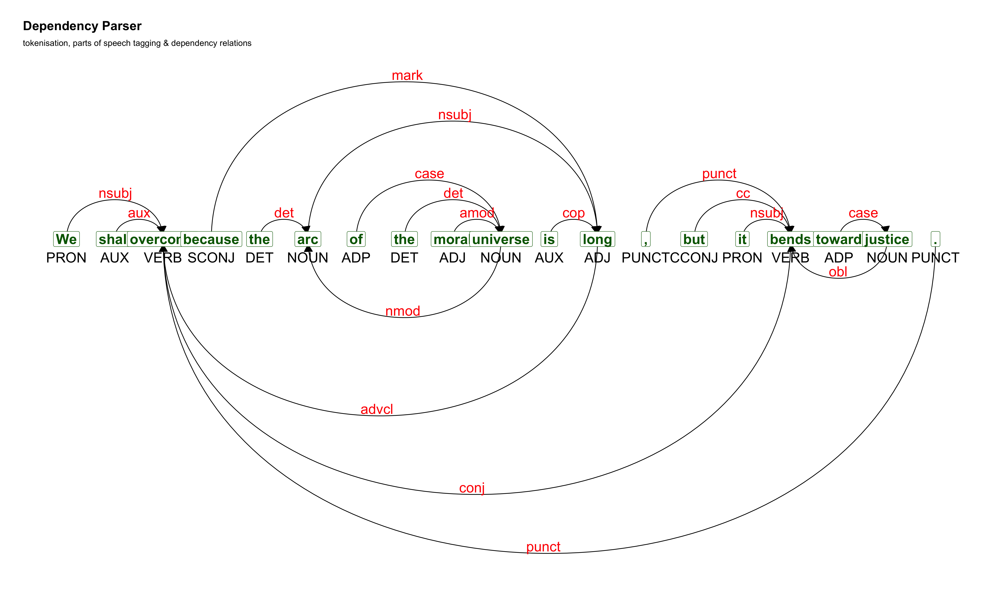

Textual documents are of great interest to social scientists. Think in the field of political communication: politicians communicate, persuade, and verbally negotiate, both in written and spoken form. Texts of political speeches, legislation proposals, parliamentary interventions, statements and interviews, social media messages provide a rich source of material for studying political dynamics.
Similarly, more generally, written and spoken texts provide an inexhaustible source of insights into culture understood sociologically, social relationships, and of course the dynamics of communication on old and new media.
Given the amount of textual documents, and the impossibility or the enormous amount of resources required to analyze them manually, quantitative, statistical and computational text analysis techniques have and continue to attract great interest. In this seminar, we will present a wide introduction to the available methods.
Adapted from Grimmer, J., & Stewart, B. M. (2013). Text as data: The promise and pitfalls of automatic content analysis methods for political texts. Political analysis, 21(3), 267-297.
Tripartite structure:
Basic objectives:
R is a free software environment for statistical computing and graphics. It compiles and runs on a wide variety of UNIX platforms, Windows and MacOS.
Created by the New Zealand and Canadian statistics professors Ross Ihaka and Robert Gentleman at the University of Auckland (New Zealand). It is one of the most commonly used programming languages in data mining.
The first official 1.0 version was released on 29 February 2000. The latest release (as of today, 7 February 2023), has been R 4.2.2 on 31 October 2022.
Official website: https://www.r-project.org/
The R programming language boasts a thriving community of both users and developers.
There are numerous resources available online for learning to code in R, as well as for getting assistance with common coding challenges.
A popular destination for the R community is Stack Overflow, where one can find numerous questions and answers tagged with “R”: https://stackoverflow.com/questions/tagged/r
RStudio is an integrated development environment (IDE) for R (and Python).
It includes a console, syntax-highlighting editor that supports direct code execution, and tools for plotting, history, debugging, and workspace management.
RStudio is available in open source and commercial editions and runs on the desktop (Windows, Mac, and Linux).
RStudio interface
RStudio projects are specialized environments dedicated to a specific data analysis projects.
These projects provide a dedicated workspace on your computer where you can efficiently organize data, scripts, and the results of your analysis, along with their corresponding folders.
It is recommended to create separate projects for each data analysis project, and for the purposes of this seminar, we will also create an RStudio project.
Both R and RStudio are capable of handling a variety of data formats, such as CSV, RDS, and XLSX. Data can be uploaded and saved in these different formats through the use of specific functions. The most frequently used format is CSV, and it can be imported using the following method:
The read.csv function can read files stored locally and online (e.g., on GitHub repositories):
The R language can be thought of as comprising objects and functions. Objects are named entities that hold information, while functions are actions that modify the objects.
A data analysis script, essentially a piece of code, can be seen as a logical sequence of manipulations on data objects, ultimately resulting in an output object that represents the outcome of the analysis.
Functions can be viewed as “machines” that transform an object into another object. For example, the arithmetic operation of addition is a function that takes two or more numbers as inputs and returns their sum.
The inputs to a function are referred to as arguments, and the output or result of the function is its value.
R packages, or libraries, are collections of functions that enhance the capabilities of R. For instance, the Quanteda package provides text analysis functions for R users, and the stringr package offers a comprehensive set of functions that simplify working with character sequences (such as text).
Data can come in various formats, with the most common being the tabular format. This format represents a matrix of cases and variables, where cases are represented by rows and variables by columns. The cells of the matrix hold a case’s measurement for a given variable.
In R, this is referred to as a data frame format. A data frame can consist of different data types, including numeric, integer, nominal, as well as dates and times.
case A_var B_var C_var E_var F_var
1 id_1 -0.33 red 9 2023-02-09 Coding is fun
2 id_2 0.03 blue 6 2023-02-10 The cat is on the table
3 id_3 -0.37 white 3 2023-02-13 Cogito ergo sum
4 id_4 -0.29 green 10 2023-02-16 This is a sentence
5 id_5 0.42 yellow 7 2023-02-17 Ceci n'est pas une pipeText analysis primarily involves the analysis of textual data, which is usually in the form of sentences or extended text. In R, these data are stored as character data types.
doc_id text paperName
1 text1 support for ukip con... express
2 text2 news 30 lawless migr... express
3 text3 news 30 lawless migr... express
4 text4 news £10m benefits s... express
5 text5 news taxpayers £150m... express
6 text6 news un expert hits ... expressClick here to open the tutorial.
To analyze text statistically, the text must be transformed into a numerical representation that is suitable for mathematical analysis. One of the most commonly used representations is the bag-of-words model.
The bag-of-words model represents text as a collection of its individual words, disregarding grammar and word order, but keeping track of word frequency. This representation is commonly known as a Document-Term-Matrix, Term-Document-Matrix, or Document-Feature-Matrix, and is abbreviated as DTM, TDM, or DFM.
In text analysis, each document serves as a case and the words in the document are the variables. The smallest unit of analysis is referred to as a document and can range from a sentence fragment to an entire collection of documents, depending on the analysis unit. The cells in the matrix represent the frequency or weighted frequency of a specific word in a specific document.
Mathematically, each document is represented as a numerical vector, which is a series of numbers. The vectors, not the words, are the objects of statistical analysis.
The content of the matrix’s cells are usually the frequencies or weighted frequencies of appearance of a specific word in a specific document.
In mathematical terms, each documents is represented as a numeric vector, that is a series of numbers. The vectors, and not the words, are the object of statistical analysis.
The process of text analysis usually starts with a collection of documents, known as a corpus.
library(quanteda)
text <- c("My cat is on the table", "My cat hates Jim's dog", "My cat likes milk", "This dog is nice", "I love this dog", "This dog is furry")
text %>%
corpus()Corpus consisting of 6 documents.
text1 :
"My cat is on the table"
text2 :
"My cat hates Jim's dog"
text3 :
"My cat likes milk"
text4 :
"This dog is nice"
text5 :
"I love this dog"
text6 :
"This dog is furry"To perform statistical analysis, the corpus is transformed into a Document-Feature-Matrix (dfm).
Document-feature matrix of: 6 documents, 16 features (71.88% sparse) and 0 docvars.
features
docs my cat is on the table hates jim's dog likes
text1 1 1 1 1 1 1 0 0 0 0
text2 1 1 0 0 0 0 1 1 1 0
text3 1 1 0 0 0 0 0 0 0 1
text4 0 0 1 0 0 0 0 0 1 0
text5 0 0 0 0 0 0 0 0 1 0
text6 0 0 1 0 0 0 0 0 1 0
[ reached max_nfeat ... 6 more features ]To understand how statistical processing is done on textual data, consider a corpus of documents from three known authors and one unknown author. We can predict the most likely author of the contested document by using probability calculation.
authors by man upon
1 Hamilton 859 102 374
2 Jay 82 0 1
3 Madison 474 17 7
4 Disputed Essay 15 2 0Probabilistic models describe the data generation process using probabilities and unknown parameters, which can be estimated from the observed data. One such model is the multinomial distribution, which is a natural choice for the count data in a document term matrix.
A document, \(W_i\), can be considered as a random draw from a multinomial distribution with a parameter \(\mu\). The multinomial distribution is an extension of the binomial distribution and its probability mass function is given as:
\[ p(W_i|\mu)={\frac{M!}{\prod_{j=1}^{J} W_{ij}!}\prod_{j=1}^{J}\mu_j^{W_{ij}}.} \]
Where \(M\) is the document length (i.e., the total number of words, or tokens), \(W_{ij}\) is the frequency of the word \(j\) in document \(W_i\), and \(\mu_j\) is the probability of occurrence of the word \(j\) under the model (and \(!\) means factorial, i.e., the sum of multiplication of all the integers smaller than that positive integer (e.g., \(3!=3*2*1=6\)).
In real-world situations, we typically observe the word counts \(W_i\) and estimate the underlying parameter \(\mu_j\) using the maximum likelihood estimate, which is simply the number of times word \(j\) is used divided by the total number of tokens.
\[\hat \mu_j = \frac{W_{ij}}{M_i}\]
With regards to the disputed essay, its author is one of the three possible authors. The multinomial language model provides a way to assess the probability that the disputed essay was written by each author.
# A tibble: 4 × 5
# Rowwise:
authors by man upon M
<chr> <dbl> <dbl> <dbl> <dbl>
1 Hamilton 859 102 374 1335
2 Jay 82 0 1 83
3 Madison 474 17 7 498
4 Disputed Essay 15 2 0 17We assume each author uses a separate multinomial distribution with a fixed parameter \(\mu_j\) that generates documents with different word frequencies.
\[ W_H \sim Multinomial(M=1335, \mu_H)\\ W_J \sim Multinomial(M=83, \mu_J)\\ W_M \sim Multinomial(M=498, \mu_M) \]
We can estimate the author-specific \(\mu\) using the maximum likelihood estimate \(\hat \mu_j = \frac{W_{ij}}{M_i}\). For example, for Hamilton:
\[ \begin{aligned} & \hat \mu_H = (\frac{859}{859+102+374}, \frac{102}{859+102+374}, \frac{374}{859+102+374})\\ & = (.64, .08, .28) \end{aligned} \]
# A tibble: 4 × 8
authors by man upon M mu_by mu_man upon_man
<chr> <dbl> <dbl> <dbl> <dbl> <dbl> <dbl> <dbl>
1 Hamilton 859 102 374 1335 0.64 0.08 0.28
2 Jay 82 0 1 83 0.99 0 0.01
3 Madison 474 17 7 498 0.95 0.03 0.01
4 Disputed Essay 15 2 0 17 0.88 0.12 0 Using the multinomial mass probability function \(p(W_i|\mu)={\frac{M!}{\prod_{j=1}^{J} W_{ij}!}\prod_{j=1}^{J}\mu_j^{W_{ij}}}\) we can calculate the probability that the disputed document was generated by one of the three authors. For example, the probability that the disputed text was written by Hamilton is:
\[ p{(W_{disputed}|\hat\mu_H)=\frac{17!}{(15!)(2!)(0!)}(.64)^{15}(.08)^2(.28)^0} \\ =0.001 \]
The probabilities for Jay and Madison are 0 and 0.077, respectively. This calculation clearly favors Madison as the author of the disputed essay.
A text analysis project begins with the crucial step of data cleaning and pre-processing. This phase involves a series of actions that aim to simplify the complex structure of the text data, leading to the creation of a Document Term Matrix ready for analysis.
Data cleaning is vital as it ensures the validity of the analysis. The adage “garbage in, garbage out” is particularly applicable to textual data due to its complexity. Overall, data cleaning and pre-processing are critical steps in a text analysis project that lay the foundation for accurate and meaningful results.
The cleaning and pre-processing phase encompasses techniques for reducing the complexity of the data, such as removing punctuation, converting all text to lowercase, removing stop words, eliminating extra white spaces, performing lemmatization or stemming, and retaining only the most relevant words.
The common techniques in data cleaning and pre-processing include using regular expressions (regex)1 and Part-of-Speech (POS) tagging. Regular expressions are patterns that describe a set of strings and can be used to identify elements such as punctuation marks and spaces.
Unless researchers are specifically studying the use of punctuation, punctuation marks are usually removed as they do not carry the meanings that social science researchers are typically interested in1.
[1] "We shall overcome because the arc of the moral universe is long, but it bends toward justice."[1] "We shall overcome because the arc of the moral universe is long but it bends toward justice "The software we are using is case-sensitive, meaning that words written in uppercase and lowercase are treated as distinct, even though they have the same meaning. As a result, it is common practice to convert all text to lowercase.
[1] "We shall overcome because the arc of the moral universe is long but it bends toward justice "[1] "we shall overcome because the arc of the moral universe is long but it bends toward justice "Stop words are commonly used grammatical parts of a language that do not carry any meaning and are usually removed.
[1] "we shall overcome because the arc of the moral universe is long but it bends toward justice "[1] " shall overcome arc moral universe long bends toward justice "t is common for text to have excessive whitespaces scattered throughout, which may result from removing words. These whitespaces can be present between words or at the beginning and end of the document.
[1] " shall overcome arc moral universe long bends toward justice "[1] "shall overcome arc moral universe long bends toward justice"In many instances, words may be written in variations, but share a common origin and convey the same information. For instance, the words “words” and “word” may be distinct types in the vocabulary, however they represent the singular and plural forms of the same term “word”.
Lemmatization involves mapping words to their lemma, which is their standard form, often found in a dictionary. It helps to simplify the complexity of the words in the text.
[1] "shall overcome arc moral universe long bends toward justice"[1] "shall overcome arc moral universe long bend toward justice"Lemmatization is typically provided by tools that also include part-of-speech annotation. One such tool is TreeTagger, which is independent from R but utilized by other R packages that provide lemmatization functions, such as textstem. Another option is UDPipe1, which we will be using in the tutorial. The UDPipe annotation process is based on pre-trained models build on Universal Dependencies treebanks and are made available for more than 65 languages.
Lemmatization maps words to their base form while stemming trims the endings of words, which typically carry inflections.
This process is generally faster and can be useful in certain scenarios, such as when the emphasis is on a quantitative rather than a lexical analysis.
[1] "taxing taxes taxation tax"[1] "tax" "tax" "taxat" "tax" [1] "argue argued argues arguing"[1] "argu" "argu" "argu" "argu"We started with a 66-word sentence and through several steps, we arrived at a 30-word sentence. To further streamline our data for a more impactful analysis, there are two common approaches: selecting the most relevant features based on their grammatical function or based on their frequency.
For instance, if the focus is on topic identification, we may choose to work with only the most meaningful parts of the text such as nouns and verbs while excluding adjectives. On the other hand, if we are interested in the emotional tone, we may opt to work with adjectives only. To choose terms based on their grammatical functions, a Part-of-Speech (POS) analysis is necessary. This procedure identifies the grammatical role of words in the text.
token lemma upos token_id head_token_id
1 shall shall AUX 1 2
2 overcome overcome VERB 2 0
3 arc arc ADJ 3 5
4 moral moral ADJ 4 5POS-tagging enables the analysis of the dependency structure of a sentence.
Dependency Parser
Another method of selecting features involves setting a cutoff threshold for the words to be included. Words that appear fewer times than the threshold are then excluded from the analysis. This can be done once the term document matrix has been constructed.
Click here to open the tutorial
Quanteda is one of the most comprehensive and recent R text analysis packages available, providing a wide range of functionalities for quantitative text analysis. It enables users to manage text corpora, process and manipulate tokens, extract and analyze keywords, perform machine learning tasks, visualize results, and more.
Quanteda offers a fast way of creating a Document Feature Matrix, which it calls a dfm. As an example, we can use a sample data frame containing US Presidential speeches from the Miller Center of Public Affairs to quickly generate a corpus and dfm. It is important to create both a corpus and dfm as they enable different types of analysis.
ps <- read.csv("data/presidential-speeches-sample.csv")
ps_annotation <- read.csv("data/presidential-speeches-sample-udpipe-annotate.csv")
head(ps[, c("date", "president", "title", "transcript")]) date president
1 1860-02-27 Abraham Lincoln
2 1862-12-01 Abraham Lincoln
3 1863-01-01 Abraham Lincoln
4 1829-12-08 Andrew Jackson
5 1830-12-06 Andrew Jackson
6 1829-03-04 Andrew Jackson
title
1 February 27, 1860: Cooper Union Address
2 December 1, 1862: Second Annual Message
3 January 1, 1863: Emancipation Proclamation
4 December 8, 1829: First Annual Message to Congress
5 December 6, 1830: Second Annual Message to Congress
6 March 4, 1829: First Inaugural Address
transcript
1 Mr. President and fellow citizens of New York:\n\nThe facts with which I shall deal this evening are mainly old and familiar; nor is there anything new in the general use I shall make of them. If there shall be any novelty, it will be in the mode of presenting the facts, and the inferences and observations following that presentation.\n\nIn his speech last autumn, at Columbus, Ohio, as reported in "The New-York Times," Senator Douglas said:\n\n"Our fathers, when they framed the Government under which we live, understood this question just as well, and even better, than we do now."\n\nI fully indorse this, and I adopt it as a text for this discourse. I so adopt it because it furnishes a precise and an agreed starting point for a discussion between Republicans and that wing of the Democracy headed by Senator Douglas. It simply leaves the inquiry: "What was the understanding those fathers had of the question mentioned?"\n\nWhat is the frame of government under which we live?\n\nThe answer must be: "The Constitution of the United States." That Constitution consists of the original, framed in 1787, (and under which the present government first went into operation,) and twelve subsequently framed amendments, the first ten of which were framed in 1789.\n\nWho were our fathers that framed the Constitution? I suppose the "thirty-nine" who signed the original instrument may be fairly called our fathers who framed that part of the present Government. It is almost exactly true to say they framed it, and it is altogether true to say they fairly represented the opinion and sentiment of the whole nation at that time. Their names, being familiar to nearly all, and accessible to quite all, need not now be repeated.\n\nI take these "thirty-nine," for the present, as being "our fathers who framed the Government under which we live."\n\nWhat is the question which, according to the text, those fathers understood "just as well, and even better than we do now?"\n\nIt is this: Does the proper division of local from federal authority, or anything in the Constitution, forbid our Federal Government to control as to slavery in our Federal Territories?\n\nUpon this, Senator Douglas holds the affirmative, and Republicans the negative. This affirmation and denial form an issue; and this issue - this question - is precisely what the text declares our fathers understood "better than we."\n\nLet us now inquire whether the "thirty-nine," or any of them, ever acted upon this question; and if they did, how they acted upon it - how they expressed that better understanding?\n\nIn 1784, three years before the Constitution - the United States then owning the Northwestern Territory, and no other, the Congress of the Confederation had before them the question of prohibiting slavery in that Territory; and four of the "thirty-nine" who afterward framed the Constitution, were in that Congress, and voted on that question. Of these, Roger Sherman, Thomas Mifflin, and Hugh Williamson voted for the prohibition, thus showing that, in their understanding, no line dividing local from federal authority, nor anything else, properly forbade the Federal Government to control as to slavery in federal territory. The other of the four - James M'Henry - voted against the prohibition, showing that, for some cause, he thought it improper to vote for it.\n\nIn 1787, still before the Constitution, but while the Convention was in session framing it, and while the Northwestern Territory still was the only territory owned by the United States, the same question of prohibiting slavery in the territory again came before the Congress of the Confederation; and two more of the "thirty-nine" who afterward signed the Constitution, were in that Congress, and voted on the question. They were William Blount and William Few; and they both voted for the prohibition - thus showing that, in their understanding, no line dividing local from federal authority, nor anything else, properly forbids the Federal Government to control as to slavery in Federal territory. This time the prohibition became a law, being part of what is now well known as the Ordinance of '87.\n\nThe question of federal control of slavery in the territories, seems not to have been directly before the Convention which framed the original Constitution; and hence it is not recorded that the "thirty-nine," or any of them, while engaged on that instrument, expressed any opinion on that precise question.\n\nIn 1789, by the first Congress which sat under the Constitution, an act was passed to enforce the Ordinance of '87, including the prohibition of slavery in the Northwestern Territory. The bill for this act was reported by one of the "thirty-nine," Thomas Fitzsimmons, then a member of the House of Representatives from Pennsylvania. It went through all its stages without a word of opposition, and finally passed both branches without yeas and nays, which is equivalent to a unanimous passage. In this Congress there were sixteen of the thirty-nine fathers who framed the original Constitution. They were John Langdon, Nicholas Gilman, Wm. S. Johnson, Roger Sherman, Robert Morris, Thos. Fitzsimmons, William Few, Abraham Baldwin, Rufus King, William Paterson, George Clymer, Richard Bassett, George Read, Pierce Butler, Daniel Carroll, James Madison.\n\nThis shows that, in their understanding, no line dividing local from federal authority, nor anything in the Constitution, properly forbade Congress to prohibit slavery in the federal territory; else both their fidelity to correct principle, and their oath to support the Constitution, would have constrained them to oppose the prohibition.\n\nAgain, George Washington, another of the "thirty-nine," was then President of the United States, and, as such approved and signed the bill; thus completing its validity as a law, and thus showing that, in his understanding, no line dividing local from federal authority, nor anything in the Constitution, forbade the Federal Government, to control as to slavery in federal territory.\n\nNo great while after the adoption of the original Constitution, North Carolina ceded to the Federal Government the country now constituting the State of Tennessee; and a few years later Georgia ceded that which now constitutes the States of Mississippi and Alabama. In both deeds of cession it was made a condition by the ceding States that the Federal Government should not prohibit slavery in the ceded territory. Besides this, slavery was then actually in the ceded country. Under these circumstances, Congress, on taking charge of these countries, did not absolutely prohibit slavery within them. But they did interfere with it - take control of it - even there, to a certain extent. In 1798, Congress organized the Territory of Mississippi. In the act of organization, they prohibited the bringing of slaves into the Territory, from any place without the United States, by fine, and giving freedom to slaves so bought. This act passed both branches of Congress without yeas and nays. In that Congress were three of the "thirty-nine" who framed the original Constitution. They were John Langdon, George Read and Abraham Baldwin. They all, probably, voted for it. Certainly they would have placed their opposition to it upon record, if, in their understanding, any line dividing local from federal authority, or anything in the Constitution, properly forbade the Federal Government to control as to slavery in federal territory.\n\nIn 1803, the Federal Government purchased the Louisiana country. Our former territorial acquisitions came from certain of our own States; but this Louisiana country was acquired from a foreign nation. In 1804, Congress gave a territorial organization to that part of it which now constitutes the State of Louisiana. New Orleans, lying within that part, was an old and comparatively large city. There were other considerable towns and settlements, and slavery was extensively and thoroughly intermingled with the people. Congress did not, in the Territorial Act, prohibit slavery; but they did interfere with it - take control of it - in a more marked and extensive way than they did in the case of Mississippi. The substance of the provision therein made, in relation to slaves, was:\n\nFirst. That no slave should be imported into the territory from foreign parts.\n\nSecond. That no slave should be carried into it who had been imported into the United States since the first day of May, 1798.\n\nThird. That no slave should be carried into it, except by the owner, and for his own use as a settler; the penalty in all the cases being a fine upon the violator of the law, and freedom to the slave.\n\nThis act also was passed without yeas and nays. In the Congress which passed it, there were two of the "thirty-nine." They were Abraham Baldwin and Jonathan Dayton. As stated in the case of Mississippi, it is probable they both voted for it. They would not have allowed it to pass without recording their opposition to it, if, in their understanding, it violated either the line properly dividing local from federal authority, or any provision of the Constitution.\n\nIn 1819-20, came and passed the Missouri question. Many votes were taken, by yeas and nays, in both branches of Congress, upon the various phases of the general question. Two of the "thirty-nine" - Rufus King and Charles Pinckney - were members of that Congress. Mr. King steadily voted for slavery prohibition and against all compromises, while Mr. Pinckney as steadily voted against slavery prohibition and against all compromises. By this, Mr. King showed that, in his understanding, no line dividing local from federal authority, nor anything in the Constitution, was violated by Congress prohibiting slavery in federal territory; while Mr. Pinckney, by his votes, showed that, in his understanding, there was some sufficient reason for opposing such prohibition in that case.\n\nThe cases I have mentioned are the only acts of the "thirty-nine," or of any of them, upon the direct issue, which I have been able to discover.\n\nTo enumerate the persons who thus acted, as being four in 1784, two in 1787, seventeen in 1789, three in 1798, two in 1804, and two in 1819-20 - there would be thirty of them. But this would be counting John Langdon, Roger Sherman, William Few, Rufus King, and George Read each twice, and Abraham Baldwin, three times. The true number of those of the "thirty-nine" whom I have shown to have acted upon the question, which, by the text, they understood better than we, is twenty-three, leaving sixteen not shown to have acted upon it in any way.\n\nHere, then, we have twenty-three out of our thirty-nine fathers "who framed the government under which we live," who have, upon their official responsibility and their corporal oaths, acted upon the very question which the text affirms they "understood just as well, and even better than we do now;" and twenty-one of them - a clear majority of the whole "thirty-nine" - so acting upon it as to make them guilty of gross political impropriety and willful perjury, if, in their understanding, any proper division between local and federal authority, or anything in the Constitution they had made themselves, and sworn to support, forbade the Federal Government to control as to slavery in the federal territories. Thus the twenty-one acted; and, as actions speak louder than words, so actions, under such responsibility, speak still louder.\n\nTwo of the twenty-three voted against Congressional prohibition of slavery in the federal territories, in the instances in which they acted upon the question. But for what reasons they so voted is not known. They may have done so because they thought a proper division of local from federal authority, or some provision or principle of the Constitution, stood in the way; or they may, without any such question, have voted against the prohibition, on what appeared to them to be sufficient grounds of expediency. No one who has sworn to support the Constitution can conscientiously vote for what he understands to be an unconstitutional measure, however expedient he may think it; but one may and ought to vote against a measure which he deems constitutional, if, at the same time, he deems it inexpedient. It, therefore, would be unsafe to set down even the two who voted against the prohibition, as having done so because, in their understanding, any proper division of local from federal authority, or anything in the Constitution, forbade the Federal Government to control as to slavery in federal territory.\n\nThe remaining sixteen of the "thirty-nine," so far as I have discovered, have left no record of their understanding upon the direct question of federal control of slavery in the federal territories. But there is much reason to believe that their understanding upon that question would not have appeared different from that of their twenty-three compeers, had it been manifested at all.\n\nFor the purpose of adhering rigidly to the text, I have purposely omitted whatever understanding may have been manifested by any person, however distinguished, other than the thirty-nine fathers who framed the original Constitution; and, for the same reason, I have also omitted whatever understanding may have been manifested by any of the "thirty-nine" even, on any other phase of the general question of slavery. If we should look into their acts and declarations on those other phases, as the foreign slave trade, and the morality and policy of slavery generally, it would appear to us that on the direct question of federal control of slavery in federal territories, the sixteen, if they had acted at all, would probably have acted just as the twenty-three did. Among that sixteen were several of the most noted anti-slavery men of those times - as Dr. Franklin, Alexander Hamilton and Gouverneur Morris - while there was not one now known to have been otherwise, unless it may be John Rutledge, of South Carolina.\n\nThe sum of the whole is, that of our thirty-nine fathers who framed the original Constitution, twenty-one - a clear majority of the whole - certainly understood that no proper division of local from federal authority, nor any part of the Constitution, forbade the Federal Government to control slavery in the federal territories; while all the rest probably had the same understanding. Such, unquestionably, was the understanding of our fathers who framed the original Constitution; and the text affirms that they understood the question "better than we."\n\nBut, so far, I have been considering the understanding of the question manifested by the framers of the original Constitution. In and by the original instrument, a mode was provided for amending it; and, as I have already stated, the present frame of "the Government under which we live" consists of that original, and twelve amendatory articles framed and adopted since. Those who now insist that federal control of slavery in federal territories violates the Constitution, point us to the provisions which they suppose it thus violates; and, as I understand, that all fix upon provisions in these amendatory articles, and not in the original instrument. The Supreme Court, in the Dred Scott case, plant themselves upon the fifth amendment, which provides that no person shall be deprived of "life, liberty or property without due process of law;" while Senator Douglas and his peculiar adherents plant themselves upon the tenth amendment, providing that "the powers not delegated to the United States by the Constitution" "are reserved to the States respectively, or to the people."\n\nNow, it so happens that these amendments were framed by the first Congress which sat under the Constitution - the identical Congress which passed the act already mentioned, enforcing the prohibition of slavery in the Northwestern Territory. Not only was it the same Congress, but they were the identical, same individual men who, at the same session, and at the same time within the session, had under consideration, and in progress toward maturity, these Constitutional amendments, and this act prohibiting slavery in all the territory the nation then owned. The Constitutional amendments were introduced before, and passed after the act enforcing the Ordinance of '87; so that, during the whole pendency of the act to enforce the Ordinance, the Constitutional amendments were also pending.\n\nThe seventy-six members of that Congress, including sixteen of the framers of the original Constitution, as before stated, were pre- eminently our fathers who framed that part of "the Government under which we live," which is now claimed as forbidding the Federal Government to control slavery in the federal territories.\n\nIs it not a little presumptuous in any one at this day to affirm that the two things which that Congress deliberately framed, and carried to maturity at the same time, are absolutely inconsistent with each other? And does not such affirmation become impudently absurd when coupled with the other affirmation from the same mouth, that those who did the two things, alleged to be inconsistent, understood whether they really were inconsistent better than we - better than he who affirms that they are inconsistent?\n\nIt is surely safe to assume that the thirty-nine framers of the original Constitution, and the seventy-six members of the Congress which framed the amendments thereto, taken together, do certainly include those who may be fairly called "our fathers who framed the Government under which we live." And so assuming, I defy any man to show that any one of them ever, in his whole life, declared that, in his understanding, any proper division of local from federal authority, or any part of the Constitution, forbade the Federal Government to control as to slavery in the federal territories. I go a step further. I defy any one to show that any living man in the whole world ever did, prior to the beginning of the present century, (and I might almost say prior to the beginning of the last half of the present century,) declare that, in his understanding, any proper division of local from federal authority, or any part of the Constitution, forbade the Federal Government to control as to slavery in the federal territories. To those who now so declare, I give, not only "our fathers who framed the Government under which we live," but with them all other living men within the century in which it was framed, among whom to search, and they shall not be able to find the evidence of a single man agreeing with them.\n\nNow, and here, let me guard a little against being misunderstood. I do not mean to say we are bound to follow implicitly in whatever our fathers did. To do so, would be to discard all the lights of current experience - to reject all progress - all improvement. What I do say is, that if we would supplant the opinions and policy of our fathers in any case, we should do so upon evidence so conclusive, and argument so clear, that even their great authority, fairly considered and weighed, cannot stand; and most surely not in a case whereof we ourselves declare they understood the question better than we.\n\nIf any man at this day sincerely believes that a proper division of local from federal authority, or any part of the Constitution, forbids the Federal Government to control as to slavery in the federal territories, he is right to say so, and to enforce his position by all truthful evidence and fair argument which he can. But he has no right to mislead others, who have less access to history, and less leisure to study it, into the false belief that "our fathers who framed the Government under which we live" were of the same opinion - thus substituting falsehood and deception for truthful evidence and fair argument. If any man at this day sincerely believes "our fathers who framed the Government under which we live," used and applied principles, in other cases, which ought to have led them to understand that a proper division of local from federal authority or some part of the Constitution, forbids the Federal Government to control as to slavery in the federal territories, he is right to say so. But he should, at the same time, brave the responsibility of declaring that, in his opinion, he understands their principles better than they did themselves; and especially should he not shirk that responsibility by asserting that they "understood the question just as well, and even better, than we do now."\n\nBut enough! Let all who believe that "our fathers, who framed the Government under which we live, understood this question just as well, and even better, than we do now," speak as they spoke, and act as they acted upon it. This is all Republicans ask - all Republicans desire - in relation to slavery. As those fathers marked it, so let it be again marked, as an evil not to be extended, but to be tolerated and protected only because of and so far as its actual presence among us makes that toleration and protection a necessity. Let all the guarantees those fathers gave it, be, not grudgingly, but fully and fairly, maintained. For this Republicans contend, and with this, so far as I know or believe, they will be content.\n\nAnd now, if they would listen - as I suppose they will not - I would address a few words to the Southern people.\n\nI would say to them: - You consider yourselves a reasonable and a just people; and I consider that in the general qualities of reason and justice you are not inferior to any other people. Still, when you speak of us Republicans, you do so only to denounce us a reptiles, or, at the best, as no better than outlaws. You will grant a hearing to pirates or murderers, but nothing like it to "Black Republicans." In all your contentions with one another, each of you deems an unconditional condemnation of "Black Republicanism" as the first thing to be attended to. Indeed, such condemnation of us seems to be an indispensable prerequisite - license, so to speak - among you to be admitted or permitted to speak at all. Now, can you, or not, be prevailed upon to pause and to consider whether this is quite just to us, or even to yourselves? Bring forward your charges and specifications, and then be patient long enough to hear us deny or justify.\n\nYou say we are sectional. We deny it. That makes an issue; and the burden of proof is upon you. You produce your proof; and what is it? Why, that our party has no existence in your section - gets no votes in your section. The fact is substantially true; but does it prove the issue? If it does, then in case we should, without change of principle, begin to get votes in your section, we should thereby cease to be sectional. You cannot escape this conclusion; and yet, are you willing to abide by it? If you are, you will probably soon find that we have ceased to be sectional, for we shall get votes in your section this very year. You will then begin to discover, as the truth plainly is, that your proof does not touch the issue. The fact that we get no votes in your section, is a fact of your making, and not of ours. And if there be fault in that fact, that fault is primarily yours, and remains until you show that we repel you by some wrong principle or practice. If we do repel you by any wrong principle or practice, the fault is ours; but this brings you to where you ought to have started - to a discussion of the right or wrong of our principle. If our principle, put in practice, would wrong your section for the benefit of ours, or for any other object, then our principle, and we with it, are sectional, and are justly opposed and denounced as such. Meet us, then, on the question of whether our principle, put in practice, would wrong your section; and so meet it as if it were possible that something may be said on our side. Do you accept the challenge? No! Then you really believe that the principle which "our fathers who framed the Government under which we live" thought so clearly right as to adopt it, and indorse it again and again, upon their official oaths, is in fact so clearly wrong as to demand your condemnation without a moment's consideration.\n\nSome of you delight to flaunt in our faces the warning against sectional parties given by Washington in his Farewell Address. Less than eight years before Washington gave that warning, he had, as President of the United States, approved and signed an act of Congress, enforcing the prohibition of slavery in the Northwestern Territory, which act embodied the policy of the Government upon that subject up to and at the very moment he penned that warning; and about one year after he penned it, he wrote LaFayette that he considered that prohibition a wise measure, expressing in the same connection his hope that we should at some time have a confederacy of free States.\n\nBearing this in mind, and seeing that sectionalism has since arisen upon this same subject, is that warning a weapon in your hands against us, or in our hands against you? Could Washington himself speak, would he cast the blame of that sectionalism upon us, who sustain his policy, or upon you who repudiate it? We respect that warning of Washington, and we commend it to you, together with his example pointing to the right application of it.\n\nBut you say you are conservative - eminently conservative - while we are revolutionary, destructive, or something of the sort. What is conservatism? Is it not adherence to the old and tried, against the new and untried? We stick to, contend for, the identical old policy on the point in controversy which was adopted by "our fathers who framed the Government under which we live;" while you with one accord reject, and scout, and spit upon that old policy, and insist upon substituting something new. True, you disagree among yourselves as to what that substitute shall be. You are divided on new propositions and plans, but you are unanimous in rejecting and denouncing the old policy of the fathers. Some of you are for reviving the foreign slave trade; some for a Congressional Slave-Code for the Territories; some for Congress forbidding the Territories to prohibit Slavery within their limits; some for maintaining Slavery in the Territories through the judiciary; some for the "gur-reat pur-rinciple" that "if one man would enslave another, no third man should object," fantastically called "Popular Sovereignty;" but never a man among you is in favor of federal prohibition of slavery in federal territories, according to the practice of "our fathers who framed the Government under which we live." Not one of all your various plans can show a precedent or an advocate in the century within which our Government originated. Consider, then, whether your claim of conservatism for yourselves, and your charge or destructiveness against us, are based on the most clear and stable foundations.\n\nAgain, you say we have made the slavery question more prominent than it formerly was. We deny it. We admit that it is more prominent, but we deny that we made it so. It was not we, but you, who discarded the old policy of the fathers. We resisted, and still resist, your innovation; and thence comes the greater prominence of the question. Would you have that question reduced to its former proportions? Go back to that old policy. What has been will be again, under the same conditions. If you would have the peace of the old times, readopt the precepts and policy of the old times.\n\nYou charge that we stir up insurrections among your slaves. We deny it; and what is your proof? Harper's Ferry! John Brown!! John Brown was no Republican; and you have failed to implicate a single Republican in his Harper's Ferry enterprise. If any member of our party is guilty in that matter, you know it or you do not know it. If you do know it, you are inexcusable for not designating the man and proving the fact. If you do not know it, you are inexcusable for asserting it, and especially for persisting in the assertion after you have tried and failed to make the proof. You need to be told that persisting in a charge which one does not know to be true, is simply malicious slander.\n\nSome of you admit that no Republican designedly aided or encouraged the Harper's Ferry affair, but still insist that our doctrines and declarations necessarily lead to such results. We do not believe it. We know we hold to no doctrine, and make no declaration, which were not held to and made by "our fathers who framed the Government under which we live." You never dealt fairly by us in relation to this affair. When it occurred, some important State elections were near at hand, and you were in evident glee with the belief that, by charging the blame upon us, you could get an advantage of us in those elections. The elections came, and your expectations were not quite fulfilled. Every Republican man knew that, as to himself at least, your charge was a slander, and he was not much inclined by it to cast his vote in your favor. Republican doctrines and declarations are accompanied with a continual protest against any interference whatever with your slaves, or with you about your slaves. Surely, this does not encourage them to revolt. True, we do, in common with "our fathers, who framed the Government under which we live," declare our belief that slavery is wrong; but the slaves do not hear us declare even this. For anything we say or do, the slaves would scarcely know there is a Republican party. I believe they would not, in fact, generally know it but for your misrepresentations of us, in their hearing. In your political contests among yourselves, each faction charges the other with sympathy with Black Republicanism; and then, to give point to the charge, defines Black Republicanism to simply be insurrection, blood and thunder among the slaves.\n\nSlave insurrections are no more common now than they were before the Republican party was organized. What induced the Southampton insurrection, twenty-eight years ago, in which, at least three times as many lives were lost as at Harper's Ferry? You can scarcely stretch your very elastic fancy to the conclusion that Southampton was "got up by Black Republicanism." In the present state of things in the United States, I do not think a general, or even a very extensive slave insurrection is possible. The indispensable concert of action cannot be attained. The slaves have no means of rapid communication; nor can incendiary freemen, black or white, supply it. The explosive materials are everywhere in parcels; but there neither are, nor can be supplied, the indispensable connecting trains.\n\nMuch is said by Southern people about the affection of slaves for their masters and mistresses; and a part of it, at least, is true. A plot for an uprising could scarcely be devised and communicated to twenty individuals before some one of them, to save the life of a favorite master or mistress, would divulge it. This is the rule; and the slave revolution in Hayti was not an exception to it, but a case occurring under peculiar circumstances. The gunpowder plot of British history, though not connected with slaves, was more in point. In that case, only about twenty were admitted to the secret; and yet one of them, in his anxiety to save a friend, betrayed the plot to that friend, and, by consequence, averted the calamity. Occasional poisonings from the kitchen, and open or stealthy assassinations in the field, and local revolts extending to a score or so, will continue to occur as the natural results of slavery; but no general insurrection of slaves, as I think, can happen in this country for a long time. Whoever much fears, or much hopes for such an event, will be alike disappointed.\n\nIn the language of Mr. Jefferson, uttered many years ago, "It is still in our power to direct the process of emancipation, and deportation, peaceably, and in such slow degrees, as that the evil will wear off insensibly; and their places be, pari passu, filled up by free white laborers. If, on the contrary, it is left to force itself on, human nature must shudder at the prospect held up."\n\nMr. Jefferson did not mean to say, nor do I, that the power of emancipation is in the Federal Government. He spoke of Virginia; and, as to the power of emancipation, I speak of the slaveholding States only. The Federal Government, however, as we insist, has the power of restraining the extension of the institution - the power to insure that a slave insurrection shall never occur on any American soil which is now free from slavery.\n\nJohn Brown's effort was peculiar. It was not a slave insurrection. It was an attempt by white men to get up a revolt among slaves, in which the slaves refused to participate. In fact, it was so absurd that the slaves, with all their ignorance, saw plainly enough it could not succeed. That affair, in its philosophy, corresponds with the many attempts, related in history, at the assassination of kings and emperors. An enthusiast broods over the oppression of a people till he fancies himself commissioned by Heaven to liberate them. He ventures the attempt, which ends in little else than his own execution. Orsini's attempt on Louis Napoleon, and John Brown's attempt at Harper's Ferry were, in their philosophy, precisely the same. The eagerness to cast blame on old England in the one case, and on New England in the other, does not disprove the sameness of the two things.\n\nAnd how much would it avail you, if you could, by the use of John Brown, Helper's Book, and the like, break up the Republican organization? Human action can be modified to some extent, but human nature cannot be changed. There is a judgment and a feeling against slavery in this nation, which cast at least a million and a half of votes. You cannot destroy that judgment and feeling - that sentiment - by breaking up the political organization which rallies around it. You can scarcely scatter and disperse an army which has been formed into order in the face of your heaviest fire; but if you could, how much would you gain by forcing the sentiment which created it out of the peaceful channel of the ballot-box, into some other channel? What would that other channel probably be? Would the number of John Browns be lessened or enlarged by the operation?\n\nBut you will break up the Union rather than submit to a denial of your Constitutional rights.\n\nThat has a somewhat reckless sound; but it would be palliated, if not fully justified, were we proposing, by the mere force of numbers, to deprive you of some right, plainly written down in the Constitution. But we are proposing no such thing.\n\nWhen you make these declarations, you have a specific and well-understood allusion to an assumed Constitutional right of yours, to take slaves into the federal territories, and to hold them there as property. But no such right is specifically written in the Constitution. That instrument is literally silent about any such right. We, on the contrary, deny that such a right has any existence in the Constitution, even by implication.\n\nYour purpose, then, plainly stated, is that you will destroy the Government, unless you be allowed to construe and enforce the Constitution as you please, on all points in dispute between you and us. You will rule or ruin in all events.\n\nThis, plainly stated, is your language. Perhaps you will say the Supreme Court has decided the disputed Constitutional question in your favor. Not quite so. But waiving the lawyer's distinction between dictum and decision, the Court have decided the question for you in a sort of way. The Court have substantially said, it is your Constitutional right to take slaves into the federal territories, and to hold them there as property. When I say the decision was made in a sort of way, I mean it was made in a divided Court, by a bare majority of the Judges, and they not quite agreeing with one another in the reasons for making it; that it is so made as that its avowed supporters disagree with one another about its meaning, and that it was mainly based upon a mistaken statement of fact - the statement in the opinion that "the right of property in a slave is distinctly and expressly affirmed in the Constitution."\n\nAn inspection of the Constitution will show that the right of property in a slave is not "distinctly and expressly affirmed" in it. Bear in mind, the Judges do not pledge their judicial opinion that such right is impliedly affirmed in the Constitution; but they pledge their veracity that it is "distinctly and expressly" affirmed there - "distinctly," that is, not mingled with anything else - "expressly," that is, in words meaning just that, without the aid of any inference, and susceptible of no other meaning.\n\nIf they had only pledged their judicial opinion that such right is affirmed in the instrument by implication, it would be open to others to show that neither the word "slave" nor "slavery" is to be found in the Constitution, nor the word "property" even, in any connection with language alluding to the things slave, or slavery; and that wherever in that instrument the slave is alluded to, he is called a "person;" - and wherever his master's legal right in relation to him is alluded to, it is spoken of as "service or labor which may be due," - as a debt payable in service or labor. Also, it would be open to show, by contemporaneous history, that this mode of alluding to slaves and slavery, instead of speaking of them, was employed on purpose to exclude from the Constitution the idea that there could be property in man.\n\nTo show all this, is easy and certain.\n\nWhen this obvious mistake of the Judges shall be brought to their notice, is it not reasonable to expect that they will withdraw the mistaken statement, and reconsider the conclusion based upon it?\n\nAnd then it is to be remembered that "our fathers, who framed the Government under which we live" - the men who made the Constitution - decided this same Constitutional question in our favor, long ago - decided it without division among themselves, when making the decision; without division among themselves about the meaning of it after it was made, and, so far as any evidence is left, without basing it upon any mistaken statement of facts.\n\nUnder all these circumstances, do you really feel yourselves justified to break up this Government unless such a court decision as yours is, shall be at once submitted to as a conclusive and final rule of political action? But you will not abide the election of a Republican president! In that supposed event, you say, you will destroy the Union; and then, you say, the great crime of having destroyed it will be upon us! That is cool. A highwayman holds a pistol to my ear, and mutters through his teeth, "Stand and deliver, or I shall kill you, and then you will be a murderer!"\n\nTo be sure, what the robber demanded of me - my money - was my own; and I had a clear right to keep it; but it was no more my own than my vote is my own; and the threat of death to me, to extort my money, and the threat of destruction to the Union, to extort my vote, can scarcely be distinguished in principle.\n\nA few words now to Republicans. It is exceedingly desirable that all parts of this great Confederacy shall be at peace, and in harmony, one with another. Let us Republicans do our part to have it so. Even though much provoked, let us do nothing through passion and ill temper. Even though the southern people will not so much as listen to us, let us calmly consider their demands, and yield to them if, in our deliberate view of our duty, we possibly can. Judging by all they say and do, and by the subject and nature of their controversy with us, let us determine, if we can, what will satisfy them.\n\nWill they be satisfied if the Territories be unconditionally surrendered to them? We know they will not. In all their present complaints against us, the Territories are scarcely mentioned. Invasions and insurrections are the rage now. Will it satisfy them, if, in the future, we have nothing to do with invasions and insurrections? We know it will not. We so know, because we know we never had anything to do with invasions and insurrections; and yet this total abstaining does not exempt us from the charge and the denunciation.\n\nThe question recurs, what will satisfy them? Simply this: We must not only let them alone, but we must somehow, convince them that we do let them alone. This, we know by experience, is no easy task. We have been so trying to convince them from the very beginning of our organization, but with no success. In all our platforms and speeches we have constantly protested our purpose to let them alone; but this has had no tendency to convince them. Alike unavailing to convince them, is the fact that they have never detected a man of us in any attempt to disturb them.\n\nThese natural, and apparently adequate means all failing, what will convince them? This, and this only: cease to call slavery wrong, and join them in calling it right. And this must be done thoroughly - done in acts as well as in words. Silence will not be tolerated - we must place ourselves avowedly with them. Senator Douglas' new sedition law must be enacted and enforced, suppressing all declarations that slavery is wrong, whether made in politics, in presses, in pulpits, or in private. We must arrest and return their fugitive slaves with greedy pleasure. We must pull down our Free State constitutions. The whole atmosphere must be disinfected from all taint of opposition to slavery, before they will cease to believe that all their troubles proceed from us.\n\nI am quite aware they do not state their case precisely in this way. Most of them would probably say to us, "Let us alone, do nothing to us, and say what you please about slavery." But we do let them alone - have never disturbed them - so that, after all, it is what we say, which dissatisfies them. They will continue to accuse us of doing, until we cease saying.\n\nI am also aware they have not, as yet, in terms, demanded the overthrow of our Free-State Constitutions. Yet those Constitutions declare the wrong of slavery, with more solemn emphasis, than do all other sayings against it; and when all these other sayings shall have been silenced, the overthrow of these Constitutions will be demanded, and nothing be left to resist the demand. It is nothing to the contrary, that they do not demand the whole of this just now. Demanding what they do, and for the reason they do, they can voluntarily stop nowhere short of this consummation. Holding, as they do, that slavery is morally right, and socially elevating, they cannot cease to demand a full national recognition of it, as a legal right, and a social blessing.\n\nNor can we justifiably withhold this, on any ground save our conviction that slavery is wrong. If slavery is right, all words, acts, laws, and constitutions against it, are themselves wrong, and should be silenced, and swept away. If it is right, we cannot justly object to its nationality - its universality; if it is wrong, they cannot justly insist upon its extension - its enlargement. All they ask, we could readily grant, if we thought slavery right; all we ask, they could as readily grant, if they thought it wrong. Their thinking it right, and our thinking it wrong, is the precise fact upon which depends the whole controversy. Thinking it right, as they do, they are not to blame for desiring its full recognition, as being right; but, thinking it wrong, as we do, can we yield to them? Can we cast our votes with their view, and against our own? In view of our moral, social, and political responsibilities, can we do this?\n\nWrong as we think slavery is, we can yet afford to let it alone where it is, because that much is due to the necessity arising from its actual presence in the nation; but can we, while our votes will prevent it, allow it to spread into the National Territories, and to overrun us here in these Free States? If our sense of duty forbids this, then let us stand by our duty, fearlessly and effectively. Let us be diverted by none of those sophistical contrivances wherewith we are so industriously plied and belabored - contrivances such as groping for some middle ground between the right and the wrong, vain as the search for a man who should be neither a living man nor a dead man - such as a policy of "don't care" on a question about which all true men do care - such as Union appeals beseeching true Union men to yield to Disunionists, reversing the divine rule, and calling, not the sinners, but the righteous to repentance - such as invocations to Washington, imploring men to unsay what Washington said, and undo what Washington did.\n\nNeither let us be slandered from our duty by false accusations against us, nor frightened from it by menaces of destruction to the Government nor of dungeons to ourselves. LET US HAVE FAITH THAT RIGHT MAKES MIGHT, AND IN THAT FAITH, LET US, TO THE END, DARE TO DO OUR DUTY AS WE UNDERSTAND IT.\n\n"Our fathers, when they framed the Government under which we live, understood this question just as well, and even better, than we do now."\n \n\nI fully indorse this, and I adopt it as a text for this discourse. I so adopt it because it furnishes a precise and an agreed starting point for a discussion between Republicans and that wing of the Democracy headed by Senator Douglas. It simply leaves the inquiry: "What was the understanding those fathers had of the question mentioned?"\n \n\n"Our fathers, when they framed the Government under which we live, understood this question just as well, and even better, than we do now."\n\nI fully indorse this, and I adopt it as a text for this discourse. I so adopt it because it furnishes a precise and an agreed starting point for a discussion between Republicans and that wing of the Democracy headed by Senator Douglas. It simply leaves the inquiry: "What was the understanding those fathers had of the question mentioned?"\n\nWhat is the frame of government under which we live?\n\nThe answer must be: "The Constitution of the United States." That Constitution consists of the original, framed in 1787, (and under which the present government first went into operation,) and 12 subsequently framed amendments, the first 10 of which were framed in 1789.\n\nWho were our fathers that framed the Constitution? I suppose the "39" who signed the original instrument may be fairly called our fathers who framed that part of the present government. It is almost exactly true to say they framed it, and it is altogether true to say they fairly represented the opinion and sentiment of the whole nation at that time. Their names, being familiar to nearly all, and accessible to quite all, need not now be repeated.\n\nI take these "39" for the present, as being "our fathers who framed the government under which we live."\n\nWhat is the question which, according to the text, those fathers understood "just as well, and even better than we do now?"\n\nUpon this, Senator Douglas holds the affirmative, and Republicans the negative. This affirmation and denial form an issue; and this issue—this question—is precisely what the text declares our fathers understood "better than we."\n\nLet us now inquire whether the "39," or any of them, ever acted upon this question; and if they did, how they acted upon it—how they expressed that better understanding?\n\nIn 1784, three years before the Constitution—the United States then owning the Northwestern Territory, and no other, the Congress of the Confederation had before them the question of prohibiting slavery in that Territory; and four of the "39," who afterward framed the Constitution, were in that Congress, and voted on that question. Of these, Roger Sherman, Thomas Mifflin, and Hugh Williamson voted for the prohibition, thus showing that, in their understanding, no line dividing local from federal authority, nor anything else, properly forbade the Federal Government to control as to slavery in federal territory. The other of the four—James M. Henry—voted against the prohibition, showing that, for some cause, he thought it improper to vote for it.\n\nIn 1787, still before the Constitution, but while the Convention was in session framing it, and while the Northwestern Territory still was the only territory owned by the United States, the same question of prohibiting slavery in the territory again came before the Congress of the Confederation; and two more of the "39" who afterward signed the Constitution, were in that Congress, and voted on the question. They were William Blount and William Few; and they both voted for the prohibition—thus showing that, in their understanding, no line dividing local from federal authority, nor anything else, properly forbade the federal government to control as to slavery in federal territory. This time the prohibition became a law, being part of what is now well known as the Ordinance of '87.\n\nThe question of federal control of slavery in the territories, seems not to have been directly before the Convention which framed the original Constitution; and hence it is not recorded that the "39," or any of them, while engaged on that instrument, expressed any opinion of that precise question.\n\nThis shows that, in their understanding, no line dividing local from federal authority, nor anything in the Constitution, properly forbade Congress to prohibit slavery in the federal territory; else both their fidelity to correct principle, and their oath to support the Constitution, would have constrained them to oppose the prohibition.\n\nAgain, George Washington, another of the "39," was then President of the United States, and, as such, approved and signed the bill; thus completing its validity as a law, and thus showing that, in his understanding, no line dividing local from federal authority, nor anything in the Constitution, forbade the federal government, to control as to slavery in federal territory.\n\nNo great while after the adoption of the original Constitution, North Carolina ceded to the federal government the country now constituting the State of Tennessee; and a few years later Georgia ceded that which now constitutes the States of Mississippi and Alabama. In both deeds of cession it was made a condition by the ceding states that the federal government should not prohibit slavery in the ceded country. Besides this, slavery was then actually in the ceded country. Under these circumstances, Congress, on taking charge of these countries, did not absolutely prohibit slavery within them. But they did interfere with it—take control of it—even there, to a certain extent. In 1798, Congress organized the Territory of Mississippi. In the act of organization, they prohibited the bringing of slaves into the Territory, from any place without the United States, by fine, and giving freedom to slaves so brought. This act passed both branches of Congress without yeas and nays. In that Congress were three of the "39" who framed the original Constitution. They were John Langdon, George Read and Abraham Baldwin. They all, probably, voted for it. Certainly they would have placed their opposition to it upon record, if, in their understanding, any line dividing local from federal authority, or anything in the Constitution, properly forbade the federal government to control as to slavery in federal territory.\n\nIn 1803, the federal government purchased the Louisiana country. Our former territorial acquisitions came from certain of our own states; but this Louisiana country was acquired from a foreign nation. In 1804, Congress gave a territorial organization to that part of it which now constitutes the State of Louisiana. New Orleans, lying within that part, was an old and comparatively large city. There were other considerable towns and settlements, and slavery was extensively and thoroughly intermingled with the people. Congress did not, in the Territorial Act, prohibit slavery; but they did interfere with it—take control of it—in a more marked and extensive way than they did in the case of Mississippi. The substance of the provision therein made, in relation to slaves, was:\n\nThis act also was passed without yeas and nays. In the Congress which passed it, there were two of the "39." They were Abraham Baldwin and Jonathan Dayton. As stated in the case of Mississippi, it is probable they both voted for it. They would not have allowed it to pass without recording their opposition to it, if, in their understanding, it violated either the line properly dividing local from federal authority, or any provision of the Constitution.\n\nIn 1819–20, came and passed the Missouri question. Many votes were taken, by yeas and nays, in both branches of Congress, upon the various phases of the general question. Two of the "39"—Rufus King and Charles Pinckney—were members of that Congress. Mr. King steadily voted for slavery prohibition and against all compromises, while Mr. Pinckney as steadily voted against slavery prohibition and against all compromises. By this, Mr. King showed that, in his understanding, no line dividing local from federal authority, nor anything in the Constitution, was violated by Congress prohibiting slavery in federal territory; while Mr. Pinckney, by his votes, showed that, in his understanding, there was some sufficient reason for opposing such prohibition in that case.\n\nThe cases I have mentioned are the only acts of the "39," or of any of them, upon the direct issue, which I have been able to discover.\n\nTo enumerate the persons who thus acted, as being four in 1784, two in 1787, 17 in 1789, three in 1798, two in 1804, and two in 1819–20—there would be 30 of them. But this would be counting John Langdon, Roger Sherman, William Few, Rufus King, and George Read, each twice, and Abraham Baldwin, three times. The true number of those of the "39" whom I have shown to have acted upon the question, which, by the text, they understood better than we, is 23, leaving 16 not shown to have acted upon it in any way.\n\nHere, then, we have 23 out of our 39 fathers "who framed the government under which we live," who have, upon their official responsibility and their corporal oaths, acted upon the very question which the text affirms they "understood just as well, and even better than we do now;" and 21 of them—a clear majority of the whole "39"—so acting upon it as to make them guilty of gross political impropriety and wilful perjury, if, in their understanding, any proper division between local and federal authority, or anything in the Constitution they had made themselves, and sworn to support, forbade the federal government to control as to slavery in the federal territories. Thus the 21 acted; and, as actions speak louder than words, so actions, under such responsibility, speak still louder.\n\nTwo of the 23 voted against Congressional prohibition of slavery in the federal territories, in the instances in which they acted upon the question. But for what reasons they so voted is not known. They may have done so because they thought a proper division of local from federal authority, or some provision or principle of the Constitution, stood in the way; or they may, without any such question, have voted against the prohibition, on what appeared to them to be sufficient grounds of expediency. No one who has sworn to support the Constitution, can conscientiously vote for what he understands to be an unconstitutional measure, however expedient he may think it; but one may and ought to vote against a measure which he deems constitutional, if, at the same time, he deems it inexpedient. It, therefore, would be unsafe to set down even the two who voted against the prohibition, as having done so because, in their understanding, any proper division of local from federal authority, or anything in the Constitution, forbade the federal government to control as to slavery in federal territory.\n\nThe remaining 16 of the "39," so far as I have discovered, have left no record of their understanding upon the direct question of federal control of slavery in the federal territories. But there is much reason to believe that their understanding upon that question would not have appeared different from that of their 23 compeers, had it been manifested at all.\n\nFor the purpose of adhering rigidly to the text, I have purposely omitted whatever understanding may have been manifested by any person, however distinguished, other than the 39 fathers who framed the original Constitution; and, for the same reason, I have also omitted whatever understanding may have been manifested by any of the "39" even, on any other phase of the general question of slavery. If we should look into their acts and declarations on those other phases, as the foreign slave trade, and the morality and policy of slavery generally, it would appear to us that on the direct question of federal control of slavery in federal territories, the 16, if they had acted at all, would probably have acted just as the 23 did. Among that 16 were several of the most noted anti-slavery men of those times—as Dr. Franklin, Alexander Hamilton and Gouverneur Morris—while there was not one now known to have been otherwise, unless it may be John Rutledge, of South Carolina.\n\nThe sum of the whole is, that of our 39 fathers who framed the original Constitution, 21—a clear majority of the whole—certainly understood that no proper division of local from federal authority, nor any part of the Constitution, forbade the federal government to control slavery in the federal territories; while all the rest probably had the same understanding. Such, unquestionably, was the understanding of our fathers who framed the original Constitution; and the text affirms that they understood the question "better than we."\n\nBut, so far, I have been considering the understanding of the question manifested by the framers of the original Constitution. In and by the original instrument, a mode was provided for amending it; and, as I have already stated, the present frame of "the government under which we live" consists of that original, and 12 amendatory articles framed and adopted since. Those who now insist that federal control of slavery in federal territories violates the Constitution, point us to the provisions which they suppose it thus violates; and, as I understand, they all fix upon provisions in these amendatory articles, and not in the original instrument. The Supreme Court, in the Dred Scott case, plant themselves upon the fifth amendment, which provides that no person shall be deprived of "life, liberty or property without due process of law;" while Senator Douglas and his peculiar adherents plant themselves upon the tenth amendment, providing that "the powers not delegated to the United States by the Constitution," "are reserved to the States respectively, or to the people."\n\nNow, it so happens that these amendments were framed by the first Congress which sat under the Constitution—the identical Congress which passed the act already mentioned, enforcing the prohibition of slavery in the Northwestern Territory. Not only was it the same Congress, but they were the identical, same individual men who, at the same session, and at the same time within the session, had under consideration, and in progress toward maturity, these Constitutional amendments, and this act prohibiting slavery in all the territory the nation then owned. The Constitutional amendments were introduced before, and passed after the act enforcing the Ordinance of '87; so that, during the whole pendency of the act to enforce the Ordinance, the Constitutional amendments were also pending.\n\nThe 76 members of that Congress, including 16 of the framers of the original Constitution, as before stated, were preeminently our fathers who framed that part of "the government under which we live," which is now claimed as forbidding the federal government to control slavery in the federal territories.\n\nIs it not a little presumptuous in any one at this day to affirm that the two things which that Congress deliberately framed, and carried to maturity at the same time, are absolutely inconsistent with each other? And does not such affirmation become impudently absurd when coupled with the other affirmation from the same mouth, that those who did the two things, alleged to be inconsistent, understood whether they really were inconsistent better than we—better than he who affirms that they are inconsistent?\n\nIt is surely safe to assume that the 39 framers of the original Constitution, and the 76 members of the Congress which framed the amendments thereto, taken together, do certainly include those who may be fairly called "our fathers who framed the government under which we live." And so assuming, I defy any man to show that any one of them ever, in his whole life, declared that, in his understanding, any proper division of local from federal authority, or any part of the Constitution, forbade the federal government to control as to slavery in the federal territories. I go a step further. I defy any one to show that any living man in the whole world ever did, prior to the beginning of the present century, (and I might almost say prior to the beginning of the last half of the present century,) declare that, in his understanding, any proper division of local from federal authority, or any part of the Constitution, forbade the federal government to control as to slavery in the federal territories. To those who now so declare, I give, not only "our fathers who framed the government under which we live," but with them all other living men within the century in which it was framed, among whom to search, and they shall not be able to find the evidence of a single man agreeing with them.\n\nNow, and here, let me guard a little against being misunderstood. I do not mean to say we are bound to follow implicitly in whatever our fathers did. To do so, would be to discard all the lights of current experience—to reject all progress—all improvement. What I do say is, that if we would supplant the opinions and policy of our fathers in any case, we should do so upon evidence so conclusive, and argument so clear, that even their great authority, fairly considered and weighed, cannot stand; and most surely not in a case whereof we ourselves declare they understood the question better than we.\n\nIf any man at this day sincerely believes that a proper division of local from federal authority, or any part of the Constitution, forbids the federal government to control as to slavery in the federal territories, he is right to say so, and to enforce his position by all truthful evidence and fair argument which he can. But he has no right to mislead others, who have less access to history, and less leisure to study it, into the false belief that "our fathers, who framed the government under which we live," were of the same opinion—thus substituting falsehood and deception for truthful evidence and fair argument. If any man at this day sincerely believes "our fathers who framed the government under which we live," used and applied principles, in other cases, which ought to have led them to understand that a proper division of local from federal authority or some part of the Constitution, forbids the federal government to control as to slavery in the federal territories, he is right to say so. But he should, at the same time, brave the responsibility of declaring that, in his opinion, he understands their principles better than they did themselves; and especially should he not shirk that responsibility by asserting that they "understood the question just as well, and even better, than we do now."\n\nAnd now, if they would listen—as I suppose they will not—I would address a few words to the Southern people.\n\nI would say to them: You consider yourselves a reasonable and a just people; and I consider that in the general qualities of reason and justice you are not inferior to any other people. Still, when you speak of us Republicans, you do so only to denounce us as reptiles, or, at the best, as no better than outlaws. You will grant a hearing to pirates or murderers, but nothing like it to "Black Republicans." In all your contentions with one another, each of you deems an unconditional condemnation of "Black Republicanism" as the first thing to be attended to. Indeed, such condemnation of us seems to be an indispensable prerequisite—license, so to speak—among you to be admitted or permitted to speak at all. Now, can you, or not, be prevailed upon to pause and to consider whether this is quite just to us, or even to yourselves? Bring forward your charges and specifications, and then be patient long enough to hear us deny or justify.\n\nYou say we are sectional. We deny it. That makes an issue; and the burden of proof is upon you. You produce your proof; and what is it? Why, that our party has no existence in your section—gets no votes in your section. The fact is substantially true; but does it prove the issue? If it does, then in case we should, without change of principle, begin to get votes in your section, we should thereby cease to be sectional. You cannot escape this conclusion; and yet, are you willing to abide by it? If you are, you will probably soon find that we have ceased to be sectional, for we shall get votes in your section this very year. You will then begin to discover, as the truth plainly is, that your proof does not touch the issue. The fact that we get no votes in your section, is a fact of your making, and not of ours. And if there be fault in that fact, that fault is primarily yours, and remains so until you show that we repel you by some wrong principle or practice. If we do repel you by any wrong principle or practice, the fault is ours; but this brings you to where you ought to have started—to a discussion of the right or wrong of our principle. If our principle, put in practice, would wrong your section for the benefit of ours, or for any other object, then our principle, and we with it, are sectional, and are justly opposed and denounced as such. Meet us, then, on the question of whether our principle, put in practice, would wrong your section; and so meet us as if it were possible that something may be said on our side. Do you accept the challenge? No! Then you really believe that the principle which "our fathers who framed the government under which we live" thought so clearly right as to adopt it, and indorse it again and again, upon their official oaths, is in fact so clearly wrong as to demand your condemnation without a moment's consideration.\n\nSome of you delight to flaunt in our faces the warning against sectional parties given by Washington in his Farewell Address. Less than eight years before Washington gave that warning, he had, as President of the United States, approved and signed an act of Congress, enforcing the prohibition of slavery in the Northwestern Territory, which act embodied the policy of the government upon that subject up to and at the very moment he penned that warning; and about one year after he penned it, he wrote La Fayette that he considered that prohibition a wise measure, expressing in the same connection his hope that we should at some time have a confederacy of free states.\n\nBearing this in mind, and seeing that sectionalism has since arisen upon this same subject, is that warning a weapon in your hands against us, or in our hands against you? Could Washington himself speak, would he cast the blame of that sectionalism upon us, who sustain his policy, or upon you who repudiate it? We respect that warning of Washington, and we commend it to you, together with his example pointing to the right application of it.\n\nBut you say you are conservative—eminently conservative—while we are revolutionary, destructive, or something of the sort. What is conservatism? Is it not adherence to the old and tried, against the new and untried? We stick to, contend for, the identical old policy on the point in controversy which was adopted by "our fathers who framed the government under which we live;" while you with one accord reject, and scout, and spit upon that old policy, and insist upon substituting something new. True, you disagree among yourselves as to what that substitute shall be. You are divided on new propositions and plans, but you are unanimous in rejecting and denouncing the old policy of the fathers. Some of you are for reviving the foreign slave trade; some for a Congressional Slave-Code for the Territories; some for Congress forbidding the Territories to prohibit Slavery within their limits; some for maintaining Slavery in the Territories through the judiciary; some for the "gur-reat pur-rinciple" that "if one man would enslave another, no third man should object," fantastically called "Popular Sovereignty;" but never a man among you in favor of federal prohibition of slavery in federal territories, according to the practice of "our fathers who framed the government under which we live." Not one of all your various plans can show a precedent or an advocate in the century within which our government originated. Consider, then, whether your claim of conservatism for yourselves, and your charge of destructiveness against us, are based on the most clear and stable foundations.\n\nAgain, you say we have made the slavery question more prominent than it formerly was. We deny it. We admit that it is more prominent, but we deny that we made it so. It was not we, but you, who discarded the old policy of the fathers. We resisted, and still resist, your innovation; and thence comes the greater prominence of the question. Would you have that question reduced to its former proportions? Go back to that old policy. What has been will be again, under the same conditions. If you would have the peace of the old times, readopt the precepts and policy of the old times.\n\nYou charge that we stir up insurrections among your slaves. We deny it; and what is your proof? Harper's Ferry! John Brown!! John Brown was no Republican; and you have failed to implicate a single Republican in his Harper's Ferry enterprise. If any member of our party is guilty in that matter, you know it or you do not know it. If you do know it, you are inexcusable for not designating the man and proving the fact. If you do not know it, you are inexcusable for asserting it, and especially for persisting in the assertion after you have tried and failed to make the proof. You need not be told that persisting in a charge which one does not know to be true, is simply malicious slander.\n\nSome of you admit that no Republican designedly aided or encouraged the Harper's Ferry affair; but still insist that our doctrines and declarations necessarily lead to such results. We do not believe it. We know we hold to no doctrine, and make no declaration, which were not held to and made by "our fathers who framed the government under which we live." You never dealt fairly by us in relation to this affair. When it occurred, some important state elections were near at hand, and you were in evident glee with the belief that, by charging the blame upon us, you could get an advantage of us in those elections. The elections came, and your expectations were not quite fulfilled. Every Republican man knew that, as to himself at least, your charge was a slander, and he was not much inclined by it to cast his vote in your favor. Republican doctrines and declarations are accompanied with a continual protest against any interference whatever with your slaves, or with you about your slaves. Surely, this does not encourage them to revolt. True, we do, in common with "our fathers, who framed the government under which we live," declare our belief that slavery is wrong; but the slaves do not hear us declare even this. For anything we say or do, the slaves would scarcely know there is a Republican party. I believe they would not, in fact, generally know it but for your misrepresentations of us, in their hearing. In your political contests among yourselves, each faction charges the other with sympathy with Black Republicanism; and then, to give point to the charge, defines Black Republicanism to simply be insurrection, blood and thunder among the slaves.\n\nMr. Jefferson did not mean to say, nor do I, that the power of emancipation is in the federal government. He spoke of Virginia; and, as to the power of emancipation, I speak of the slaveholding states only. The federal government, however, as we insist, has the power of restraining the extension of the institution—the power to insure that a slave insurrection shall never occur on any American soil which is now free from slavery.\n\nJohn Brown's effort was peculiar. It was not a slave insurrection. It was an attempt by white men to get up a revolt among slaves, in which the slaves refused to participate. In fact, it was so absurd that the slaves, with all their ignorance, saw plainly enough it could not succeed. That affair, in its philosophy, corresponds with the many attempts, related in history, at the assassination of kings and emperors. An enthusiast broods over the oppression of a people till he fancies himself commissioned by Heaven to liberate them. He ventures the attempt, which ends in little else than his own execution. Orsini's attempt on Louis Napoleon, and John Brown's attempt at Harper's Ferry were, in their philosophy, precisely the same. The eagerness to cast blame on old England in the one case, and on New England in the other, does not disprove the sameness of the two things.\n\nAnd how much would it avail you, if you could, by the use of John Brown, Helper's Book, and the like, break up the Republican organization? Human action can be modified to some extent, but human nature cannot be changed. There is a judgment and a feeling against slavery in this nation, which cast at least a million and a half of votes. You cannot destroy that judgment and feeling—that sentiment—by breaking up the political organization which rallies around it. You can scarcely scatter and disperse an army which has been formed into order in the face of your heaviest fire; but if you could, how much would you gain by forcing the sentiment which created it out of the peaceful channel of the ballot-box, into some other channel? What would that other channel probably be? Would the number of John Browns be lessened or enlarged by the operation?\n\nBut you will break up the Union rather than submit to a denial of your Constitutional rights.\n\nThat has a somewhat reckless sound; but it would be palliated, if not fully justified, were we proposing, by the mere force of numbers, to deprive you of some right, plainly written down in the Constitution. But we are proposing no such thing.\n\nWhen you make these declarations, you have a specific and well-understood allusion to an assumed Constitutional right of yours, to take slaves into the federal territories, and to hold them there as property. But no such right is specifically written in the Constitution. That instrument is literally silent about any such right. We, on the contrary, deny that such a right has any existence in the Constitution, even by implication.\n\nYour purpose, then, plainly stated, is, that you will destroy the government, unless you be allowed to construe and enforce the Constitution as you please, on all points in dispute between you and us. You will rule or ruin in all events.\n\nThis, plainly stated, is your language. Perhaps you will say the Supreme Court has decided the disputed Constitutional question in your favor. Not quite so. But waiving the lawyer's distinction between dictum and decision, the Court have decided the question for you in a sort of way. The Court have substantially said, it is your Constitutional right to take slaves into the federal territories, and to hold them there as property. When I say the decision was made in a sort of way, I mean it was made in a divided Court, by a bare majority of the judges, and they not quite agreeing with one another in the reasons for making it; that it is so made as that its avowed supporters disagree with one another about its meaning, and that it was mainly based upon a mistaken statement of fact—the statement in the opinion that "the right of property in a slave is distinctly and expressly affirmed in the Constitution."\n\nTo show all this, is easy and certain. When this obvious mistake of the judges shall be brought to their notice, is it not reasonable to expect that they will withdraw the mistaken statement, and reconsider the conclusion based upon it?\n\nAnd then it is to be remembered that "our fathers, who framed the government under which we live"—the men who made the Constitution—decided this same Constitutional question in our favor, long ago—decided it without division among themselves, when making the decision; without division among themselves about the meaning of it after it was made, and, so far as any evidence is left, without basing it upon any mistaken statement of facts.\n\nUnder all these circumstances, do you really feel yourselves justified to break up this government, unless such a court decision as yours is, shall be at once submitted to as a conclusive and final rule of political action? But you will not abide the election of a Republican President! In that supposed event, you say, you will destroy the Union; and then, you say, the great crime of having destroyed it will be upon us! That is cool. A highwayman holds a pistol to my ear, and mutters through his teeth, "Stand and deliver, or I shall kill you, and then you will be a murderer!"\n\nTo be sure, what the robber demanded of me—my money—was my own; and I had a clear right to keep it; but it was no more my own than my vote is my own; and the threat of death to me, to extort my money, and the threat of destruction to the Union, to extort my vote, can scarcely be distinguished in principle.\n\nWill they be satisfied if the Territories be unconditionally surrendered to them? We know they will not. In all their present complaints against us, the Territories are scarcely mentioned. Invasions and insurrections are the rage now. Will it satisfy them, if, in the future, we have nothing to do with invasions and insurrections? We know it will not. We so know, because we know we never had anything to do with invasions and insurrections; and yet this total abstaining does not exempt us from the charge and the denunciation.\n\nThe question recurs, what will satisfy them? Simply this: We must not only let them alone, but we must, somehow, convince them that we do let them alone. This, we know by experience, is no easy task. We have been so trying to convince them from the very beginning of our organization, but with no success. In all our platforms and speeches we have constantly protested our purpose to let them alone; but this has had no tendency to convince them. Alike unavailing to convince them, is the fact that they have never detected a man of us in any attempt to disturb them.\n\nWrong as we think slavery is, we can yet afford to let it alone where it is, because that much is due to the necessity arising from its actual presence in the nation; but can we, while our votes will prevent it, allow it to spread into the National Territories, and to overrun us here in these Free States? If our sense of duty forbids this, then let us stand by our duty, fearlessly and effectively. Let us be diverted by none of those sophistical contrivances wherewith we are so industriously plied and belabored—contrivances such as groping for some middle ground between the right and the wrong, vain as the search for a man who should be neither a living man nor a dead man—such as a policy of "don't care" on a question about which all true men do care—such as Union appeals beseeching true Union men to yield to Disunionists, reversing the divine rule, and calling, not the sinners, but the righteous to repentance—such as invocations to Washington, imploring men to unsay what Washington said, and undo what Washington did.\n\nNeither let us be slandered from our duty by false accusations against us, nor frightened from it by menaces of destruction to the government nor of dungeons to ourselves. LET US HAVE FAITH THAT RIGHT MAKES MIGHT, AND IN THAT FAITH, LET US, TO THE END, DARE TO DO OUR DUTY AS WE UNDERSTAND IT.\n\n \n\n\n
2 Fellow-Citizens of the Senate and House of Representatives:\n\nSince your last annual assembling another year of health and bountiful harvests has passed, and while it has not pleased the Almighty to bless us with a return of peace, we can but press on, guided by the best light He gives us, trusting that in His own good time and wise way all will yet be well.\n\nThe correspondence touching foreign affairs which has taken place during the last year is herewith submitted, in virtual compliance with a request to that effect made by the House of Representatives near the close of the last session of Congress. If the condition of our relations with other nations is less gratifying than it has usually been at former periods, it is certainly more satisfactory than a nation so unhappily distracted as we are might reasonably have apprehended. In the month of June last there were some grounds to expect that the maritime powers which at the beginning of our domestic difficulties so unwisely and unnecessarily, as we think, recognized the insurgents as a belligerent would soon recede from that position, which has proved only less injurious to themselves than to our own country. But the temporary reverses which afterwards befell the national arms, and which were exaggerated by our own disloyal citizens abroad, have hitherto delayed that act of simple justice.\n\nThe civil war, which has so radically changed for the moment the occupations and habits of the American people, has necessarily disturbed the social condition and affected very deeply the prosperity of the nations with which we have carried on a commerce that has been steadily increasing throughout a period of half a century. It has at the same time excited political ambitions and apprehensions which have produced a profound agitation throughout the civilized world. In this unusual agitation we have forborne from taking part in any controversy between foreign states and between parties or factions in such states. We have attempted no propagandism and acknowledged no revolution. But we have left to every nation the exclusive conduct and management of its own affairs. Our struggle has been, of course, contemplated by foreign nations with reference less to its own merits than to its supposed and often exaggerated effects and consequences resulting to those nations themselves. Nevertheless, complaint on the part of this Government, even if it were just, would certainly be unwise. The treaty with Great Britain for the suppression of the slave trade has been put into operation with a good prospect of complete success. It is an occasion of special pleasure to acknowledge that the execution of it on the part of Her Majesty's Government has been marked with a jealous respect for the authority of the United States and the rights of their moral and loyal citizens.\n\nThe convention with Hanover for the abolition of the Stade dues has been carried into full effect under the act of Congress for that purpose. A blockade of 3,000 miles of seacoast could not be established and vigorously enforced in a season of great commercial activity like the present without committing occasional mistakes and inflicting unintentional injuries upon foreign nations and their subjects. A civil war occurring in a country, where foreigners reside and carry on trade under treaty stipulations is necessarily fruitful of complaints of the violation of neutral rights. All such collisions tend to excite misapprehensions, and possibly to produce mutual reclamations between nations which have a common interest in preserving peace and friendship. In clear cases of these kinds I have so far as possible heard and redressed complaints which have been presented by friendly powers. There is still, however, a large and an augmenting number of doubtful cases upon which the Government is unable to agree with the governments whose protection is demanded by the claimants. There are, moreover, many cases in which the United States or their citizens suffer wrongs from the naval or military authorities of foreign nations which the governments of those states are not at once prepared to redress. I have proposed to some of the foreign states thus interested mutual conventions to examine and adjust such complaints. This proposition has been made especially to Great Britain, to France, to Spain, and to Prussia. In each case it has been kindly received, but has not yet been formally adopted.\n\nI deem it my duty to recommend an appropriation in behalf of the owners of the Norwegian bark Admiral P. Tordenskiold, which vessel was in May, 1861, prevented by the commander of the blockading force off Charleston from leaving that port with cargo, notwithstanding a similar privilege had shortly before been granted to an English vessel. I have directed the Secretary of State to cause the papers in the case to be communicated to the proper committees.\n\nApplications have been made to me by many free Americans of African descent to favor their emigration, with a view to such colonization as was contemplated in recent acts of Congress. Other parties, at home and abroad--some from interested motives, others upon patriotic considerations, and still others influenced by philanthropic sentiments--have suggested similar measures, while, on the other hand, several of the Spanish American Republics have protested against the sending of such colonies to their respective territories. Under these circumstances I have declined to move any such colony to any state without first obtaining the consent of its government, with an agreement on its part to receive and protect such emigrants in all the rights of freemen; and I have at the same time offered to the several States situated within the Tropics, or having colonies there, to negotiate with them, subject to the advice and consent of the Senate, to favor the voluntary emigration of persons of that class to their respective territories, upon conditions which shall be equal, just, and humane. Liberia and Hayti are as yet the only countries to which colonists of African descent from here could go with certainty of being received and adopted as citizens; and I regret to say such persons contemplating colonization do not seem so willing to migrate to those countries as to some others, nor so willing as I think their interest demands. I believe, however, opinion among them in this respect is improving, and that ere long there will be an augmented and considerable migration to both these countries from the United States.\n\nThe new commercial treaty between the United States and the Sultan of Turkey has been carried into execution.\n\nA commercial and consular treaty has been negotiated, subject to the Senate's consent, with Liberia, and a similar negotiation is now pending with the Republic of Hayti. A considerable improvement of the national commerce is expected to result from these measures. Our relations with Great Britain, France, Spain, Portugal, Russia, Prussia, Denmark, Sweden, Austria, the Netherlands, Italy, Rome, and the other European States remain undisturbed. Very favorable relations also continue to be maintained with Turkey, Morocco, China, and Japan.\n\nDuring the last year there has not only been no change of our previous relations with the independent States of our own continent, but more friendly sentiments than have heretofore existed are believed to be entertained by these neighbors, whose safety and progress are so intimately connected with our own. This statement especially applies to Mexico, Nicaragua, Costa Rica, Honduras, Peru, and Chile. The commission under the convention with the Republic of New Granada closed its session without having audited and passed upon all the claims which were submitted to it. A proposition is pending to revive the convention, that it may be able to do more complete justice. The joint commission between the United States and the Republic of Costa Rica has completed its labors and submitted its report. I have favored the project for connecting the United States with Europe by an Atlantic telegraph, and a similar project to extend the telegraph from San Francisco to connect by a Pacific telegraph with the line which is being extended across the Russian Empire. The Territories of the United States, with unimportant exceptions have remained undisturbed by the civil war; and they are exhibiting such evidence of prosperity as justifies an expectation that some of them will soon be in a condition to be organized as States and be constitutionally admitted into the Federal Union.\n\nThe immense mineral resources of some of those Territories ought to be developed as rapidly as possible. Every step in that direction would have a tendency to improve the revenues of the Government and diminish the burdens of the people. It is worthy of your serious consideration whether some extraordinary measures to promote that end can not be adopted. The means which suggests itself as most likely to be effective is a scientific exploration of the mineral regions in those Territories with a view to the publication of its results at home and in foreign countries--results which can not fail to be auspicious.\n\nThe condition of the finances will claim your most diligent consideration. The vast expenditures incident to the military and naval operations required for the suppression of the rebellion have hitherto been met with a promptitude and certainty unusual in similar circumstances, and the public credit has been fully maintained. The continuance of the war, however, and the increased disbursements made necessary by the augmented forces now in the field demand your best reflections as to the best modes of providing the necessary revenue without injury to business and with the least possible burdens upon labor.\n\nThe suspension of specie payments by the banks soon after the commencement of your last session made large issues of United States notes unavoidable. In no other way could the payment of the troops and the satisfaction of other just demands be so economically or so well provided for. The judicious legislation of Congress, securing the receivability of these notes for loans and internal duties and making them a legal tender for other debts, has made them an universal currency, and has satisfied, partially at least, and for the time, the long-felt want of an uniform circulating medium, saving thereby to the people immense sums in discounts and exchanges.\n\nA return to specie payments, however, at the earliest period compatible with due regard to all interests concerned should ever be kept in view. Fluctuations in the value of currency are always injurious, and to reduce these fluctuations to the lowest possible point will always be a leading purpose in wise legislation. Convertibility, prompt and certain convertibility, into coin is generally acknowledged to be the best and surest safeguard against them; and it is extremely doubtful whether a circulation of United States notes payable in coin and sufficiently large for the wants of the people can be permanently, usefully, and safely maintained.\n\nIs there, then, any other mode in which the necessary provision for the public wants can be made and the great advantages of a safe and uniform currency secured?\n\nI know of none which promises so certain results and is at the same time so unobjectionable as the organization of banking associations, under a general act of Congress, well guarded in its provisions. To such associations the Government might furnish circulating notes, on the security of United States bonds deposited in the Treasury. These notes, prepared under the supervision of proper officers, being uniform in appearance and security and convertible always into coin, would at once protect labor against the evils of a vicious currency and facilitate commerce by cheap and safe exchanges.\n\nA moderate reservation from the interest on the bonds would compensate the United States for the preparation and distribution of the notes and a general supervision of the system, and would lighten the burden of that part of the public debt employed as securities. The public credit, moreover, would be greatly improved and the negotiation of new loans greatly facilitated by the steady market demand for Government bonds which the adoption of the proposed system would create. It is an additional recommendation of the measure, of considerable weight, in my judgment, that it would reconcile as far as possible all existing interests by the opportunity offered to existing institutions to reorganize under the act, substituting only the secured uniform national circulation for the local and various circulation, secured and unsecured, now issued by them.\n\nThe receipts into the treasury from all sources, including loans and balance from the preceding year, for the fiscal year ending on the 30th June, 1862, were $583,885,247.06, of which sum $49,056,397.62 were derived from customs; $1,795,331.73 from the direct tax; from public lands, $152,203.77; from miscellaneous sources, $931,787.64; from loans in all forms, $529,692,460.50. The remainder, :$2,257,065.80, was the balance from last year.\n\nThe disbursements during the same period were: For Congressional, executive, and judicial purposes, $5,939.009.29; for foreign intercourse, $1,339,710.35; for miscellaneous expenses, including the mints, loans, Post-Office deficiencies, collection of revenue, and other like charges, $14,129,771.50; for expenses under the Interior Department, 985.52; under the War Department, $394,368,407.36; under the Navy Department, $42,674,569.69; for interest on public debt, $13,190,324.45; and for payment of public debt, including reimbursement of temporary loan and redemptions, $96,096,922.09; making an aggregate of $570,841,700.25, and leaving a balance in the Treasury on the 1st day of July, 1862, of $13,043,546.81.\n\nIt should be observed that the sum of $96,096,922.09, expended for reimbursements and redemption of public debt, being included also in the loans made, may be properly deducted both from receipts and expenditures, leaving the actual receipts for the year $487,788,324.97, and the expenditures $474,744,778.16.\n\nOther information on the subject of the finances will be found in the report of the Secretary of the Treasury, to whose statements and views I invite your most candid and considerate attention.\n\nThe reports of the Secretaries of War and of the Navy are herewith transmitted. These reports, though lengthy, are scarcely more than brief abstracts of the very numerous and extensive transactions and operations conducted through those Departments. Nor could I give a summary of them here upon any principle which would admit of its being much shorter than the reports themselves. I therefore content myself with laying the reports before you and asking your attention to them.\n\nIt gives me pleasure to report a decided improvement in the financial condition of the Post-Office Department as compared with several preceding years. The receipts for the fiscal year 1861 amounted to $8,349,296.40, which embraced the revenue from all the States of the Union for three quarters of that year. Notwithstanding the cessation of revenue from the so-called seceded States during the last fiscal year, the increase of the correspondence of the loyal States has been sufficient to produce a revenue during the same year of $8,299,820.90, being only $50,000 less than was derived from all the States of the Union during the previous year. The expenditures show a still more favorable result. The amount expended in 1861 was $13,606,759.11. For the last year the amount has been reduced to $11,125,364.13, showing a decrease of about $2,481,000 in the expenditures as compared with the preceding year, and about $3,750,000 as compared with the fiscal year 1860. The deficiency in the Department for the previous year was $4,551,966.98. For the last fiscal year it was reduced to $2,112,814.57. These favorable results are in part owing to the cessation of mail service in the insurrectionary States and in part to a careful review of all expenditures in that Department in the interest of economy. The efficiency of the postal service, it is believed, has also been much improved. The Postmaster-General has also opened a correspondence through the Department of State with foreign governments proposing a convention of postal representatives for the purpose of simplifying the rates of foreign postage and to expedite the foreign mails. This proposition, equally important to our adopted citizens and to the commercial interests of this country, has been favorably entertained and agreed to by all the governments from whom replies have been received.\n\nI ask the attention of Congress to the suggestions of the Postmaster-General in his report respecting the further legislation required, in his opinion, for the benefit of the postal service.\n\nThe Secretary of the Interior reports as follows in regard to the public lands:\n\nThe public lands have ceased to be a source of revenue. From the 1st July, 1861, to the 30th September, 1862, the entire cash receipts from the sale of lands were $137,476.26—a sum much less than the expenses of our land system during the same period. The homestead law, which will take effect on the 1st of January next, offers such inducements to settlers that sales for cash can not be expected to an extent sufficient to meet the expenses of the General Land Office and the cost of surveying and bringing the land into market. The discrepancy between the sum here stated as arising from the sales of the public lands and the sum derived from the same source as reported from the Treasury Department arises, as I understand, from the fact that the periods of time, though apparently, were not really coincident at the beginning point, the Treasury report including a considerable sum now which had previously been reported from the Interior, sufficiently large to greatly overreach the sum derived from the three months now reported upon by the Interior and not by the Treasury.\n\nThe Indian tribes upon our frontiers have during the past year manifested a spirit of insubordination, and at several points have engaged in open hostilities against the white settlements in their vicinity. The tribes occupying the Indian country south of Kansas renounced their allegiance to the United States and entered into treaties with the insurgents. Those who remained loyal to the United States were driven from the country. The chief of the Cherokees has visited this city for the purpose of restoring the former relations of the tribe with the United States. He alleges that they were constrained by superior force to enter into treaties with the insurgents, and that the United States neglected to furnish the protection which their treaty stipulations required.\n\nIn the month of August last the Sioux Indians in Minnesota attacked the settlements in their vicinity with extreme ferocity, killing indiscriminately men, women, and children. This attack was wholly unexpected, and therefore no means of defense had been prodded. It is estimated that not less than 800 persons were killed by the Indians, and a large amount of property was destroyed. How this outbreak was induced is not definitely known, and suspicions, which may be unjust, need not to be stated. Information was received by the Indian Bureau from different sources about the time hostilities were commenced that a simultaneous attack was to be made upon the white settlements by all the tribes between the Mississippi River and the Rocky Mountains. The State of Minnesota has suffered great injury from this Indian war. A large portion of her territory has been depopulated, and a severe loss has been sustained by the destruction of property. The people of that State manifest much anxiety for the removal of the tribes beyond the limits of the State as a guaranty against future hostilities. The Commissioner of Indian Affairs will furnish full details. I submit for your especial consideration whether our Indian system shall not be remodeled. Many wise and good men have impressed me with the belief that this can be profitably done.\n\nI submit a statement of the proceedings of commissioners, which shows the progress that has been made in the enterprise of constructing the Pacific Railroad. And this suggests the earliest completion of this road, and also the favorable action of Congress upon the projects now pending before them for enlarging the capacities of the great canals in New York and Illinois, as being of vital and rapidly increasing importance to the whole nation, and especially to the vast interior region hereinafter to be noticed at some greater length. I purpose having prepared and laid before you at an early day some interesting and valuable statistical information upon this subject. The military and commercial importance of enlarging the Illinois and Michigan Canal and improving the Illinois River is presented in the report of Colonel Webster to the Secretary of War, and now transmitted to Congress. I respectfully ask attention to it.\n\nTo carry out the provisions of the act of Congress of the 15th of May last, I have caused the Department of Agriculture of the United States to be organized.\n\nThe Commissioner informs me that within the period of a few months this Department has established an extensive system of correspondence and exchanges, both at home and abroad, which promises to effect highly beneficial results in the development of a correct knowledge of recent improvements in agriculture, in the introduction of new products, and in the collection of the agricultural statistics of the different States.\n\nAlso, that it will soon be prepared to distribute largely seeds, cereals, plants, and cuttings, and has already published and liberally diffused much valuable information in anticipation of a more elaborate report, which will in due time be furnished, embracing some valuable tests in chemical science now in progress in the laboratory.\n\nThe creation of this Department was for the more immediate benefit of a large class of our most valuable citizens, and I trust that the liberal basis upon which it has been organized will not only meet your approbation, but that it will realize at no distant day all the fondest anticipations of its most sanguine friends and become the fruitful source of advantage to all our people.\n\nOn the 22d day of September last a proclamation was issued by the Executive, a copy of which is herewith submitted. In accordance with the purpose expressed in the second paragraph of that paper, I now respectfully recall your attention to what may be called "compensated emancipation."\n\nA nation may be said to consist of its territory, its people, and its laws. The territory is the only part which is of certain durability. "One generation passeth away and another generation cometh, but the earth abideth forever." It is of the first importance to duly consider and estimate this ever-enduring part. That portion of the earth's surface which is owned and inhabited by the people of the United States is well adapted to be the home of one national family, and it is not well adapted for two or more. Its vast extent and its variety of climate and productions are of advantage in this age for one people, whatever they might have been in former ages. Steam, telegraphs, and intelligence have brought these to be an advantageous combination for one united people.\n\nIn the inaugural address I briefly pointed out the total inadequacy of disunion as a remedy for the differences between the people of the two sections. I did so in language which I can not improve, and which, therefore, I beg to repeat:\n\nOne section of our country believes slavery is right and ought to be extended, while the other believes it is wrong and ought not to be extended. This is the only substantial dispute. The fugitive-slave clause of the Constitution and the law for the suppression of the foreign slave trade are each as well enforced, perhaps, as any law can ever be in a community where the moral sense of the people imperfectly supports the law itself. The great body of the people abide by the dry legal obligation in both cases, and a few break over in each. This I think, can not be perfectly cured, and it would be worse in both cases after the separation of the sections than before. The foreign slave trade, now imperfectly suppressed, would be ultimately revived without restriction in one section, while fugitive slaves, now only partially surrendered, would not be surrendered at all by the other. Physically speaking, we can not separate. We can not remove our respective sections from each other nor build an impassable wall between them. A husband and wife may be divorced and go out of the presence and beyond the reach of each other, but the different parts of our country can not do this. They can not but remain face to face, and intercourse, either amicable or hostile, must continue between them, Is it possible, then, to make that intercourse more advantageous or more satisfactory after separation than before? Can aliens make treaties easier than friends can make laws? Can treaties be more faithfully enforced between aliens than laws can among friends? Suppose you go to war, you can not fight always; and when, after much loss on both sides and no gain on either, you cease fighting, the identical old questions, as to terms of intercourse, are again upon you.\n\nThere is no line, straight or crooked, suitable for a national boundary upon which to divide. Trace through, from east to west, upon the line between the free and slave country. and we shall find a little more than one-third of its length are rivers, easy to be crossed, and populated, or soon to be populated, thickly upon both sides; while nearly all its remaining length are merely surveyors' lines, over which people may walk back and forth without any consciousness of their presence. No part of this line can be made any more difficult to pass by writing it down on paper or parchment as a national boundary. The fact of separation, if it comes, gives up on the part of the seceding section the fugitive-slave clause, along with all other constitutional obligations upon the section seceded from, while I should expect no treaty stipulation would ever be made to take its place.\n\nBut there is another difficulty. The great interior region bounded east by the Alleghanies, north by the British dominions, west by the Rocky Mountains, and south by the line along which the culture of corn and cotton meets, and which includes part of Virginia, part of Tennessee, all of Kentucky, Ohio, Indiana, Michigan, Wisconsin, Illinois, Missouri, Kansas, Iowa, Minnesota, and the Territories of Dakota, Nebraska, and part of Colorado, already has above 10,000,000 people, and will have 50,000,000 within fifty years if not prevented by any political folly or mistake. It contains more than one-third of the country owned by the United States--certainly more than 1,000,000 square miles. Once half as populous as Massachusetts already is, it would have more than 75,000,000 people. A glance at the map shows that, territorially speaking, it is the great body of the Republic. The other parts are but marginal borders to it. the magnificent region sloping west from the Rocky Mountains to the Pacific being the deepest and also the richest in undeveloped resources. In the production of provisions grains, grasses, and all which proceed from them this great interior region is naturally one of the most important in the world. Ascertain from the statistics the small proportion of the region which has as yet been brought into cultivation, and also the large and rapidly increasing amount of its products, and we shall be overwhelmed with the magnitude of the prospect presented. And yet this region has no seacoast--touches no ocean anywhere. As part of one nation, its people now find, and may forever find, their way to Europe by New York, to South America and Africa by New Orleans, and to Asia by San Francisco; but separate our common country into two nations, as designed by the present rebellion, and every man of this great interior region is thereby cut off from some one or more of these outlets, not perhaps by a physical barrier, but by embarrassing and onerous trade regulations.\n\nAnd this is true, wherever a dividing or boundary line may be fixed. Place it between the now free and slave country, or place it south of Kentucky or north of Ohio, and still the truth remains that none south of it can trade to any port or place north of it, and none north of it can trade to any port or place south of it, except upon terms dictated by a government foreign to them. These outlets, east, west, and south, are indispensable to the well-being of the people inhabiting and to inhabit this vast interior region. Which of the three may be the best is no proper question. All are better than either, and all of right belong to that people and to their successors forever. True to themselves, they will not ask where a line of separation shall be, but will vow rather that there shall be no such line. Nor are the marginal regions less interested in these communications to and through them to the great outside world. They, too, and each of them, must have access to this Egypt of the West without paying toll at the crossing of any national boundary.\n\nOur national strife springs not from our permanent part; not from the land we inhabit: not from our national homestead. There is no possible severing of this but would multiply and not mitigate evils among us. In all its adaptations and aptitudes it demands union and abhors separation. In fact, it would ere long force reunion, however much of blood and treasure the separation might have cost. Our strife pertains to ourselves—to the passing generations of men—and it can without convulsion be hushed forever with the passing of one generation.\n\nIn this view I recommend the adoption of the following resolution and articles amendatory to the Constitution of the United States:\n\nResolved by the Senate and House of Representatives of the United States of America in Congress assembled (two-thirds of both Houses\nconcurring), That the following articles be proposed to the legislatures (or conventions) of the several States as amendments to the\nConstitution of the United States, all or any of which articles, when ratified by three-fourths of the said legislatures (or conventions ), to be\nvalid as part or parts of the said Constitution, viz:\n\nART.—. Every State wherein slavery now exists which shall abolish the same therein at any time or times before the 1st day of January., A.D. 1900, shall receive compensation from the United States as follows, to wit:\n\nThe President of the United States shall deliver to every such State bonds of the United States bearing interest at the rate of per cent per annum to an amount equal to the aggregate sum of____for each slave shown to have been therein by the Eighth Census of the United States, said bonds to be delivered to such State by installments or in one parcel at the completion of the abolishment, accordingly as the same shall have been gradual or at one time within such State; and interest shall begin to run upon any such bond only from the proper time of its delivery as aforesaid. Any State having received bonds as aforesaid and afterwards reintroducing or tolerating slavery therein shall refund to the United States the bonds so received, or the value thereof, and all interest paid thereon.\n\nART—All slaves who shall have enjoyed actual freedom by the chances of the war at any time before the end of the rebellion shall be forever free; but all owners of such who shall not have been disloyal shall be compensated for them at the same rates as is provided for States adopting abolishment of slavery, but in such way that no slave shall be twice accounted for.\n\nART.—Congress may appropriate money and otherwise provide for colonizing free colored persons with their own consent at any place or places without the United States.\n\nI beg indulgence to discuss these proposed articles at some length. Without slavery the rebellion could never have existed; without slavery it could not continue.\n\nAmong the friends of the Union there is great diversity of sentiment and of policy in regard to slavery and the African race amongst us. Some would perpetuate slavery; some would abolish it suddenly and without compensation; some would abolish it gradually and with compensation: some would remove the freed people from us, and some would retain them with us; and there are yet other minor diversities. Because of these diversities we waste much strength in struggles among ourselves. By mutual concession we should harmonize and act together. This would be compromise, but it would be compromise among the friends and not with the enemies of the Union. These articles are intended to embody a plan of such mutual concessions. if the plan shall be adopted, it is assumed that emancipation will follow, at least in several of the States.\n\nAs to the first article, the main points are, first, the emancipation; secondly, the length of time for consummating it (thirty-seven years); and, thirdly, the compensation.\n\nThe emancipation will be unsatisfactory to the advocates of perpetual slavery, but the length of time should greatly mitigate their dissatisfaction. The time spares both races from the evils of sudden derangement—in fact, from the necessity of any derangement—while most of those whose habitual course of thought will be disturbed by the measure will have passed away before its consummation. They will never see it. Another class will hail the prospect of emancipation, but will deprecate the length of time. They will feel that it gives too little to the now living slaves. But it really gives them much. It saves them from the vagrant destitution which must largely attend immediate emancipation in localities where their numbers are very great, and it gives the inspiring assurance that their posterity shall be free forever. The plan leaves to each State choosing to act under it to abolish slavery now or at the end of the century, or at any intermediate time, or by degrees extending over the whole or any part of the period, and it obliges no two States to proceed alike. It also provides for compensation, and generally the mode of making it. This, it would seem, must further mitigate the dissatisfaction of those who favor perpetual slavery, and especially of those who are to receive the compensation. Doubtless some of those who are to pay and not to receive will object. Yet the measure is both just and economical. In a certain sense the liberation of slaves is the destruction of property—property acquired by descent or by purchase, the same as any other property. It is no less true for having been often said that the people of the South are not more responsible for the original introduction of this property than are the people of the North; and when it is remembered how unhesitatingly we all use cotton and sugar and share the profits of dealing in them, it may not be quite safe to say that the South has been more responsible than the North for its continuance. If, then, for a common object this property is to be sacrificed, is it not just that it be done at a common charge?\n\nAnd if with less money, or money more easily paid, we can preserve the benefits of the Union by this means than we can by the war alone, is it not also economical to do it? Let us consider it, then. Let us ascertain the sum we have expended in the war since compensated emancipation was proposed last March, and consider whether if that measure had been promptly accepted by even some of the slave States the same sum would not have done more to close the war than has been otherwise done. If so, the measure would save money, and in that view would be a prudent and economical measure. Certainly it is not so easy to pay something as it is to pay nothing, but it is easier to pay a large sum than it is to pay a larger one. And it is easier to pay any sum when we are able than it is to pay it before we are able. The war requires large sums, and requires them at once. The aggregate sum necessary for compensated emancipation of course would be large. But it would require no ready cash, nor the bonds even any faster than the emancipation progresses. This might not, and probably would not, close before the end of the thirty-seven years. At that time we shall probably have a hundred millions of people to share the burden, instead of thirty-one millions as now. And not only so, but the increase of our population may be expected to continue for a long time after that period as rapidly as before, because our territory will not have become full. I do not state this inconsiderately. At the same ratio of increase which we have maintained, on an average, from our first national census, in 1790, until that of 1860, we should in 1900 have a population of 103,208,415. And why may we not continue that ratio far beyond that period? Our abundant room, our broad national homestead, is our ample resource. Were our territory as limited as are the British Isles, very certainly our population could not expand as stated. Instead of receiving the foreign born as now, we should be compelled to send part of the native born away. But such is not our condition. We have 2,963,000 square miles. Europe has 3,800,000, with a population averaging 73 1/3 persons to the square mile. Why may not our country at some time average as many? Is it less fertile? Has it more waste surface by mountains, rivers, lakes, deserts, or other causes? Is it inferior to Europe in any natural advantage? If, then, we are at some time to be as populous as Europe, how soon? As to when this may be, we can judge by the past and the present; as to when it will be, if ever, depends much on whether we maintain the Union. Several of our States are already above the average of Europe 73 1/3 to the square mile. Massachusetts has 157; Rhode Island, 133; Connecticut, 99; New York and New Jersey, each 80. Also two other great States, Pennsylvania and Ohio, are not far below, the former having 63 and the latter 59. The States already above the European average, except New York, have increased in as rapid a ratio since passing that point as ever before, while no one of them is equal to some other parts of our country in natural capacity for sustaining a dense population.\n\nTaking the nation in the aggregate, and we find its population and ratio of increase for the several decennial periods to be as follows:\n\nYear Population Ratio of increase. Percent.\n1790 3,929,827 ..........\n1800 5,304,937 35.02\n1810 7,239,814 36.45\n1820 9,638,131 36.45\n1830 12,866,020 33.49\n1840 17,069,453 32.67\n1850 23,191,876 35.87\n1860 31,443,790 35.58\n\nThis shows an average decennial increase of 34.60 per cent in population through the seventy years from our first to our last census vet taken. It is seen that the ratio of increase at no one of these seven periods is either 2 per cent below or 2 per cent above the average, thus showing how inflexible, and consequently how reliable, the law of increase in our case is. Assuming that it will continue, it gives the following results:\n\nYear Population\n1870 42,323,341\n1880 56,967,216\n1890 76,677,872\n1900 103,208,415\n1910 138,918,526\n1920 186,984,335\n1930 251,680,914\n\nThese figures show that our country may be as populous as Europe now is at some point between 1920 and 1930—say about 1925—our territory, at 73 1/3 persons to the square mile, being of capacity to contain 217,186,000.\n\nAnd we will reach this, too, if we do not ourselves relinquish the chance by the folly and evils of disunion or by long and exhausting war springing from the only great element of national discord among us. While it can not be foreseen exactly how much one huge example of secession, breeding lesser ones indefinitely, would retard population, civilization, and prosperity, no one can doubt that the extent of it would be very great and injurious.\n\nThe proposed emancipation would shorten the war, perpetuate peace, insure this increase of population, and proportionately the wealth of the country. With these we should pay all the emancipation would cost, together with our other debt, easier than we should pay our other debt without it. If we had allowed our old national debt to run at 6 per cent per annum, simple interest, from the end of our revolutionary struggle until to-day, without paying anything on either principal or interest, each man of us would owe less upon that debt now than each man owed upon it then; and this because our increase of men through the whole period has been greater than 6 per cent—has run faster than the interest upon the debt. Thus time alone relieves a debtor nation, so long as its population increases faster than unpaid interest accumulates on its debt.\n\nThis fact would be no excuse for delaying payment of what is justly due, but it shows the great importance of time in this connection—the great advantage of a policy by which we shall not have to pay until we number 100,000,000 what by a different policy we would have to pay now, when we number but 31,000,000. In a word, it shows that a dollar will be much harder to pay for the war than will be a dollar for emancipation on the proposed plan. And then the latter will cost no blood, no precious life. It will be a saving of both.\n\nAs to the second article, I think it would be impracticable to return to bondage the class of persons therein contemplated. Some of them, doubtless, in the property sense belong to loyal owners, and hence provision is made in this article for compensating such. The third article relates to the future of the freed people. It does not oblige, but merely authorizes Congress to aid in colonizing such as may consent. This ought not to be regarded as objectionable on the one hand or on the other, insomuch as it comes to nothing unless by the mutual consent of the people to be deported and the American voters, through their representatives in Congress.\n\nI can not make it better known than it already is that I strongly favor colonization; and yet I wish to say there is an objection urged against free colored persons remaining in the country which is largely imaginary, if not sometimes malicious.\n\nIt is insisted that their presence would injure and displace white labor and white laborers. If there ever could be a proper time for mere catch arguments, that time surely is not now. In times like the present men should utter nothing for which they would not willingly be responsible through time and in eternity. Is it true, then, that colored people can displace any more white labor by being free than by remaining slaves? If they stay in their old places, they jostle no white laborers; if they leave their old places, they leave them open to white laborers. Logically, there is neither more nor less of it. Emancipation, even without deportation, would probably enhance the wages of white labor, and very surely would not reduce them. Thus the customary amount of labor would still have to be performed—the freed people would surely not do more than their old proportion of it, and very probably for a time would do less, leaving an increased part to white laborers, bringing their labor into greater demand, and consequently enhancing the wages of it. With deportation, even to a limited extent, enhanced wages to white labor is mathematically certain. Labor is like any other commodity in the market—increase the demand for it and you increase the price of it. Reduce the supply of black labor by colonizing the black laborer out of the country, and by precisely so much you increase the demand for and wages of white labor.\n\nBut it is dreaded that the freed people will swarm forth and cover the whole land. Are they not already in the land? Will liberation make them any more numerous? Equally distributed among the whites of the whole country, and there would be but one colored to seven whites. Could the one in any way greatly disturb the seven? There are many communities now having more than one free colored person to seven whites and this without any apparent consciousness of evil from it. The District of Columbia and the States of Maryland and Delaware are all in this condition. The District has more than one free colored to six whites, and yet in its frequent petitions to Congress I believe it has never presented the presence of free colored persons as one of its grievances. But why should emancipation South send the free people North? People of any color seldom run unless there be something to run from. Hertofore colored people to some extent have fled North from bondage, and now, perhaps, from both bondage and destitution. But if gradual emancipation and deportation be adopted, they will have neither to flee from. Their old masters will give them wages at least until new laborers can be procured, and the freedmen in turn will gladly give their labor for the wages till new homes can be found for them in congenial climes and with people of their own blood and race. This proposition can be trusted on the mutual interests involved. And in any event, can not the North decide for itself whether to receive them?\n\nAgain, as practice proves more than theory in any case, has there been any irruption of colored people northward because of the abolishment of slavery in this District last spring?\n\nWhat I have said of the proportion of free colored persons to the whites in the District is from the census of 1860, having no reference to persons called contrabands nor to those made free by the act of Congress abolishing slavery here.\n\nThe plan consisting of these articles is recommended, not but that a restoration of the national authority would be accepted without its adoption.\n\nNor will the war nor proceedings under the proclamation of September 22, 1862, be stayed because of the recommendation of this plan. Its timely adoption, I doubt not, would bring restoration, and thereby stay both.\n\nAnd notwithstanding this plan, the recommendation that Congress provide by law for compensating any State which may adopt emancipation before this plan shall have been acted upon is hereby earnestly renewed. Such would be only an advance part of the plan, and the same arguments apply to both.\n\nThis plan is recommended as a means, not in exclusion of, but additional to, all others for restoring and preserving the national authority throughout the Union. The subject is presented exclusively in its economical aspect. The plan would, I am confident, secure peace more speedily and maintain it more permanently than can be done by force alone, while all it would cost, considering amounts and manner of payment and times of payment, would be easier paid than will be the additional cost of the war if we rely solely upon force. It is much, very much, that it would cost no blood at all.\n\nThe plan is proposed as permanent constitutional law. It can not become such without the concurrence of, first, two-thirds of Congress, and afterwards three-fourths of the States. The requisite three-fourths of the States will necessarily include seven of the slave States. Their concurrence, if obtained, will give assurance of their severally adopting emancipation at no very distant day upon the new constitutional terms. This assurance would end the struggle now and save the Union forever.\n\nI do not forget the gravity which should characterize a paper addressed to the Congress of the nation by the Chief Magistrate of the nation, nor do I forget that some of you are my seniors, nor that many of you have more experience than I in the conduct of public affairs. Yet I trust that in view of the great responsibility resting upon me you will perceive no want of respect to yourselves in any undue earnestness I may seem to display.\n\nIs it doubted, then, that the plan I propose, if adopted, would shorten the war, and thus lessen its expenditure of money and of blood? Is it doubted that it would restore the national authority and national prosperity and perpetuate both indefinitely? Is it doubted that we here—Congress and Executive can secure its adoption? Will not the good people respond to a united and earnest appeal from us? Can we, can they, by any other means so certainly or so speedily assure these vital objects? We can succeed only by concert. It is not "Can any of us imagine better?" but "Can we all do better?" Object whatsoever is possible, still the question recurs, "Can we do better?" The dogmas of the quiet past are inadequate to the stormy present. The occasion is piled high with difficulty, and we must rise with the occasion. As our case is new, so we must think anew and act anew. We must disenthrall ourselves, and then we shall save our country.\n\nFellow-citizens, we can not escape history. We of this Congress and this Administration will be remembered in spite of ourselves. No personal significance or insignificance can spare one or another of us. The fiery trial through which we pass will light us down in honor or dishonor to the latest generation. We say we are for the Union. The world will not forget that we say this. We know how to save the Union. The world knows we do know how to save it. We, even we here, hold the power and bear the responsibility. In giving freedom to the slave we assure freedom to the free—honorable alike in what we give and what we preserve. We shall nobly save or meanly lose the last best hope of earth. Other means may succeed; this could not fail. The way is plain, peaceful, generous, just—a way which if followed the world will forever applaud and God must forever bless.
3 By the President of the United States of America: A Proclamation. Whereas, on the twentysecond day of September, in the year of our Lord one thousand eight hundred and sixty two, a proclamation was issued by the President of the United States, containing, among other things, the following, towit: ``That on the first day of January, in the year of our Lord one thousand eight hundred and sixty-three, all persons held as slaves within any State or designated part of a State, the people whereof shall then be in rebellion against the United States, shall be then, thenceforward, and forever free; and the Executive Government of the United States, including the military and naval authority thereof, will recognize and maintain the freedom of such persons, and will do no act or acts to repress such persons, or any of them, in any efforts they may make for their actual freedom. ``That the Executive will, on the first day of January aforesaid, by proclamation, designate the States and parts of States, if any, in which the people thereof, respectively, shall then be in rebellion against the United States; and the fact that any State, or the people thereof, shall on that day be, in good faith, represented in the Congress of the United States by members chosen thereto at elections wherein a majority of the qualified voters of such State shall have participated, shall, in the absence of strong countervailing testimony, be deemed conclusive evidence that such State, and the people thereof, are not then in rebellion against the United States.'' Now, therefore I, Abraham Lincoln, President of the United States, by virtue of the power in me vested as Commander-in-Chief, of the Army and Navy of the United States in time of actual armed rebellion against authority and government of the United States, and as a fit and necessary war measure for suppressing said rebellion, do, on this first day of January, in the year of our Lord one thousand eight hundred and sixty three, and in accordance with my purpose so to do publicly proclaimed for the full period of one hundred days, from the day first above mentioned, order and designate as the States and parts of States wherein the people thereof respectively, are this day in rebellion against the United States, the following, towit: Arkansas, Texas, Louisiana , (except the Parishes of St. Bernard, Plaquemines, Jefferson, St. Johns, St. Charles, St. James[,] Ascension, Assumption, Terrebonne, Lafourche, St. Mary, St. Martin, and Orleans, including the City of New-Orleans) Mississippi, Alabama, Florida, Georgia, South-Carolina, North-Carolina, and Virginia, (except the fortyeight counties designated as West Virginia, and also the counties of Berkley, Accomac, Northampton, Elizabeth-City, York, Princess Ann, and Norfolk, including the cities of Norfolk & Portsmouth [)]; and which excepted parts are, for the present, left precisely as if this proclamation were not issued. And by virtue of the power, and for the purpose aforesaid, I do order and declare that all persons held as slaves within said designated States, and parts of States, are, and henceforward shall be free; and that the Executive government of the United States, including the military and naval authorities thereof, will recognize and maintain the freedom of said persons. And I hereby enjoin upon the people so declared to be free to abstain from all violence, unless in necessary self-defence; and I recommend to them that, in all cases when allowed, they labor faithfully for reasonable wages. And I further declare and make known, that such persons of suitable condition, will be received into the armed service of the United States to garrison forts, positions, stations, and other places, and to man vessels of all sorts in said service. And upon this act, sincerely believed to be an act of justice, warranted by the Constitution, upon military necessity, I invoke the considerate judgment of mankind, and the gracious favor of Almighty God. In witness whereof, I have hereunto set my hand and caused the seal of the United States to be affixed. Done at the City of Washington, this first day of January, in the year of our Lord one thousand eight hundred and sixty three, and of the Independence of the United States of America the eighty-seventh.
4 Fellow citizens of the Senate and House of Representatives:It affords me pleasure to tender my friendly greetings to you on the occasion of your assembling at the seat of government to enter upon the important duties to which you have been called by the voice of our countrymen. The task devolves on me, under a provision of the Constitution, to present to you, as the federal legislature of 24 sovereign states and 12,000,000 happy people, a view of our affairs, and to propose such measures as in the discharge of my official functions have suggested themselves as necessary to promote the objects of our union.In communicating with you for the first time it is to me a source of unfeigned satisfaction, calling for mutual gratulation and devout thanks to a benign providence, that we are at peace with all man-kind, and that our country exhibits the most cheering evidence of general welfare and progressive improvement. Turning our eyes to other nations, our great desire is to see our brethren of the human race secured in the blessings enjoyed by ourselves, and advancing in knowledge, in freedom, and in social happiness.Our foreign relations, although in their general character pacific and friendly, present subjects of difference between us and other powers of deep interest as well to the country at large as to many of our citizens. To effect an adjustment of these shall continue to be the object of my earnest endeavors, and not with standing the difficulties of the task, I do not allow myself to apprehend unfavorable results. Blessed as our country is with every thing which constitutes national strength, she is fully adequate to the maintenance of all her interests. In discharging the responsible trust confided to the executive in this respect it is my settled purpose to ask nothing that is not clearly right and to submit to nothing that is wrong; and I flatter myself that, supported by the other branches of the government and by the intelligence and patriotism of the people, we shall be able, under the protection of providence, to cause all our just rights to be respected.Of the unsettled matters between the United States and other powers, the most prominent are those which have for years been the subject of negotiation with England, France, and Spain. The late periods at which our ministers to those governments left the United States render it impossible at this early day to inform you of what has been done on the subjects with which they have been respectively charged. Relying upon the justice of our views in relation to the points committed to negotiation and the reciprocal good feeling which characterizes our intercourse with those nations, we have the best reason to hope for a satisfactory adjustment of existing differences.With Great Britain, alike distinguished in peace and war, we may look forward to years of peaceful, honorable, and elevated competition. Every thing in the condition and history of the two nations is calculated to inspire sentiments of mutual respect and to carry conviction to the minds of both that it is their policy to preserve the most cordial relations. Such are my own views, and it is not to be doubted that such are also the prevailing sentiments of our constituents. Although neither time nor opportunity has been afforded for a full development of the policy which the present cabinet of Great Britain designs to pursue toward this country, I indulge the hope that it will be of a just and pacific character; and if this anticipation be realized we may look with confidence to a speedy and acceptable adjustment of our affairs.Under the convention for regulating the reference to arbitration of the disputed points of boundary under the fifth article of the Treaty of Ghent, the proceedings have hitherto been conducted in that spirit of candor and liberality which ought ever to characterize the acts of sovereign states seeking to adjust by the most unexceptionable means important and delicate subjects of contention. The first sentiments of the parties have been exchanged, and the final replication on our part is in a course of preparation. This subject has received the attention demanded by its great and peculiar importance to a patriotic member of this Confederacy. The exposition of our rights already made is such as, from the high reputation of the commissioners by whom it has been prepared, we had a right to expect. Our interests at the Court of the Sovereign who has evinced his friendly disposition by assuming the delicate task of arbitration have been committed to a citizen of the state of Maine, whose character, talents, and intimate acquaintance with the subject eminently qualify him for so responsible a trust. With full confidence in the justice of our cause and in the probity, intelligence, and uncompromising independence of the illustrious arbitrator, we can have nothing to apprehend from the result.From France, our ancient ally, we have a right to expect that justice which becomes the sovereign of a powerful, intelligent, and magnanimous people. The beneficial effects produced by the commercial convention of 1822, limited as are its provisions, are too obvious not to make a salutary impression upon the minds of those who are charged with the administration of her government. Should this result induce a disposition to embrace to their full extent the wholesome principles which constitute our commercial policy, our minister to that Court will be found instructed to cherish such a disposition and to aid in conducting it to useful practical conclusions. The claims of our citizens for depredations upon their property, long since committed under the authority, and in many instances by the express direction, of the then existing government of France, remain unsatisfied, and must therefore continue to furnish a subject of unpleasant discussion and possible collision between the two governments. I cherish, however, a lively hope, founded as well on the validity of those claims and the established policy of all enlightened governments as on the known integrity of the French Monarch, that the injurious delays of the past will find redress in the equity of the future. Our minister has been instructed to press these demands on the French government with all the earnestness which is called for by their importance and irrefutable justice, and in a spirit that will evince the respect which is due to the feelings of those from whom the satisfaction is required.Our minister recently appointed to Spain has been authorized to assist in removing evils alike injurious to both countries, either by concluding a commercial convention upon liberal and reciprocal terms or by urging the acceptance in their full extent of the mutually beneficial provisions of our navigation acts. He has also been instructed to make a further appeal to the justice of Spain, in behalf of our citizens, for indemnity for spoliations upon our commerce committed under her authority—an appeal which the pacific and liberal course observed on our part and a due confidence in the honor of that government authorize us to expect will not be made in vain.With other European powers our intercourse is on the most friendly footing. In Russia, placed by her territorial limits, extensive population, and great power high in the rank of nations, the United States have always found a steadfast friend. Although her recent invasion of Turkey awakened a lively sympathy for those who were exposed to the desolation of war, we can not but anticipate that the result will prove favorable to the cause of civilization and to the progress of human happiness. The treaty of peace between these powers having been ratified, we can not be insensible to the great benefit to be derived by the commerce of the United States from unlocking the navigation of the Black Sea, a free passage into which is secured to all merchant vessels bound to ports of Russia under a flag at peace with the Porte. This advantage, enjoyed upon conditions by most of the powers of Europe, has hitherto been withheld from us. During the past summer an antecedent but unsuccessful attempt to obtain it was renewed under circumstances which promised the most favorable results. Although these results have fortunately been thus in part attained, further facilities to the enjoyment of this new field for the enterprise of our citizens are, in my opinion, sufficiently desirable to insure to them our most zealous attention.Our trade with Austria, although of secondary importance, has been gradually increasing, and is now so extended as to deserve the fostering care of the government. A negotiation, commenced and nearly completed with that power by the late administration, has been consummated by a treaty of amity, navigation, and commerce, which will be laid before the Senate.During the recess of Congress our diplomatic relations with Portugal have been resumed. The peculiar state of things in that country caused a suspension of the recognition of the representative who presented himself until an opportunity was had to obtain from our official organ there information regarding the actual and, as far as practicable, prospective condition of the authority by which the representative in question was appointed. This information being received, the application of the established rule of our government in like cases was no longer withheld.Considerable advances have been made during the present year in the adjustment of claims of our citizens upon Denmark for spoliations, but all that we have a right to demand from that government in their behalf has not yet been conceded. From the liberal footing, however, upon which this subject has, with the approbation of the claimants, been placed by the government, together with the uniformly just and friendly disposition which has been evinced by His Danish Majesty, there is a reasonable ground to hope that this single subject of difference will speedily be removed.Our relations with the Barbary Powers continue, as they have long been, of the most favorable character. The policy of keeping an adequate force in the Mediterranean, as security for the continuance of this tranquillity, will be persevered in, as well as a similar one for the protection of our commerce and fisheries in the Pacific.The southern Republics of our own hemisphere have not yet realized all the advantages for which they have been so long struggling. We trust, however, that the day is not distant when the restoration of peace and internal quiet, under permanent systems of government, securing the liberty and promoting the happiness of the citizens, will crown with complete success their long and arduous efforts in the cause of self-government, and enable us to salute them as friendly rivals in all that is truly great and glorious.The recent invasion of Mexico, and the effect thereby produced upon her domestic policy, must have a controlling influence upon the great question of South American emancipation. We have seen the fell spirit of civil dissension rebuked, and perhaps for ever stifled, in that Republic by the love of independence. If it be true, as appearances strongly indicate, the spirit of independence is the master spirit, and if a corresponding sentiment prevails in the other States, this devotion to liberty can not be without a proper effect upon the counsels of the mother country. The adoption by Spain of a pacific policy toward her former colonies—an event consoling to humanity, and a blessing to the world, in which she herself can not fail largely to participate—may be most reasonably expected.The claims of our citizens upon the South American governments generally are in a train of settlement, while the principal part of those upon Brazil have been adjusted, and a decree in council ordering bonds to be issued by the minister of the treasury for their amount has received the sanction of His Imperial Majesty. This event, together with the exchange of the ratifications of the treaty negotiated and concluded in 1828, happily terminates all serious causes of difference with that power.Measures have been taken to place our commercial relations with Peru upon a better footing than that upon which they have hitherto rested, and if met by a proper disposition on the part of that government important benefits may be secured to both countries.Deeply interested as we are in the prosperity of our sister republics, and more particularly in that of our immediate neighbor, it would be most gratifying to me were I permitted to say that the treatment which we have received at her hands has been as universally friendly as the early and constant solicitude manifested by the United States for her success gave us a right to expect. But it becomes my duty to inform you that prejudices long indulged by a portion of the inhabitants of Mexico against the envoy extraordinary and minister plenipotentiary of the United States have had an unfortunate influence upon the affairs of the two countries, and have diminished that usefulness to his own which was justly to be expected from his talents and zeal. To this cause, in a great degree, is to be imputed the failure of several measures equally interesting to both parties, but particularly that of the Mexican government to ratify a treaty negotiated and concluded in its own capital and under its own eye. Under these circumstances it appeared expedient to give to Mr. Poinsett the option either to return or not, as in his judgment the interest of his country might require, and instructions to that end were prepared; but before they could be dispatched a communication was received from the government of Mexico, through its charge' d'affaires here, requesting the recall of our minister. This was promptly complied with, and a representative of a rank corresponding with that of the Mexican diplomatic agent near this government was appointed. Our conduct toward that Republic has been uniformly of the most friendly character, and having thus removed the only alleged obstacle to harmonious intercourse, I can not but hope that an advantageous change will occur in our affairs.In justice to Mr. Poinsett it is proper to say that my immediate compliance with the application for his recall and the appointment of a successor are not to be ascribed to any evidence that the imputation of an improper interference by him in the local politics of Mexico was well founded, nor to a want of confidence in his talents or integrity, and to add that the truth of the charges has never been affirmed by the federal government of Mexico in its communications with us.I consider it one of the most urgent of my duties to bring to your attention the propriety of amending that part of the Constitution which relates to the election of President and Vice-President. Our system of government was by its framers deemed an experiment, and they therefore consistently provided a mode of remedying its defects.To the people belongs the right of electing their Chief Magistrate; it was never designed that their choice should in any case be defeated, either by the intervention of electoral colleges or by the agency confided, under certain contingencies, to the House of Representatives. Experience proves that in proportion as agents to execute the will of the people are multiplied there is danger of their wishes being frustrated. Some may be unfaithful; all are liable to err. So far, therefore, as the people can with convenience speak, it is safer for them to express their own will.The number of aspirants to the Presidency and the diversity of the interests which may influence their claims leave little reason to expect a choice in the first instance, and in that event the election must devolve on the House of Representatives, where it is obvious the will of the people may not be always ascertained, or, if ascertained, may not be regarded. From the mode of voting by states the choice is to be made by 24 votes, and it may often occur that one of these will be controlled by an individual Representative. Honors and offices are at the disposal of the successful candidate. Repeated ballotings may make it apparent that a single individual holds the cast in his hand. May he not be tempted to name his reward?But even without corruption, supposing the probity of the Representative to be proof against the powerful motives by which it may be assailed, the will of the people is still constantly liable to be misrepresented. One may err from ignorance of the wishes of his constituents; another from a conviction that it is his duty to be governed by his own judgment of the fitness of the candidates; finally, although all were inflexibly honest, all accurately informed of the wishes of their constituents, yet under the present mode of election a minority may often elect a President, and when this happens it may reasonably be expected that efforts will be made on the part of the majority to rectify this injurious operation of their institutions. But although no evil of this character should result from such a perversion of the first principle of our system—that the majority is to govern—it must be very certain that a President elected by a minority can not enjoy the confidence necessary to the successful discharge of his duties.In this as in all other matters of public concern policy requires that as few impediments as possible should exist to the free operation of the public will. Let us, then, endeavor so to amend our system that the office of Chief Magistrate may not be conferred upon any citizen but in pursuance of a fair expression of the will of the majority.I would therefore recommend such an amendment of the Constitution as may remove all intermediate agency in the election of the President and Vice President. The mode may be so regulated as to preserve to each state its present relative weight in the election, and a failure in the first attempt may be provided for by confining the second to a choice between the two highest candidates. In connection with such an amendment it would seem advisable to limit the service of the Chief Magistrate to a single term of either four or six years. If, however, it should not be adopted, it is worthy of consideration whether a provision disqualifying for office the Representatives in Congress on whom such an election may have devolved would not be proper.While members of Congress can be constitutionally appointed to offices of trust and profit it will be the practice, even under the most conscientious adherence to duty, to select them for such stations as they are believed to be better qualified to fill than other citizens; but the purity of our government would doubtless be promoted by their exclusion from all appointments in the gift of the President, in whose election they may have been officially concerned. The nature of the judicial office and the necessity of securing in the Cabinet and in diplomatic stations of the highest rank the best talents and political experience should, perhaps, except these from the exclusion.There are, perhaps, few men who can for any great length of time enjoy office and power without being more or less under the influence of feelings unfavorable to the faithful discharge of their public duties. Their integrity may be proof against improper considerations immediately addressed to themselves, but they are apt to acquire a habit of looking with indifference upon the public interests and of tolerating conduct from which an unpracticed man would revolt. Office is considered as a species of property, and government rather as a means of promoting individual interests than as an instrument created solely for the service of the people. Corruption in some and in others a perversion of correct feelings and principles divert government from its legitimate ends and make it an engine for the support of the few at the expense of the many. The duties of all public officers are, or at least admit of being made, so plain and simple that men of intelligence may readily qualify themselves for their performance; and I can not but believe that more is lost by the long continuance of men in office than is generally to be gained by their experience. I submit, therefore, to your consideration whether the efficiency of the government would not be promoted and official industry and integrity better secured by a general extension of the law which limits appointments to four years.In a country where offices are created solely for the benefit of the people no one man has any more intrinsic right to official station than another. Offices were not established to give support to particular men at the public expense. No individual wrong is, therefore, done by removal, since neither appointment to nor continuance in office is a matter of right. The incumbent became an officer with a view to public benefits, and when these require his removal they are not to be sacrificed to private interests. It is the people, and they alone, who have a right to complain when a bad officer is substituted for a good one. He who is removed has the same means of obtaining a living that are enjoyed by the millions who never held office. The proposed limitation would destroy the idea of property now so generally connected with official station, and although individual distress may be some times produced, it would, by promoting that rotation which constitutes a leading principle in the republican creed, give healthful action to the system.No very considerable change has occurred during the recess of Congress in the condition of either our agriculture, commerce, or manufactures. The operation of the tariff has not proved so injurious to the two former or as beneficial to the latter as was anticipated. Importations of foreign goods have not been sensibly diminished, while domestic competition, under an illusive excitement, has increased the production much beyond the demand for home consumption. The consequences have been low prices, temporary embarrassment, and partial loss. That such of our manufacturing establishments as are based upon capital and are prudently managed will survive the shock and be ultimately profitable there is no good reason to doubt.To regulate its conduct so as to promote equally the prosperity of these three cardinal interests is one of the most difficult tasks of government; and it may be regretted that the complicated restrictions which now embarrass the intercourse of nations could not by common consent be abolished, and commerce allowed to flow in those channels to which individual enterprise, always its surest guide, might direct it. But we must ever expect selfish legislation in other nations, and are therefore compelled to adapt our own to their regulations in the manner best calculated to avoid serious injury and to harmonize the conflicting interests of our agriculture, our commerce, and our manufactures. Under these impressions I invite your attention to the existing tariff, believing that some of its provisions require modification.The general rule to be applied in graduating the duties upon articles of foreign growth or manufacture is that which will place our own in fair competition with those of other countries; and the inducements to advance even a step beyond this point are controlling in regard to those articles which are of primary necessity in time of war. When we reflect upon the difficulty and delicacy of this operation, it is important that it should never be attempted but with the utmost caution. Frequent legislation in regard to any branch of industry, affecting its value, and by which its capital may be transferred to new channels, must always be productive of hazardous speculation and loss.In deliberating, therefore, on these interesting subjects local feelings and prejudices should be merged in the patriotic determination to promote the great interests of the whole. All attempts to connect them with the party conflicts of the day are necessarily injurious, and should be discountenanced. Our action upon them should be under the control of higher and purer motives. Legislation subjected to such influences can never be just, and will not long retain the sanction of a people whose active patriotism is not bounded by sectional limits nor insensible to that spirit of concession and forbearance which gave life to our political compact and still sustains it. Discarding all calculations of political ascendancy, the North, the South, the East, and the West should unite in diminishing any burthen of which either may justly complain.The agricultural interest of our country is so essentially connected with every other and so superior in importance to them all that it is scarcely necessary to invite to it your particular attention. It is principally as manufactures and commerce tend to increase the value of agricultural productions and to extend their application to the wants and comforts of society that they deserve the fostering care of government.Looking forward to the period, not far distant, when a sinking fund will no longer be required, the duties on those articles of importation which can not come in competition with our own productions are the first that should engage the attention of Congress in the modification of the tariff. Of these, tea and coffee are the most important. They enter largely into the consumption of the country, and have become articles of necessity to all classes. A reduction, therefore, of the existing duties will be felt as a common benefit, but like all other legislation connected with commerce, to be efficacious and not injurious it should be gradual and certain.The public prosperity is evinced in the increased revenue arising from the sales of the public lands and in the steady maintenance of that produced by imposts and tonnage, not withstanding the additional duties imposed by the act of [1828-05-19], and the unusual importations in the early part of that year.The balance in the Treasury on [1829-01-01] was $5,972,435.81. The receipts of the current year are estimated at $24,602,230 and the expenditures for the same time at $26,164,595, leaving a balance in the Treasury on [1830-01-01] of $4,410,070.81.There will have been paid on account of the public debt during the present year the sum of $12,405,005.80, reducing the whole debt of the government on [1830-01-01] to $48,565,406.50, including $7 million of the 5 percent stock subscribed to the Bank of the United States. The payment on account of public debt made on [1829-07-01] was $8,715,462.87. It was apprehended that the sudden withdrawal of so large a sum from the banks in which it was deposited, at a time of unusual pressure in the money market, might cause much injury to the interests dependent on bank accommodations. But this evil was wholly averted by an early anticipation of it at the Treasury, aided by the judicious arrangements of the officers of the Bank of the United States.This state of the finances exhibits the resources of the nation in an aspect highly flattering to its industry and auspicious of the ability of government in a very short time to extinguish the public debt. When this shall be done our population will be relieved from a considerable portion of its present burthens, and will find not only new motives to patriotic affection, but additional means for the display of individual enterprise. The fiscal power of the states will also be increased, and may be more extensively exerted in favor of education and other public objects, while ample means will remain in the federal government to promote the general weal in all the modes permitted to its authority.After the extinction of the public debt it is not probable that any adjustment of the tariff upon principles satisfactory to the people of the union will until a remote period, if ever, leave the government without a considerable surplus in the Treasury beyond what may be required for its current service. As, then, the period approaches when the application of the revenue to the payment of debt will cease, the disposition of the surplus will present a subject for the serious deliberation of Congress; and it may be fortunate for the country that it is yet to be decided.Considered in connection with the difficulties which have heretofore attended appropriations for purposes of internal improvement, and with those which this experience tells us will certainly arise when ever power over such subjects may be exercised by the central government, it is hoped that it may lead to the adoption of some plan which will reconcile the diversified interests of the states and strengthen the bonds which unite them. Every member of the union, in peace and in war, will be benefited by the improvement of inland navigation and the construction of high ways in the several states. Let us, then, endeavor to attain this benefit in a mode which will be satisfactory to all. That hitherto adopted has by many of our fellow citizens been deprecated as an infraction of the Constitution, while by others it has been viewed as inexpedient. All feel that it has been employed at the expense of harmony in the legislative councils.To avoid these evils it appears to me that the most safe, just, and federal disposition which could be made of the surplus revenue would be its apportionment among the several states according to their ratio of representation, and should this measure not be found warranted by the Constitution that it would be expedient to propose to the states an amendment authorizings it. I regard an appeal to the source of power in cases of real doubt, and where its exercise is deemed indispensable to the general welfare, as among the most sacred of all our obligations.Upon this country more than any other has, in the providence of God, been cast the special guardianship of the great principle of adherence to written constitutions. If it fail here, all hope in regard to it will be extinguished.That this was intended to be a government of limited and specific, and not general, powers must be admitted by all, and it is our duty to preserve for it the character intended by its framers. If experience points out the necessity for an enlargement of these powers, let us apply for it to those for whose benefit it is to be exercised, and not undermine the whole system by a resort to over-strained constructions. The scheme has worked well. It has exceeded the hopes of those who devised it, and become an object of admiration to the world. We are responsible to our country and to the glorious cause of self-government for the preservation of so great a good.The great mass of legislation relating to our internal affairs was intended to be left where the federal convention found it—in the state governments. Nothing is clearer, in my view, than that we are chiefly indebted for the success of the Constitution under which we are now acting to the watchful and auxiliary operation of the state authorities. This is not the reflection of a day, but belongs to the most deeply rooted convictions of my mind. I can not, therefore, too strongly or too earnestly, for my own sense of its importance, warn you against all encroachments upon the legitimate sphere of state sovereignty. Sustained by its healthful and invigorating influence the federal system can never fall.In the collection of the revenue the long credits authorized on goods imported from beyond the Cape of Good Hope are the chief cause of the losses at present sustained. If these were shortened to six, nine, and 12 months, and warehouses provided by government sufficient to receive the goods offered in deposit for security and for debenture, and if the right of the United States to a priority of payment out of the estates of its insolvent debtors were more effectually secured, this evil would in a great measure be obviated. An authority to construct such houses is therefore, with the proposed alteration of the credits, recommended to your attention.It is worthy of notice that the laws for the collection and security of the revenue arising from imposts were chiefly framed when the rates of duties on imported goods presented much less temptation for illicit trade than at present exists. There is reason to believe that these laws are in some respects quite insufficient for the proper security of the revenue and the protection of the interests of those who are disposed to observe them. The injurious and demoralizing tendency of a successful system of smuggling is so obvious as not to require comment, and can not be too carefully guarded against. I therefore suggest to Congress the propriety of adopting efficient measures to prevent this evil, avoiding, however, as much as possible, every unnecessary infringement of individual liberty and embarrassment of fair and lawful business.On an examination of the records of the Treasury I have been forcibly struck with the large amount of public money which appears to be outstanding. Of the sum thus due from individuals to the government a considerable portion is undoubtedly desperate, and in many instances has probably been rendered so by remissness in the agents charged with its collection. By proper exertions a great part, however, may yet be recovered; and what ever may be the portions respectively belonging to these two classes, it behooves the government to ascertain the real state of the fact. This can be done only by the prompt adoption of judicious measures for the collection of such as may be made available. It is believed that a very large amount has been lost through the inadequacy of the means provided for the collection of debts due to the public, and that this inadequacy lies chiefly in the want of legal skill habitually and constantly employed in the direction of the agents engaged in the service. It must, I think, be admitted that the supervisory power over suits brought by the public, which is now vested in an accounting officer of the Treasury, not selected with a view to his legal knowledge, and encumbered as he is with numerous other duties, operates unfavorably to the public interest.It is important that this branch of the public service should be subjected to the supervision of such professional skill as will give it efficiency. The expense attendant upon such a modification of the executive department would be justified by the soundest principles of economy. I would recommend, therefore, that the duties now assigned to the agent of the Treasury, so far as they relate to the superintendence and management of legal proceedings on the part of the United States, be transferred to the Attorney General, and that this officer be placed on the same footing in all respects as the heads of the other departments, receiving like compensation and having such subordinate officers provided for his department as may be requisite for the discharge of these additional duties. The professional skill of the Attorney General, employed in directing the conduct of marshals and district attorneys, would hasten the collection of debts now in suit and hereafter save much to the government. It might be further extended to the superintendence of all criminal proceedings for offenses against the United States. In making this transfer great care should be taken, however, that the power necessary to the Treasury Department be not impaired, one of its greatest securities consisting in control over all accounts until they are audited or reported for suit.In connection with the foregoing views I would suggest also an inquiry whether the provisions of the act of Congress authorizing the discharge of the persons of the debtors to the government from imprisonment may not, consistently with the public interest, be extended to the release of the debt where the conduct of the debtor is wholly exempt from the imputation of fraud. Some more liberal policy than that which now prevails in reference to this unfortunate class of citizens is certainly due to them, and would prove beneficial to the country. The continuance of the liability after the means to discharge it have been exhausted can only serve to dispirit the debtor; or, where his resources are but partial, the want of power in the government to compromise and release the demand instigates to fraud as the only resource for securing a support to his family. He thus sinks into a state of apathy, and becomes a useless drone in society or a vicious member of it, if not a feeling witness of the rigor and inhumanity of his country. All experience proves that oppressive debt is the bane of enterprise, and it should be the care of a republic not to exert a grinding power over misfortune and poverty.Since the last session of Congress numerous frauds on the Treasury have been discovered, which I thought it my duty to bring under the cognizance of the United States court for this district by a criminal prosecution. It was my opinion and that of able counsel who were consulted that the cases came within the penalties of the act of the 17th Congress approved [1823-03-03], providing for punishment of frauds committed on the government of the United States. Either from some defect in the law or in its administration every effort to bring the accused to trial under its provisions proved ineffectual, and the government was driven to the necessity of resorting to the vague and inadequate provisions of the common law. It is therefore my duty to call your attention to the laws which have been passed for the protection of the Treasury. If, indeed, there be no provision by which those who may be unworthily intrusted with its guardianship can be punished for the most flagrant violation of duty, extending even to the most fraudulent appropriation of the public funds to their own use, it is time to remedy so dangerous an omission; or if the law has been perverted from its original purposes, and criminals deserving to be punished under its provisions have been rescued by legal subtleties, it ought to be made so plain by amendatory provisions as to baffle the arts of perversion and accomplish the ends of its original enactment. In one of the most flagrant causes the court decided that the prosecution was barred by the statute which limits prosecutions for fraud to two years. In this case all the evidences of the fraud, and, indeed, all knowledge that a fraud had been committed, were in possession of the party accused until after the two years had elapsed. Surely the statute ought not to run in favor of any man while he retains all the evidences of his crime in his own possession, and least of all in favor of a public officer who continues to defraud the Treasury and conceal the transaction for the brief term of two years. I would therefore recommend such an alteration of the law as will give the injured party and the government two years after the disclosure of the fraud or after the accused is out of office to commence their prosecution.In connection with this subject I invite the attention of Congress to a general and minute inquiry into the condition of the government, with a view to ascertain what offices can be dispensed with, what expenses retrenched, and what improvements may be made in the organization of its various parts to secure the proper responsibility of public agents and promote efficiency and justice in all its operations.The report of the Secretary of War will make you acquainted with the condition of our Army, fortifications, arsenals, and Indian affairs. The proper discipline of the Army, the training and equipment of the militia, the education bestowed at West Point, and the accumulation of the means of defense applicable to the naval force will tend to prolong the peace we now enjoy, and which every good citizen, more especially those who have felt the miseries of even a successful warfare, must ardently desire to perpetuate.The returns from the subordinate branches of this service exhibit a regularity and order highly creditable to its character. Both officers and soldiers seem imbued with a proper sense of duty, and conform to the restraints of exact discipline with that cheerfulness which becomes the profession of arms. There is need, however, of further legislation to obviate the inconveniences specified in the report under consideration, to some of which it is proper that I should call your particular attention.The act of Congress of [1821-03-02], to reduce and fix the military establishment, remaining unexecuted as it regards the command of 1 of the regiments of artillery, can not now be deemed a guide to the executive in making the proper appointment. An explanatory act, designating the class of officers out of which the grade is to be filled—whether from the military list as existing prior to the act of 1821 or from it as it has been fixed by that act—would remove this difficulty. It is also important that the laws regulating the pay and emoluments of officers generally should be more specific than they now are. Those, for example, in relation to the Paymaster and Surgeon General assign to them an annual salary of $2.500, but are silent as to allowances which in certain exigencies of the service may be deemed indispensable to the discharge of their duties. This circumstance has been the authority for extending to them various allowances at different times under former administrations, but no uniform rule has been observed on the subject. Similar inconveniences exist in other cases, in which the construction put upon the laws by the public accountants may operate unequally, produce confusion, and expose officers to the odium of claiming what is not their due.I recommend to your fostering care, as one of our safest means of national defense, the military academy. This institution has already exercised the happiest influence upon the moral and intellectual character of our Army; and such of the graduates as from various causes may not pursue the profession of arms will be scarcely less useful as citizens. Their knowledge of the military art will be advantageously employed in the militia service, and in a measure secure to that class of troops the advantages which in this respect belong to standing armies.I would also suggest a review of the pension law, for the purpose of extending its benefits to every Revolutionary soldier who aided in establishing our liberties, and who is unable to maintain himself in comfort. These relics of the War of Independence have strong claims upon their country's gratitude and bounty. The law is defective in not embracing within its provisions all those who were during the last war disabled from supporting themselves by manual labor. Such an amendment would add but little to the amount of pensions, and is called for by the sympathies of the people as well as by considerations of sound policy.It will be perceived that a large addition to the list of pensioners has been occasioned by an order of the late Administration, departing materially from the rules which had previously prevailed. Considering it an act of legislation, I suspended its operation as soon as I was informed that it had commenced. Before this period, however, applications under the new regulation had been preferred to the number of 154, of which, on [March 27], the date of its revocation, 87 were admitted. For the amount there was neither estimate nor appropriation; and besides this deficiency, the regular allowances, according to the rules which have heretofore governed the Department, exceed the estimate of its late Secretary by about $50,000, for which an appropriation is asked.Your particular attention is requested to that part of the report of the Secretary of War which relates to the money held in trust for the Seneca tribe of Indians. It will be perceived that without legislative aid the executive can not obviate the embarrassments occasioned by the diminution of the dividends on that fund, which originally amounted to $100,000, and has recently been invested in United States 3 percent stock.The condition and ulterior destiny of the Indian tribes within the limits of some of our states have become objects of much interest and importance. It has long been the policy of government to introduce among them the arts of civilization, in the hope of gradually reclaiming them from a wandering life. This policy has, however, been coupled with another wholly incompatible with its success. Professing a desire to civilize and settle them, we have at the same time lost no opportunity to purchase their lands and thrust them farther into the wilderness. By this means they have not only been kept in a wandering state, but been led to look upon us as unjust and indifferent to their fate. Thus, though lavish in its expenditures upon the subject, government has constantly defeated its own policy, and the Indians in general, receding farther and farther to the west, have retained their savage habits. A portion, however, of the Southern tribes, having mingled much with the whites and made some progress in the arts of civilized life, have lately attempted to erect an independent government within the limits of Georgia and Alabama. These states, claiming to be the only sovereigns within their territories, extended their laws over the Indians, which induced the latter to call upon the United States for protection.Under these circumstances the question presented was whether the general government had a right to sustain those people in their pretensions. The Constitution declares that "no new state shall be formed or erected within the jurisdiction of any other state" without the consent of its legislature. If the general government is not permitted to tolerate the erection of a confederate state within the territory of one of the members of this Union against her consent, much less could it allow a foreign and independent government to establish itself there.Georgia became a member of the Confederacy which eventuated in our federal union as a sovereign state, always asserting her claim to certain limits, which, having been originally defined in her colonial charter and subsequently recognized in the treaty of peace, she has ever since continued to enjoy, except as they have been circumscribed by her own voluntary transfer of a portion of her territory to the United States in the articles of cession of 1802. Alabama was admitted into the union on the same footing with the original states, with boundaries which were prescribed by Congress.There is no constitutional, conventional, or legal provision which allows them less power over the Indians within their borders than is possessed by Maine or New York. Would the people of Maine permit the Penobscot tribe to erect an independent government within their state? And unless they did would it not be the duty of the general government to support them in resisting such a measure? Would the people of New York permit each remnant of the six nations within her borders to declare itself an independent people under the protection of the United States? Could the Indians establish a separate republic on each of their reservations in Ohio? And if they were so disposed would it be the duty of this government to protect them in the attempt? If the principle involved in the obvious answer to these questions be abandoned, it will follow that the objects of this government are reversed, and that it has become a part of its duty to aid in destroying the states which it was established to protect.Actuated by this view of the subject, I informed the Indians inhabiting parts of Georgia and Alabama that their attempt to establish an independent government would not be countenanced by the executive of the United States, and advised them to emigrate beyond the Mississippi or submit to the laws of those states.Our conduct toward these people is deeply interesting to our national character. Their present condition, contrasted with what they once were, makes a most powerful appeal to our sympathies. Our ancestors found them the uncontrolled possessors of these vast regions. By persuasion and force they have been made to retire from river to river and from mountain to mountain, until some of the tribes have become extinct and others have left but remnants to preserve for a while their once terrible names. Surrounded by the whites with their arts of civilization, which by destroying the resources of the savage doom him to weakness and decay, the fate of the Mohegan, the Narragansett, and the Delaware is fast overtaking the Choctaw, the Cherokee, and the Creek. That this fate surely awaits them if they remain within the limits of the states does not admit of a doubt. Humanity and national honor demand that every effort should be made to avert so great a calamity. It is too late to inquire whether it was just in the United States to include them and their territory within the bounds of new states, whose limits they could control. That step can not be retraced. A state can not be dismembered by Congress or restricted in the exercise of her constitutional power. But the people of those states and of every state, actuated by feelings of justice and a regard for our national honor, submit to you the interesting question whether something can not be done, consistently with the rights of the states, to preserve this much-injured race.As a means of effecting this end I suggest for your consideration the propriety of setting apart an ample district west of the Mississippi, and without the limits of any state or territory now formed, to be guaranteed to the Indian tribes as long as they shall occupy it, each tribe having a distinct control over the portion designated for its use. There they may be secured in the enjoyment of governments of their own choice, subject to no other control from the United States than such as may be necessary to preserve peace on the frontier and between the several tribes. There the benevolent may endeavor to teach them the arts of civilization, and, by promoting union and harmony among them, to raise up an interesting commonwealth, destined to perpetuate the race and to attest the humanity and justice of this government.This emigration should be voluntary, for it would be as cruel as unjust to compel the aborigines to abandon the graves of their fathers and seek a home in a distant land. But they should be distinctly informed that if they remain within the limits of the states they must be subject to their laws. In return for their obedience as individuals they will without doubt be protected in the enjoyment of those possessions which they have improved by their industry. But it seems to me visionary to suppose that in this state of things claims can be allowed on tracts of country on which they have neither dwelt nor made improvements, merely because they have seen them from the mountain or passed them in the chase. Submitting to the laws of the states, and receiving, like other citizens, protection in their persons and property, they will ere long become merged in the mass of our population.The accompanying report of the Secretary of the Navy will make you acquainted with the condition and useful employment of that branch of our service during the present year. Constituting as it does the best standing security of this country against foreign aggression, it claims the especial attention of government. In this spirit the measures which since the termination of the last war have been in operation for its gradual enlargement were adopted, and it should continue to be cherished as the off-spring of our national experience. It will be seen, however, that not withstanding the great solicitude which has been manifested for the perfect organization of this arm and the liberality of the appropriations which that solicitude has suggested, this object has in many important respects not been secured.In time of peace we have need of no more ships of war than are requisite to the protection of our commerce. Those not wanted for this object must lay in the harbors, where without proper covering they rapidly decay, and even under the best precautions for their preservation must soon become useless. Such is already the case with many of our finest vessels, which, though unfinished, will now require immense sums of money to be restored to the condition in which they were when committed to their proper element.On this subject there can be but little doubt that our best policy would be to discontinue the building of ships of the first and second class, and look rather to the possession of ample materials, prepared for the emergencies of war, than to the number of vessels which we can float in a season of peace, as the index of our naval power. Judicious deposits in navy yards of timber and other materials, fashioned under the hands of skillful workmen and fitted for prompt application to their various purposes, would enable us at all times to construct vessels as fast as they can be manned, and save the heavy expense of repairs, except to such vessels as must be employed in guarding our commerce.The proper points for the establishment of these yards are indicated with so much force in the report of the Navy Board that in recommending it to your attention I deem it unnecessary to do more than express my hearty concurrence in their views. The yard in this District, being already furnished with most of the machinery necessary for ship building, will be competent to the supply of the two selected by the Board as the best for the concentration of materials, and, from the facility and certainty of communication between them, it will be useless to incur at those depots the expense of similar machinery, especially that used in preparing the usual metallic and wooden furniture of vessels.Another improvement would be effected by dispensing altogether with the Navy Board as now constituted, and substituting in its stead bureaux similar to those already existing in the War Department. Each member of the Board, transferred to the head of a separate bureau charged with specific duties, would feel in its highest degree that wholesome responsibility which can not be divided without a far more than proportionate diminution of its force. Their valuable services would become still more so when separately appropriated to distinct portions of the great interests of the Navy, to the prosperity of which each would be impelled to devote himself by the strongest motives. Under such an arrangement every branch of this important service would assume a more simple and precise character, its efficiency would be increased, and scrupulous economy in the expenditure of public money promoted.I would also recommend that the Marine Corps be merged in the artillery or infantry, as the best mode of curing the many defects in its organization. But little exceeding in number any of the regiments of infantry, that corps has, besides its lieutenant-colonel commandant, five brevet lieutenant-colonels, who receive the full pay and emoluments of their brevet rank, without rendering proportionate service. Details for marine service could as well be made from the artillery or infantry, there being no peculiar training requisite for it.With these improvements, and such others as zealous watchfulness and mature consideration may suggest, there can be little doubt that under an energetic administration of its affairs the Navy may soon be made every thing that the nation wishes it to be. Its efficiency in the suppression of piracy in the West India seas, and wherever its squadrons have been employed in securing the interests of the country, will appear from the report of the Secretary, to which I refer you for other interesting details. Among these I would bespeak the attention of Congress for the views presented in relation to the inequality between the Army and Navy as to the pay of officers. No such inequality should prevail between these brave defenders of their country, and where it does exist it is submitted to Congress whether it ought not to be rectified.The report of the Postmaster General is referred to as exhibiting a highly satisfactory administration of that department. Abuses have been reformed, increased expedition in the transportation of the mail secured, and its revenue much improved. In a political point of view this department is chiefly important as affording the means of diffusing knowledge. It is to the body politic what the veins and arteries are to the natural—conveying rapidly and regularly to the remotest parts of the system correct information of the operations of the government, and bringing back to it the wishes and feelings of the people. Through its agency we have secured to ourselves the full enjoyment of the blessings of a free press.In this general survey of our affairs a subject of high importance presents itself in the present organization of the judiciary. An uniform operation of the federal government in the different states is certainly desirable, and existing as they do in the union on the basis of perfect equality, each state has a right to expect that the benefits conferred on the citizens of others should be extended to hers. The judicial system of the United States exists in all its efficiency in only 15 members of the union; to three others the circuit courts, which constitute an important part of that system, have been imperfectly extended, and to the remaining six altogether denied. The effect has been to withhold from the inhabitants of the latter the advantages afforded (by the Supreme Court) to their fellow citizens in other States in the whole extent of the criminal and much of the civil authority of the federal judiciary. That this state of things ought to be remedied, if it can be done consistently with the public welfare, is not to be doubted. Neither is it to be disguised that the organization of our judicial system is at once a difficult and delicate task. To extend the circuit courts equally throughout the different parts of the union, and at the same time to avoid such a multiplication of members as would encumber the supreme appellate tribunal, is the object desired. Perhaps it might be accomplished by dividing the circuit judges into two classes, and providing that the Supreme Court should be held by these classes alternately, the Chief Justice always presiding.If an extension of the circuit court system to those states which do not now enjoy its benefits should be determined upon, it would of course be necessary to revise the present arrangement of the circuits; and even if that system should not be enlarged, such a revision is recommended.A provision for taking the census of the people of the United States will, to insure the completion of that work within a convenient time, claim the early attention of Congress.The great and constant increase of business in the Department of State forced itself at an early period upon the attention of the executive. Thirteen years ago it was, in Mr. Madison's last message to Congress, made the subject of an earnest recommendation, which has been repeated by both of his successors; and my comparatively limited experience has satisfied me of its justness. It has arisen from many causes, not the least of which is the large addition that has been made to the family of independent nations and the proportionate extension of our foreign relations. The remedy proposed was the establishment of a home department—a measure which does not appear to have met the views of Congress on account of its supposed tendency to increase, gradually and imperceptibly, the already too strong bias of the federal system toward the exercise of authority not delegated to it. I am not, therefore, disposed to revive the recommendation, but am not the less impressed with the importance of so organizing that department that its Secretary may devote more of his time to our foreign relations. Clearly satisfied that the public good would be promoted by some suitable provision on the subject, I respectfully invite your attention to it.The charter of the Bank of the United States expires in 1836, and its stock holders will most probably apply for a renewal of their privileges. In order to avoid the evils resulting from precipitancy in a measure involving such important principles and such deep pecuniary interests, I feel that I can not, in justice to the parties interested, too soon present it to the deliberate consideration of the legislature and the people. Both the constitutionality and the expediency of the law creating this bank are well questioned by a large portion of our fellow citizens, and it must be admitted by all that it has failed in the great end of establishing an uniform and sound currency.Under these circumstances, if such an institution is deemed essential to the fiscal operations of the government, I submit to the wisdom of the legislature whether a national one, founded upon the credit of the government and its revenues, might not be devised which would avoid all constitutional difficulties and at the same time secure all the advantages to the government and country that were expected to result from the present bank.I can not close this communication without bringing to your view the just claim of the representatives of Commodore Decatur, his officers and crew, arising from the recapture of the frigate Philadelphia under the heavy batteries of Tripoli. Although sensible, as a general rule, of the impropriety of executive interference under a government like ours, where every individual enjoys the right of directly petitioning Congress, yet, viewing this case as one of very peculiar character, I deem it my duty to recommend it to your favorable consideration. Besides the justice of this claim, as corresponding to those which have been since recognized and satisfied, it is the fruit of a deed of patriotic and chivalrous daring which infused life and confidence into our infant Navy and contributed as much as any exploit in its history to elevate our national character. Public gratitude, therefore, stamps her seal upon it, and the meed should not be withheld which may here after operate as a stimulus to our gallant tars.I now commend you, fellow citizens, to the guidance of Almighty God, with a full reliance on His merciful providence for the maintenance of our free institutions, and with an earnest supplication that what ever errors it may be my lot to commit in discharging the arduous duties which have devolved on me will find a remedy in the harmony and wisdom of your counsels.
5 Fellow citizens of the Senate and House of Representatives:The pleasure I have in congratulating you upon your return to your constitutional duties is much heightened by the satisfaction which the condition of our beloved country at this period justly inspires. The beneficent Author of All Good has granted to us during the present year health, peace, and plenty, and numerous causes for joy in the wonderful success which attends the progress of our free institutions.With a population unparalleled in its increase, and possessing a character which combines the hardihood of enterprise with the considerateness of wisdom, we see in every section of our happy country a steady improvement in the means of social intercourse, and correspondent effects upon the genius and laws of our extended republic.The apparent exceptions to the harmony of the prospect are to be referred rather to inevitable diversities in the various interests which enter into the composition of so extensive a whole than any want of attachment to the union—interests whose collisions serve only in the end to foster the spirit of conciliation and patriotism so essential to the preservation of that union which I most devoutly hope is destined to prove imperishable.In the midst of these blessings we have recently witnessed changes in the conditions of other nations which may in their consequences call for the utmost vigilance, wisdom, and unanimity in our councils, and the exercise of all the moderation and patriotism of our people.The important modifications of their government, effected with so much courage and wisdom by the people of France, afford a happy presage of their future course, and have naturally elicited from the kindred feelings of this nation that spontaneous and universal burst of applause in which you have participated. In congratulating you, my fellow citizens, upon an event so auspicious to the dearest interests of mankind I do no more than respond to the voice of my country, without transcending in the slightest degree that salutary maxim of the illustrious Washington which enjoins an abstinence from all interference with the internal affairs of other nations. From a people exercising in the most unlimited degree the right of self-government, and enjoying, as derived from this proud characteristic, under the favor of Heaven, much of the happiness with which they are blessed; a people who can point in triumph to their free institutions and challenge comparison with the fruits they bear, as well as with the moderation, intelligence, and energy with which they are administered—from such a people the deepest sympathy was to be expected in a struggle for the sacred principles of liberty, conducted in a spirit every way worthy of the cause, and crowned by a heroic moderation which has disarmed revolution of its terrors. Not withstanding the strong assurances which the man whom we so sincerely love and justly admire has given to the world of the high character of the present King of the French, and which if sustained to the end will secure to him the proud appellation of Patriot King, it is not in his success, but in that of the great principle which has borne him to the throne—the paramount authority of the public will—that the American people rejoice.I am happy to inform you that the anticipations which were indulged at the date of my last communication on the subject of our foreign affairs have been fully realized in several important particulars.An arrangement has been effected with Great Britain in relation to the trade between the United States and her West India and North American colonies which has settled a question that has for years afforded matter for contention and almost uninterrupted discussion, and has been the subject of no less than six negotiations, in a manner which promises results highly favorable to the parties.The abstract right of Great Britain to monopolize the trade with her colonies or to exclude us from a participation therein has never been denied by the United States. But we have contended, and with reason, that if at any time Great Britain may desire the productions of this country as necessary to her colonies they must be received upon principles of just reciprocity, and, further, that it is making an invidious and unfriendly distinction to open her colonial ports to the vessels of other nations and close them against those of the United States.Antecedently to 1794 a portion of our productions was admitted into the colonial islands of Great Britain by particular concessions, limited to the term of one year, but renewed from year to year. In the transportation of these productions, however, our vessels were not allowed to engage, this being a privilege reserved to British shipping, by which alone our produce could be taken to the islands and theirs brought to us in return. From Newfoundland and her continental possessions all our productions, as well as our vessels, were excluded, with occasional relaxations, by which, in seasons of distress, the former were admitted in British bottoms.By the treaty of 1794 she offered to concede to us for a limited time the right of carrying to her West India possessions in our vessels not exceeding 70 tons burthen, and upon the same terms as British vessels, any productions of the United States which British vessels might import therefrom. But this privilege was coupled with conditions which are supposed to have led to its rejection by the Senate; that is, that American vessels should land their return cargoes in the United States only, and, moreover, that they should during the continuance of the privilege be precluded from carrying molasses, sugar, coffee, cocoa, or cotton either from those islands or from the United States to any other part of the world. Great Britain readily consented to expunge this article from the treaty, and subsequent attempts to arrange the terms of the trade either by treaty stipulations or concerted legislation have failed, it has been successively suspended and allowed according to the varying legislation of the parties.The following are the prominent points which have in later years separated the two governments: Besides a restriction whereby all importations into her colonies in American vessels are confined to our own products carried hence, a restriction to which it does not appear that we have ever objected, a leading object on the part of Great Britain has been to prevent us from becoming the carriers of British West India commodities to any other country than our own. On the part of the United States it has been contended, first, that the subject should be regulated by treaty stipulation in preference to separate legislation; second, that our productions, when imported into the colonies in question, should not be subject to higher duties than the productions of the mother country or of her other colonial possessions, and, third, that our vessels should be allowed to participate in the circuitous trade between the United States and different parts of the British dominions.The first point, after having been for a long time strenuously insisted upon by Great Britain, was given up by the act of Parliament of [1825- 07], all vessels suffered to trade with the colonies being permitted to clear from thence with any articles which British vessels might export and proceed to any part of the world, Great Britain and her dependencies alone excepted. On our part each of the above points had in succession been explicitly abandoned in negotiations preceding that of which the result is now announced.This arrangement secures to the United States every advantage asked by them, and which the state of the negotiation allowed us to insist upon. The trade will be placed upon a footing decidedly more favorable to this country than any on which it ever stood, and our commerce and navigation will enjoy in the colonial ports of Great Britain every privilege allowed to other nations.That the prosperity of the country so far as it depends on this trade will be greatly promoted by the new arrangement there can be no doubt. Independently of the more obvious advantages of an open and direct intercourse, its establishment will be attended with other consequences of a higher value. That which has been carried on since the mutual interdict under all the expense and inconvenience unavoidably incident to it would have been insupportably onerous had it not been in a great degree lightened by concerted evasions in the mode of making the transshipments at what are called the neutral ports. These indirections are inconsistent with the dignity of nations that have so many motives not only to cherish feelings of mutual friendship, but to maintain such relations as will stimulate their respective citizens and subjects to efforts of direct, open, and honorable competition only, and preserve them from the influence of seductive and vitiating circumstances.When your preliminary interposition was asked at the close of the last session, a copy of the instructions under which Mr. McLane has acted, together with the communications which had at that time passed between him and the British government, was laid before you. Although there has not been any thing in the acts of the two governments which requires secrecy, it was thought most proper in the then state of the negotiation to make that communication a confidential one. So soon, however, as the evidence of execution on the part of Great Britain is received the whole matter shall be laid before you, when it will be seen that the apprehension which appears to have suggested one of the provisions of the act passed at your last session, that the restoration of the trade in question might be connected with other subjects and was sought to be obtained at the sacrifice of the public interest in other particulars, was wholly unfounded, and that the change which has taken place in the views of the British government has been induced by considerations as honorable to both parties as I trust the result will prove beneficial.This desirable result was, it will be seen, greatly promoted by the liberal and confiding provisions of the act of Congress of the last session, by which our ports were upon the reception and annunciation by the President of the required assurance on the part of Great Britain forthwith opened to her vessels before the arrangement could be carried into effect on her part, pursuing in this act of prospective legislation a similar course to that adopted by Great Britain in abolishing, by her act of Parliament in 1825, a restriction then existing and permitting our vessels to clear from the colonies on their return voyages for any foreign country whatever before British vessels had been relieved from the restriction imposed by our law of returning directly from the United States to the colonies, a restriction which she required and expected that we should abolish. Upon each occasion a limited and temporary advantage has been given to the opposite party, but an advantage of no importance in comparison with the restoration of mutual confidence and good feeling, and the ultimate establishment of the trade upon fair principles.It gives me unfeigned pleasure to assure you that this negotiation has been throughout characterized by the most frank and friendly spirit on the part of Great Britain, and concluded in a manner strongly indicative of a sincere desire to cultivate the best relations with the United States. To reciprocate this disposition to the fullest extent of my ability is a duty which I shall deem it a privilege to discharge.Although the result is itself the best commentary on the services rendered to his country by our minister at the Court of St. James, it would be doing violence to my feelings were I to dismiss the subject without expressing the very high sense I entertain of the talent and exertion which have been displayed by him on the occasion.The injury to the commerce of the United States resulting from the exclusion of our vessels from the Black Sea and the previous footing of mere sufferance upon which even the limited trade enjoyed by us with Turkey has hitherto been placed have for a long time been a source of much solicitude to this government, and several endeavors have been made to obtain a better state of things. Sensible of the importance of the object, I felt it my duty to leave no proper means unemployed to acquire for our flag the same privileges that are enjoyed by the principal powers of Europe. Commissioners were consequently appointed to open a negotiation with the Sublime Porte. Not long after the member of the commission who went directly from the United States had sailed, the account of the treaty of Adrianople, by which one of the objects in view was supposed to be secured, reached this country. The Black Sea was understood to be opened to us. Under the supposition that this was the case, the additional facilities to be derived from the establishment of commercial regulations with the porte were deemed of sufficient importance to require a prosecution of the negotiation as originally contemplated. It was therefore persevered in, and resulted in a treaty, which will be forthwith laid before the Senate.By its provisions a free passage is secured, without limitations of time, to the vessels of the United States to and from the Black Sea, including the navigation thereof, and our trade with Turkey is placed on the footing of the most favored nation. The latter is an arrangement wholly independent of the treaty of Adrianople, and the former derives much value, not only from the increased security which under any circumstances it would give to the right in question, but from the fact, ascertained in the course of the negotiation, that by the construction put upon that treaty by Turkey the article relating to the passage of the Bosphorus is confined to nations having treaties with the porte. The most friendly feelings appear to be entertained by the Sultan, and an enlightened disposition is evinced by him to foster the intercourse between the two countries by the most liberal arrangements. This disposition it will be our duty and interest to cherish.Our relations with Russia are of the most stable character. Respect for that Empire and confidence in its friendship toward the United States have been so long entertained on our part and so carefully cherished by the present Emperor and his illustrious predecessor as to have become incorporated with the public sentiment of the United States. No means will be left unemployed on my part to promote these salutary feelings and those improvements of which the commercial intercourse between the two countries is susceptible, and which have derived increased importance from our treaty with the Sublime Porte.I sincerely regret to inform you that our minister lately commissioned to that Court, on whose distinguished talents and great experience in public affairs I place great reliance, has been compelled by extreme indisposition to exercise a privilege which, in consideration of the extent to which his constitution had been impaired in the public service, was committed to his discretion -- of leaving temporarily his post for the advantage of a more genial climate.If, as it is to be hoped, the improvement of his health should be such as to justify him in doing so, he will repair to St. Petersburg and resume the discharge of his official duties. I have received the most satisfactory assurances that in the mean time the public interest in that quarter will be preserved from prejudice by the intercourse which he will continue through the secretary of legation with the Russian cabinet.You are apprised, although the fact has not yet been officially announced to the House of Representatives, that a treaty was in the month of March last concluded between the United States, and Denmark, by which $650,000 are secured to our citizens as an indemnity for spoliations upon their commerce in the years 1808, 1809, 1810, and 1811. This treaty was sanctioned by the Senate at the close of its last session, and it now becomes the duty of Congress to pass the necessary laws for the organization of the board of commissioners to distribute the indemnity among the claimants. It is an agreeable circumstance in this adjustment that the terms are in conformity with the previously ascertained views of the claimants themselves, thus removing all pretense for a future agitation of the subject in any form.The negotiations in regard to such points in our foreign relations as remain to be adjusted have been actively prosecuted during the recess. Material advances have been made, which are of a character to promise favorable results. Our country, by the blessing of God, is not in a situation to invite aggression, and it will be our fault if she ever becomes so. Sincerely desirous to cultivate the most liberal and friendly relations with all; ever ready to fulfill our engagements with scrupulous fidelity; limiting our demands upon others to mere justice; holding ourselves ever ready to do unto them as we would wish to be done by, and avoiding even the appearance of undue partiality to any nation, it appears to me impossible that a simple and sincere application of our principles to our foreign relations can fail to place them ultimately upon the footing on which it is our wish they should rest.Of the points referred to, the most prominent are our claims upon France for spoliations upon our commerce; similar claims upon Spain, together with embarrassments in the commercial intercourse between the two countries which ought to be removed; the conclusion of the treaty of commerce and navigation with Mexico, which has been so long in suspense, as well as the final settlement of limits between ourselves and that republic, and, finally, the arbitrament of the question between the United States and Great Britain in regard to the northeastern boundary.The negotiation with France has been conducted by our minister with zeal and ability, and in all respects to my entire satisfaction. Although the prospect of a favorable termination was occasionally dimmed by counter pretensions to which the United States could not assent, he yet had strong hopes of being able to arrive at a satisfactory settlement with the late government. The negotiation has been renewed with the present authorities, and, sensible of the general and lively confidence of our citizens in the justice and magnanimity of regenerated France, I regret the more not to have it in my power yet to announce the result so confidently anticipated. No ground, however, inconsistent with this expectation has yet been taken, and I do not allow myself to doubt that justice will soon be done us. The amount of the claims, the length of time they have remained unsatisfied, and their incontrovertible justice make an earnest prosecution of them by this government an urgent duty. The illegality of the seizures and confiscations out of which they have arisen is not disputed, and what ever distinctions may have heretofore been set up in regard to the liability of the existing government it is quite clear that such considerations can not now be interposed.The commercial intercourse between the two countries is susceptible of highly advantageous improvements, but the sense of this injury has had, and must continue to have, a very unfavorable influence upon them. From its satisfactory adjustment not only a firm and cordial friendship, but a progressive development of all their relations, may be expected. It is, therefore, my earnest hope that this old and vexatious subject of difference may be speedily removed.I feel that my confidence in our appeal to the motives which should govern a just and magnanimous nation is alike warranted by the character of the French people and by the high voucher we possess for the enlarged views and pure integrity of the Monarch who now presides over their councils, and nothing shall be wanting on my part to meet any manifestation of the spirit we anticipate in one of corresponding frankness and liberality.The subjects of difference with Spain have been brought to the view of that government by our minister there with much force and propriety, and the strongest assurances have been received of their early and favorable consideration.I am particularly gratified in being able to state that a decidedly favorable, and, as I hope, lasting, change has been effected in our relations with the neighboring republic of Mexico. The unfortunate and unfounded suspicions in regard to our disposition which it became my painful duty to advert to on a former occasion have been, I believe, entirely removed, and the government of Mexico has been made to understand the real character of the wishes and views of this in regard to that country. The consequences is the establishment of friendship and mutual confidence. Such are the assurances I have received, and I see no cause to doubt their sincerity.I had reason to expect the conclusion of a commercial treaty with Mexico in season for communication on the present occasion. Circumstances which are not explained, but which I am persuaded are not the result of an indisposition on her part to enter into it, have produced the delay.There was reason to fear in the course of the last summer that the harmony of our relations might be disturbed by the acts of certain claimants, under Mexican grants, of territory which had hitherto been under our jurisdiction. The cooperation of the representative of Mexico near this government was asked on the occasion and was readily afforded. Instructions and advice have been given to the governor of Arkansas and the officers in command in the adjoining Mexican state by which it is hoped the quiet of that frontier will be preserved until a final settlement of the dividing line shall have removed all ground of controversy.The exchange of ratifications of the treaty concluded last year with Austria has not yet taken place. The delay has been occasioned by the non-arrival of the ratification of that government within the time prescribed by the treaty. Renewed authority has been asked for by the representative of Austria, and in the mean time the rapidly increasing trade and navigation between the two countries have been placed upon the most liberal footing of our navigation acts.Several alleged depredations have been recently committed on our commerce by the national vessels of Portugal. They have been made the subject of immediate remonstrance and reclamation. I am not yet possessed of sufficient information to express a definitive opinion of their character, but expect soon to receive it. No proper means shall be omitted to obtain for our citizens all the redress to which they may appear to be entitled.Almost at the moment of the adjournment of your last session two bills—the one entitled "An act for making appropriations for building light houses, light boats, beacons, and monuments, placing buoys, and for improving harbors and directing surveys," and the other "An act to authorize a subscription for stock in the Louisville and Portland Canal Company"—were submitted for my approval. It was not possible within the time allowed for me before the close of the session to give to these bills the consideration which was due to their character and importance, and I was compelled to retain them for that purpose. I now avail myself of this early opportunity to return them to the Houses in which they respectively originated with the reasons which, after mature deliberation, compel me to withhold my approval.The practice of defraying out of the Treasury of the United States the expenses incurred by the establishment and support of light houses, beacons, buoys, and public piers within the bays, inlets, harbors, and ports of the United States, to render the navigation thereof safe and easy, is coeval with the adoption of the Constitution, and has been continued without interruption or dispute.As our foreign commerce increased and was extended into the interior of the country by the establishment of ports of entry and delivery upon our navigable rivers the sphere of those expenditures received a corresponding enlargement. Light houses, beacons, buoys, public piers, and the removal of sand bars, sawyers, and other partial or temporary impediments in the navigable rivers and harbors which were embraced in the revenue districts from time to time established by law were authorized upon the same principle and the expense defrayed in the same manner. That these expenses have at times been extravagant and disproportionate is very probable. The circumstances under which they are incurred are well calculated to lead to such a result unless their application is subjected to the closest scrutiny. The local advantages arising from the disbursement of public money too frequently, it is to be feared, invite appropriations for objects of this character that are neither necessary nor useful.The number of light house keepers is already very large, and the bill before me proposes to add to it 51 more of various descriptions. From representations upon the subject which are understood to be entitled to respect I am induced to believe that there has not only been great improvidence in the past expenditures of the government upon these objects, but that the security of navigation has in some instances been diminished by the multiplication of light houses and consequent change of lights upon the coast. It is in this as in other respects our duty to avoid all unnecessary expense, as well as every increase of patronage not called for by the public service.But in the discharge of that duty in this particular it must not be forgotten that in relation to our foreign commerce the burden and benefit of protecting and accommodating it necessarily go together, and must do so as long as the public revenue is drawn from the people through the custom house. It is indisputable that whatever gives facility and security to navigation cheapens imports and all who consume them are alike interested in what ever produces this effect. If they consume, they ought, as they now do, to pay; otherwise they do not pay. The consumer in the most inland state derives the same advantage from every necessary and prudent expenditure for the facility and security of our foreign commerce and navigation that he does who resides in a maritime state. Local expenditures have not of themselves a corresponding operation.From a bill making *direct* appropriations for such objects I should not have withheld my assent. The one now returned does so in several particulars, but it also contains appropriations for surveys of local character, which I can not approve. It gives me satisfaction to find that no serious inconvenience has arisen from withholding my approval from this bill; nor will it, I trust, be cause of regret that an opportunity will be thereby afforded for Congress to review its provisions under circumstances better calculated for full investigation than those under which it was passed.In speaking of direct appropriations I mean not to include a practice which has obtained to some extent, and to which I have in one instance, in a different capacity, given my assent -- that of subscribing to the stock of private associations. Positive experience and a more thorough consideration of the subject have convinced me of the impropriety as well as inexpediency of such investments. All improvements effected by the funds of the nation for general use should be open to the enjoyment of all our fellow citizens, exempt from the payment of tolls or any imposition of that character. The practice of thus mingling the concerns of the government with those of the states or of individuals is inconsistent with the object of its institution and highly impolite. The successful operation of the federal system can only be preserved by confining it to the few and simple, but yet important, objects for which it was designed.A different practice, if allowed to progress, would ultimately change the character of this government by consolidating into one the general and state governments, which were intended to be kept for ever distinct. I can not perceive how bills authorizing such subscriptions can be otherwise regarded than as bills for revenue, and consequently subject to the rule in that respect prescribed by the Constitution. If the interest of the government in private companies is subordinate to that of individuals, the management and control of a portion of the public funds is delegated to an authority unknown to the Constitution and beyond the supervision of our constituents; if superior, its officers and agents will be constantly exposed to imputations of favoritism and oppression. Direct prejudice the public interest or an alienation of the affections and respect of portions of the people may, therefore, in addition to the general discredit resulting to the government from embarking with its constituents in pecuniary stipulations, be looked for as the probable fruit of such associations. It is no answer to this objection to say that the extent of consequences like these can not be great from a limited and small number of investments, because experience in other matters teaches us—and we are not at liberty to disregard its admonitions—that unless an entire stop be put to them it will soon be impossible to prevent their accumulation until they are spread over the whole country and made to embrace many of the private and appropriate concerns of individuals.The power which the general government would acquire within the several states by becoming the principal stockholder in corporations, controlling every canal and each 60 or 100 miles of every important road, and giving a proportionate vote in all their elections, is almost inconceivable, and in my view dangerous to the liberties of the people.This mode of aiding such works is also in its nature deceptive, and in many cases conducive to improvidence in the administration of the national funds. Appropriations will be obtained with much greater facility and granted with less security to the public interest when the measure is thus disguised than when definite and direct expenditures of money are asked for. The interests of the nation would doubtless be better served by avoiding all such indirect modes of aiding particular objects. In a government like ours more especially should all public acts be, as far as practicable, simple, undisguised, and intelligible, that they may become fit subjects for the approbation to animadversion of the people.The bill authorizing a subscription to the Louisville and Portland Canal affords a striking illustration of the difficulty of withholding additional appropriations for the same object when the first erroneous step has been taken by instituting a partnership between the government and private companies. It proposes a third subscription on the part of the United States, when each preceding one was at the time regarded as the extent of the aid which government was to render to that work; and the accompanying bill for light houses, etc., contains an appropriation for a survey of the bed of the river, with a view to its improvement by removing the obstruction which the canal is designed to avoid. This improvement, if successful, would afford a free passage of the river and render the canal entirely useless. To such improvidence is the course of legislation subject in relation to internal improvements on local matters, even with the best intentions on the part of Congress.Although the motives which have influenced me in this matter may be already sufficiently stated, I am, never the less, induced by its importance to add a few observations of a general character.In my objections to the bills authorizing subscriptions to the Maysville and Rockville road companies I expressed my views fully in regard to the power of Congress to construct roads and canals within a state of to appropriate money for improvements of a local character. I at the same time intimated me belief that the right to make appropriations for such as were of a national character had been so generally acted upon and so long acquiesced in by the federal and state governments and the constituents of each as to justify its exercise on the ground of continued and uninterrupted usage, but that it was, never the less, highly expedient that appropriations even of that character should, with the exception made at the time, be deferred until the national debt is paid, and that in the mean while some general rule for the action of the government in that respect ought to be established.These suggestions were not necessary to the decision of the question then before me, and were, I readily admit, intended to awake the attention and draw forth the opinion and observations of our constituents upon a subject of the highest importance to their interests, and 1 destined to exert a powerful influence upon the future operations of our political system. I know of no tribunal to which a public man in this country, in a case of doubt and difficulty, can appeal with greater advantage or more propriety than the judgment of the people; and although I must necessarily in the discharge of my official duties be governed by the dictates of my own judgment, I have no desire to conceal my anxious wish to conform as far as I can to the views of those for whom I act.All irregular expressions of public opinion are of necessity attended with some doubt as to their accuracy, but making full allowances on that account I can not, I think, deceive myself in believing that the acts referred to, as well as the suggestions which I allowed myself to make in relation to their bearing upon the future operations of the government, have been approved by the great body of the people. That those whose immediate pecuniary interests are to be affected by proposed expenditures should shrink from the application of a rule which prefers their more general and remote interests to those which are personal and immediate is to be expected. But even such objections must from the nature of our population be but temporary in their duration, and if it were otherwise our course should be the same, for the time is yet, I hope, far distant when those intrusted with power to be exercised for the good of the whole will consider it either honest or wise to purchase local favors at the sacrifice of principle and general good.So understanding public sentiment, and thoroughly satisfied that the best interests of our common country imperiously require that the course which I have recommended in this regard should be adopted, I have, upon the most mature consideration, determined to pursue it.It is due to candor, as well as to my own feelings, that I should express the reluctance and anxiety which I must at all times experience in exercising the undoubted right of the executive to withhold his assent from bills on other grounds than their constitutionality. That this right should not be exercised on slight occasions all will admit. It is only in matters of deep interest, when the principle involved may be justly regarded as next in importance to infractions of the Constitution itself, that such a step can be expected to meet with the approbation of the people. Such an occasion do I conscientiously believe the present to be.In the discharge of this delicate and highly responsible duty I am sustained by the reflection that the exercise of this power has been deemed consistent with the obligation of official duty by several of my predecessors, and by the persuasion, too, that what ever liberal institutions may have to fear from the encroachments of executive power, which has been every where the cause of so much strife and bloody contention, but little danger is to be apprehended from a precedent by which that authority denies to itself the exercise of powers that bring in their train influence and patronage of great extent, and thus excludes the operation of personal interests, every where the bane of official trust.I derive, too, no small degree of satisfaction from the reflection that if I have mistaken the interests and wishes of the people the Constitution affords the means of soon redressing the error by selecting for the place their favor has bestowed upon me a citizen whose opinions may accord with their own. I trust, in the mean time, the interests of the nation will be saved from prejudice by a rigid application of that portion of the public funds which might otherwise be applied to different objects to that highest of all our obligations, the payment of the public debt, and an opportunity be afforded for the adoption of some better rule for the operations of the government in this matter than any which has hitherto been acted upon.Profoundly impressed with the importance of the subject, not merely as relates to the general prosperity of the country, but to the safety of the federal system, I can not avoid repeating my earnest hope that all good citizens who take a proper interest in the success and harmony of our admirable political institutions, and who are incapable of desiring to convert an opposite state of things into means for the gratification of personal ambition, will, laying aside minor considerations and discarding local prejudices, unite their honest exertions to establish some fixed general principle which shall be calculated to effect the greatest extent of public good in regard to the subject of internal improvement, and afford the least ground for sectional discontent.The general grounds of my objection to local appropriations have been heretofore expressed, and I shall endeavor to avoid a repetition of what has been already urged—the importance of sustaining the state sovereignties as far as is consistent with the rightful action of the federal government, and of preserving the greatest attainable harmony between them. I will now only add an expression of my conviction—a conviction which every day's experience serves to confirm—that the political creed which inculcates the pursuit of those great objects as a paramount duty is the true faith, and one to which we are mainly indebted for the present success of the entire system, and to which we must alone look for its future stability.That there are diversities in the interests of the different states which compose this extensive Confederacy must be admitted. Those diversities arising from situation, climate, population, and pursuits are doubtless, as it is natural they should be, greatly exaggerated by jealousies and that spirit of rivalry so inseparable from neighboring communities. These circumstances make it the duty of those who are intrusted with the management of its affairs to neutralize their effects as far as practicable by making the beneficial operation of the federal government as equal and equitable among the several states as can be done consistently with the great ends of its institution.It is only necessary to refer to undoubted facts to see how far the past acts of the government upon the subject under consideration have fallen short of this object. The expenditures heretofore made for internal improvements amount to upward of $5 million, and have been distributed in very unequal proportions amongst the states. The estimated expense of works of which surveys have been made, together with that of others projected and partially surveyed, amounts to more than $96 million.That such improvements, on account of particular circumstances, may be more advantageously and beneficially made in some states than in others is doubtless true, but that they are of a character which should prevent an equitable distribution of the funds amongst the several states is not to be conceded. The want of this equitable distribution can not fail to prove a prolific source of irritation among the states.We have it constantly before our eyes that professions of superior zeal in the cause of internal improvement and a disposition to lavish the public funds upon objects of this character are daily and earnestly put forth by aspirants to power as constituting the highest claims to the confidence of the people. Would it be strange, under such circumstances, and in times of great excitement, that grants of this description should find their motives in objects which may not accord with the public good? Those who have not had occasion to see and regret the indication of a sinister influence in these matters in past times have been more fortunate than myself in their observation of the course of public affairs. If to these evils be added the combinations and angry contentions to which such a course of things gives rise, with their baleful influences upon the legislation of Congress touching the leading and appropriate duties of the federal government, it was but doing justice to the character of our people to expect the severe condemnation of the past which the recent exhibitions of public sentiment has evinced.Nothing short of a radical change in the action of the government upon the subject can, in my opinion, remedy the evil. If, as it would be natural to expect, the states which have been least favored in past appropriations should insist on being redressed in those here after to be made, at the expense of the states which have so largely and disproportionately participated, we have, as matters now stand, but little security that the attempt would do more than change the inequality from one quarter to another.Thus viewing the subject, I have heretofore felt it my duty to recommend the adoption of some plan for the distribution of the surplus funds, which may at any time remain in the Treasury after the national debt shall have been paid, among the states, in proportion to the number of their Representatives, to be applied by them to objects of internal improvement.Although this plan has met with favor in some portions of the union, it has also elicited objections which merit deliberate consideration. A brief notice of these objections here will not, therefore, I trust, be regarded as out of place.They rest, as far as they have come to my knowledge, on the following grounds: first, an objection to the ration of distribution; second, an apprehension that the existence of such a regulation would produce improvident and oppressive taxation to raise the funds for distribution; third, that the mode proposed would lead to the construction of works of a local nature, to the exclusion of such as are general and as would consequently be of a more useful character; and, last, that it would create a discreditable and injurious dependence on the part of the state governments upon the federal power.Of those who object to the ration of representatives as the basis of distribution, some insist that the importations of the respective states would constitute one that would be more equitable; and others again, that the extent of their respective territories would furnish a standard which would be more expedient and sufficiently equitable. The ration of representation presented itself to my mind, and it still does, as one of obvious equity, because of its being the ratio of contribution, whether the funds to be distributed be derived from the customs or from direct taxation. It does not follow, however, that its adoption is indispensable to the establishment of the system proposed. There may be considerations appertaining to the subject which would render a departure, to some extent, from the rule of contribution proper. Nor is it absolutely necessary that the basis of distribution be confined to one ground. It may, if in the judgment of those whose right it is to fix it it be deemed politic and just to give it that character, have regard to several.In my first message I stated it to be my opinion that "it is not probably that any adjustment of the tariff upon principles satisfactory to the people of the union will until a remote period, if ever, leave the government without a considerable surplus in the Treasury beyond what may be required for its current surplus." I have had no cause to change that opinion, but much to confirm it. Should these expectations be realized, a suitable fund would thus be produced for the plan under consideration to operate upon, and if there be no such fund its adoption will, in my opinion, work no injury to any interest; for I can not assent to the justness of the apprehension that the establishment of the proposed system would tend to the encouragement of improvident legislation of the character supposed. What ever the proper authority in the exercise of constitutional power shall at any time here after decide to be for the general good will in that as in other respects deserve and receive the acquiescence and support of the whole country, and we have ample security that every abuse of power in that regard by agents of the people will receive a speedy and effectual corrective at their hands. The views which I take of the future, founded on the obvious and increasing improvement of all classes of our fellow citizens in intelligence and in public and private virtue, leave me without much apprehension on that head.I do not doubt that those who come after us will be as much alive as we are to the obligation upon all the trustees of political power to exempt those for whom they act from all unnecessary burthens, and as sensible of the great truth that the resources of the nation beyond those required for immediate and necessary purposes of government can no where be so well deposited as in the pockets of the people.It may some times happen that the interests of particular states would not be deemed to coincide with the general interest in relation to improvements within such states. But if the danger to be apprehended from this source is sufficient to require it, a discretion might be reserved to Congress to direct to such improvements of a general character as the states concerned might not be disposed to unite in, the application of the quotas of those states, under the restriction of confining to each state the expenditure of its appropriate quota. It may, however, be assumed as a safe general rule that such improvements as serve to increase the prosperity of the respective states in which they are made, by giving new facilities to trade, and thereby augmenting the wealth and comfort of their inhabitants, constitute the surest mode of conferring permanent and substantial advantages upon the whole. The strength as well as the true glory of the Confederacy is founded on the prosperity and power of the several independent sovereignties of which it is composed and the certainty with which they can be brought into successful active cooperation through the agency of the federal government.It is, more over, within the knowledge of such as are at all conversant with public affairs that schemes of internal improvement have from time to time been proposed which, from their extent and seeming magnificence, were readily regarded as of national concernment, but which upon fuller consideration and further experience would now be rejected with great unanimity.That the plan under consideration would derive important advantages from its certainty, and that the moneys set apart for these purposes would be more judiciously applied and economically expended under the direction of the state legislatures, in which every part of each state is immediately represented, can not, I think, be doubted. In the new states particularly, where a comparatively small population is scattered over an extensive surface, and the representation in Congress consequently very limited, it is natural to expect that the appropriations made by the federal government would be more likely to be expended in the vicinity of those numbers through whose immediate agency they were obtained than if the funds were placed under the control of the legislature, in which every county of the state has its own representative. This supposition does not necessarily impugn the motives of such congressional representatives, nor is it so intended. We are all sensible of the bias to which the strongest minds and purest hearts are, under such circumstances, liable. In respect to the last objection—its probable effect upon the dignity and independence of state governments—it appears to me only necessary to state the case as it is, and as it would be if the measure proposed were adopted, to show that the operation is most likely to be the very reverse of that which the objection supposes.In the one case the state would receive its quota of the national revenue for domestic use upon a fixed principle as a matter of right, and from a fund to the creation of which it had itself contributed its fair proportion. Surely there could be nothing derogatory in that. As matters now stand the states themselves, in their sovereign character, are not unfrequently petitioners at the bar of the federal legislature for such allowances out of the national Treasury as it may comport with their pleasure or sense of duty to bestow upon them. It can not require argument to prove which of the two courses is most compatible with the efficiency or respectability of the state governments.But all these are matters for discussion and dispassionate consideration. That the desired adjustment would be attended with difficulty affords no reason why it should not be attempted. The effective operation of such motives would have prevented the adoption of the Constitution under which we have so long lived and under the benign influence of which our beloved country has so signally prospered. The framers of that sacred instrument had greater difficulties to overcome, and they did overcome them. The patriotism of the people, directed by a deep conviction of the importance of the union, produced mutual concession and reciprocal forbearance. Strict right was merged in a spirit of compromise, and the result has consecrated their disinterested devotion to the general weal. Unless the American people have degenerated, the same result can be again effected when ever experience points out the necessity of a resort to the same means to uphold the fabric which their fathers have reared.It is beyond the power of man to make a system of government like ours or any other operate with precise equality upon states situated like those which compose this Confederacy; nor is inequality always injustice. Every state can not expect to shape the measures of the general government to suit its own particular interests. The causes which prevent it are seated in the nature of things, and can not be entirely counteracted by human means. Mutual forbearance becomes, therefore, a duty obligatory upon all, and we may, I am confident, count upon a cheerful compliance with this high injunction on the part of our constituents. It is not to be supposed that they will object to make such comparatively inconsiderable sacrifices for the preservation of rights and privileges which other less favored portions of the world have in vain waded through seas of blood to acquire.Our course is a safe one if it be but faithfully adhered to. Acquiescence in the constitutionally expressed will of the majority, and the exercise of that will in a spirit of moderation, justice, and brotherly kindness, will constitute a cement which would for ever preserve our Union. Those who cherish and inculcate sentiments like these render a most essential service to their country, while those who seek to weaken their influence are, how ever conscientious and praise worthy their intentions, in effect its worst enemies.If the intelligence and influence of the country, instead of laboring to foment sectional prejudices, to be made subservient to party warfare, were in good faith applied to the eradication of causes of local discontent, by the improvement of our institutions and by facilitating their adaptation to the condition of the times, this task would prove 1 of less difficulty. May we not hope that the obvious interests of our common country and the dictates of an enlightened patriotism will in the end lead the public mind in that direction?After all, the nature of the subject does not admit of a plan wholly free from objection. That which has for some time been in operation is, perhaps, the worst that could exist, and every advance that can be made in its improvement is a matter eminently worthy of your most deliberate attention. It is very possible that one better calculated to effect the objects in view may yet be devised. If so, it is to be hoped that those who disapprove the past and dissent from what is proposed for the future will feel it their duty to direct their attention to it, as they must be sensible that unless some fixed rule for the action of the federal government in this respect is established the course now attempted to be arrested will be again resorted to. Any mode which is calculated to give the greatest degree of effect and harmony to our legislation upon the subject, which shall best serve to keep the movements of the federal government within the sphere intended by those who modeled and those who adopted it, which shall lead to the extinguishment of the national debt in the shortest period and impose the lightest burthens upon our constituents, shall receive from me a cordial and firm support.Among the objects of great national concern I can not omit to press again upon your attention that part of the Constitution which regulates the election of President and Vice President. The necessity for its amendment is made so clear to my mind by observation of its evils and by the many able discussions which they have elicited on the floor of Congress and elsewhere that I should be wanting to my duty were I to withhold another expression of my deep solicitude on the subject. Our system fortunately contemplates a recurrence to first principles, differing in this respect from all that have preceded it, and securing it, I trust, equally against the decay and the commotions which have marked the progress of other governments.Our fellow citizens, too, who in proportion to their love of liberty keep a steady eye upon the means of sustaining it, do not require to be reminded of the duty they owe to themselves to remedy all essential defects in so vital a part of their system. While they are sensible that every evil attendant upon its operation is not necessarily indicative of a bad organization, but may proceed from temporary causes, yet the habitual presence, or even a single instance, of evils which can be clearly traced to an organic defect will not, I trust, be overlooked through a too scrupulous veneration for the work of their ancestors.The Constitution was an experiment committed to the virtue and intelligence of the great mass of our countrymen, in whose ranks the framers of it themselves were to perform the part of patriotic observation and scrutiny, and if they have passed from the stage of existence with an increased confidence in its general adaptation to our condition we should learn from authority so high the duty of fortifying the points in it which time proves to be exposed rather than be deterred from approaching them by the suggestions of fear or the dictates of misplaced reverence.A provision which does not secure to the people a direct choice of their Chief Magistrate, but has a tendency to defeat their will, presented to my mind such an inconsistence with the general spirit of our institutions that I was indeed to suggest for your consideration the substitute which appeared to me at the same time the most likely to correct the evil and to meet the views of our constituents. The most mature reflection since has added strength to the belief that the best interests of our country require the speedy adoption of some plan calculated to effect this end. A contingency which some times places it in the power of a single member of the House of Representatives to decide an election of so high and solemn a character is unjust to the people, and becomes when it occurs a source of embarrassment to the individuals thus brought into power and a cause of distrust of the representative body.Liable as the Confederacy is, from its great extent, to parties founded upon sectional interests, and to a corresponding multiplication of candidates for the Presidency, the tendency of the constitutional reference to the House of Representatives is to devolve the election upon that body in almost every instance, and, what ever choice may then be made among the candidates thus presented to them, to swell the influence of particular interests to a degree inconsistent with the general good. The consequences of this feature of the Constitution appear far more threatening to the peace and integrity of the Union than any which I can conceive as likely to result from the simple legislative action of the federal government.It was a leading object with the framers of the Constitution to keep as separate as possible the action of the legislative and executive branches of the government. To secure this object nothing is more essential than to preserve the former from all temptations of private interest, and therefore so to direct the patronage of the latter as not to permit such temptations to be offered. Experience abundantly demonstrates that every precaution in this respect is a valuable safeguard of liberty, and one which my reflections upon the tendencies of our system incline me to think should be made still stronger.It was for this reason that, in connection with an amendment of the Constitution removing all intermediate agency in the choice of the President, I recommended some restrictions upon the re-eligibility of that officer and upon the tenure of offices generally. The reason still exists, and I renew the recommendation with an increased confidence that its adoption will strengthen those checks by which the Constitution designed to secure the independence of each department of the government and promote the healthful and equitable administration of all the trusts which it has created.The agent most likely to contravene this design of the Constitution is the Chief Magistrate. In order, particularly, that his appointment may as far as possible be placed beyond the reach of any improper influences; in order that he may approach the solemn responsibilities of the highest office in the gift of a free people uncommitted to any other course than the strict line of constitutional duty, and that the securities for this independence may be rendered as strong as the nature of power and the weakness of its possessor will admit, I can not too earnestly invite your attention to the propriety of promoting such an amendment of the Constitution as will render him ineligible after one term of service.It gives me pleasure to announce to Congress that the benevolent policy of the government, steadily pursued for nearly 30 years, in relation to the removal of the Indians beyond the white settlements is approaching to a happy consummation. Two important tribes have accepted the provision made for their removal at the last session of Congress, and it is believed that their example will induce the remaining tribes also to seek the same obvious advantages.The consequences of a speedy removal will be important to the United States, to individual states, and to the Indians themselves. The pecuniary advantages which it promises to the government are the least of its recommendations. It puts an end to all possible danger of collision between the authorities of the general and state governments on account of the Indians. It will place a dense and civilized population in large tracts of country now occupied by a few savage hunters. By opening the whole territory between Tennessee on the north and Louisiana on the south to the settlement of the whites it will incalculably strengthen the SW frontier and render the adjacent states strong enough to repel future invasions without remote aid. It will relieve the whole state of Mississippi and the western part of Alabama of Indian occupancy, and enable those states to advance rapidly in population, wealth, and power. It will separate the Indians from immediate contact with settlements of whites; free them from the power of the states; enable them to pursue happiness in their own way and under their own rude institutions; will retard the progress of decay, which is lessening their numbers, and perhaps cause them gradually, under the protection of the government and through the influence of good counsels, to cast off their savage habits and become an interesting, civilized, and Christian community. These consequences, some of them so certain and the rest so probable, make the complete execution of the plan sanctioned by Congress at their last session an object of much solicitude.Toward the aborigines of the country no one can indulge a more friendly feeling than myself, or would go further in attempting to reclaim them from their wandering habits and make them a happy, prosperous people. I have endeavored to impress upon them my own solemn convictions of the duties and powers of the general government in relation to the state authorities. For the justice of the laws passed by the states within the scope of their reserved powers they are not responsible to this government. As individuals we may entertain and express our opinions of their acts, but as a government we have as little right to control them as we have to prescribe laws for other nations.With a full understanding of the subject, the Choctaw and the Chickasaw tribes have with great unanimity determined to avail themselves of the liberal offers presented by the act of Congress, and have agreed to remove beyond the Mississippi River. Treaties have been made with them, which in due season will be submitted for consideration. In negotiating these treaties they were made to understand their true condition, and they have preferred maintaining their independence in the Western forests to submitting to the laws of the states in which they now reside. These treaties, being probably the last which will ever be made with them, are characterized by great liberality on the part of the government. They give the Indians a liberal sum in consideration of their removal, and comfortable subsistence on their arrival at their new homes. If it be their real interest to maintain a separate existence, they will there be at liberty to do so without the inconveniences and vexations to which they would unavoidably have been subject in Alabama and Mississippi.Humanity has often wept over the fate of the aborigines of this country, and philanthropy has been long busily employed in devising means to avert it, but its progress has never for a moment been arrested, and one by one have many powerful tribes disappeared from the earth. To follow to the tomb the last of his race and to tread on the graves of extinct nations excite melancholy reflections. But true philanthropy reconciles the mind to these vicissitudes as it does to the extinction of one generation to make room for another. In the monuments and fortifications of an unknown people, spread over the extensive regions of the West, we behold the memorials of a once powerful race, which was exterminated of has disappeared to make room for the existing savage tribes. Nor is there any thing in this which, upon a comprehensive view of the general interests of the human race, is to be regretted. Philanthropy could not wish to see this continent restored to the condition in which it was found by our forefathers. What good man would prefer a country covered with forests and ranged by a few thousand savages to our extensive republic, studded with cities, towns, and prosperous farms, embellished with all the improvements which art can devise or industry execute, occupied by more than 12,000,000 happy people, and filled with all the blessings of liberty, civilization, and religion?The present policy of the government is but a continuation of the same progressive change by a milder process. The tribes which occupied the countries now constituting the Eastern states were annihilated or have melted away to make room for the whites. The waves of population and civilization are rolling to the westward, and we now propose to acquire the countries occupied by the red men of the South and West by a fair exchange, and, at the expense of the United States, to send them to a land where their existence may be prolonged and perhaps made perpetual.Doubtless it will be painful to leave the graves of their fathers; but what do they more than our ancestors did or than our children are now doing? To better their condition in an unknown land our forefathers left all that was dear in earthly objects. Our children by thousands yearly leave the land of their birth to seek new homes in distant regions. Does humanity weep at these painful separations from every thing, animate and inanimate, with which the young heart has become entwined? Far from it. It is rather a source of joy that our country affords scope where our young population may range unconstrained in body or in mind, developing the power and faculties of man in their highest perfection.These remove hundreds and almost thousands of miles at their own expense, purchase the lands they occupy, and support themselves at their new homes from the moment of their arrival. Can it be cruel in this government when, by events which it can not control, the Indian is made discontented in his ancient home to purchase his lands, to give him a new and extensive territory, to pay the expense of his removal, and support him a year in his new abode? How many thousands of our own people would gladly embrace the opportunity of removing to the West on such conditions! If the offers made to the Indians were extended to them, they would be hailed with gratitude and joy.And is it supposed that the wandering savage has a stronger attachment to his home than the settled, civilized Christian? Is it more afflicting to him to leave the graves of his fathers than it is to our brothers and children? Rightly considered, the policy of the general government toward the red man is not only liberal, but generous. He is unwilling to submit to the laws of the states and mingle with their population. To save him from this alternative, or perhaps utter annihilation, the general government kindly offers him a new home, and proposes to pay the whole expense of his removal and settlement.In the consummation of a policy originating at an early period, and steadily pursued by every administration within the present century—so just to the states and so generous to the Indians—the executive feels it has a right to expect the cooperation of Congress and of all good and disinterested men. The states, moreover, have a right to demand it. It was substantially a part of the compact which made them members of our Confederacy. With Georgia there is an express contract; with the new states an implied one of equal obligation. Why, in authorizing Ohio, Indiana, Illinois, Missouri, Mississippi, and Alabama to form constitutions and become separate states, did Congress include within their limits extensive tracts of Indian lands, and, in some instances, powerful Indian tribes? Was it not understood by both parties that the power of the states was to be coextensive with their limits, and that with all convenient dispatch the general government should extinguish the Indian title and remove every obstruction to the complete jurisdiction of the state governments over the soil? Probably not one of those states would have accepted a separate existence—certainly it would never have been granted by Congress—had it been understood that they were to be confined for ever to those small portions of their nominal territory the Indian title to which had at the time been extinguished.It is, therefore, a duty which this government owes to the new states to extinguish as soon as possible the Indian title to all lands which Congress themselves have included within their limits. When this is done the duties of the general government in relation to the states and the Indians within their limits are at an end. The Indians may leave the state or not, as they choose. The purchase of their lands does not alter in the least their personal relations with the state government. No act of the general government has ever been deemed necessary to give the states jurisdiction over the persons of the Indians. That they possess by virtue of their sovereign power within their own limits in as full a manner before as after the purchase of the Indian lands; nor can this government add to or diminish it. May we not hope, therefore, that all good citizens, and none more zealously than those who think the Indians oppressed by subjection to the laws of the states, will unite in attempting to open the eyes of those children of the forest to their true condition, and by a speedy removal to relieve them from all the evils, real or imaginary, present or prospective, with which they may be supposed to be threatened.Among the numerous causes of congratulation the condition of our impost revenue deserves special mention, in as much as it promises the means of extinguishing the public debt sooner than was anticipated, and furnishes a strong illustration of the practical effects of the present tariff upon our commercial interests.The object of the tariff is objected to by some as unconstitutional, and it is considered by almost all as defective in many of its parts.The power to impose duties on imports originally belonged to the several states. The right to adjust those duties with a view to the encouragement of domestic branches of industry is so completely incidental to that power that it is difficult to suppose the existence of the one without the other. The states have delegated their whole authority over imports to the general government without limitation or restriction, saving the very inconsiderable reservation relating to their inspection laws. This authority having thus entirely passed from the states, the right to exercise it for the purpose of protection does not exist in them, and consequently if it be not possessed by the general government it must be extinct. Our political system would thus present the anomaly of a people stripped of the right to foster their own industry and to counteract the most selfish and destructive policy which might be adopted by foreign nations. This sure can not be the case. This indispensable power thus surrendered by the states must be within the scope of the authority on the subject expressly delegated to Congress.In this conclusion I am confirmed as well by the opinions of Presidents Washington, Jefferson, Madison, and Monroe, who have each repeatedly recommended the exercise of this right under the Constitution, as by the uniform practice of Congress, the continued acquiescence of the states, and the general understanding of the people.The difficulties of a more expedient adjustment of the present tariff, although great, are far from being insurmountable. Some are unwilling to improve any of its parts because they would destroy the whole; others fear to touch the objectionable parts lest those they approve should be jeoparded. I am persuaded that the advocates of these conflicting views do injustice to the American people and to their representatives. The general interest is the interest of each, and my confidence is entire that to insure the adoption of such modifications of the tariff as the general interest requires it is only necessary that that interest should be understood.It is an infirmity of our nature to mingle our interests and prejudices with the operation of our reasoning powers, and attribute to the objects of our likes and dislikes qualities they do not possess and effects they can not produce. The effects of the present tariff are doubtless over-rated, both in its evils and in its advantages. By one class of reasoners the reduced price of cotton and other agricultural products is ascribed wholly to its influence, and by another the reduced price of manufactured articles.The probability is that neither opinion approaches the truth, and that both are induced by that influence of interests and prejudices to which I have referred. The decrease of prices extends throughout the commercial world, embracing not only the raw material and the manufactured article, but provisions and lands. The cause must therefore be deeper and more pervading than the tariff of the United States. It may in a measure be attributable to the increased value of the precious metals, produced by a diminution of the supply and an increase in the demand, while commerce has rapidly extended itself and population has augmented. The supply of gold and silver, the general medium of exchange, has been greatly interrupted by civil convulsions in the countries from which they are principally drawn. A part of the effect, too, is doubtless owing to an increase of operatives and improvements in machinery. But on the whole it is questionable whether the reduction in the price of lands, produce, and manufactures has been greater than the appreciation of the standard of value.While the chief object of duties should be revenue, they may be so adjusted as to encourage manufactures. In this adjustment, however, it is the duty of the government to be guided by the general good. Objects of national importance alone ought to be protected. Of these the productions of our soil, our mines, and our work shops, essential to national defense, occupy the first rank. What ever other species of domestic industry, having the importance to which I have referred, may be expected, after temporary protection, to compete with foreign labor on equal terms merit the same attention in a subordinate degree.The present tariff taxes some of the comforts of life unnecessarily high; it undertakes to protect interests too local and minute to justify a general exaction, and it also attempts to force some kinds of manufactures for which the country is not ripe. Much relief will be derived in some of these respects from the measures of your last session.The best as well as fairest mode of determining whether from any just considerations a particular interest ought to receive protection would be to submit the question singly for deliberation. If after due examination of its merits, unconnected with extraneous considerations—such as a desire to sustain a general system or to purchase support for a different interest—it should enlist in its favor a majority of the representatives of the people, there can be little danger of wrong or injury in adjusting the tariff with reference to its protective effect. If this obviously just principle were honestly adhered to, the branches of industry which deserve protection would be saved from the prejudice excited against them when that protection forms part of a system by which portions of the country feel or conceive themselves to be oppressed. What is incalculably more important, the vital principle of our system—that principle which requires acquiescence in the will of the majority—would be secure from the discredit and danger to which it is exposed by the acts of majorities founded not on identity of conviction, but on combinations of small minorities entered into for the purpose of mutual assistance in measures which, resting solely on their own merits, could never be carried.I am well aware that this is a subject of so much delicacy, on account of the extended interests in involves, as to require that it should be touched with the utmost caution, and that while an abandonment of the policy in which it originated—a policy coeval with our government, and pursued through successive administrations—is neither to be expected or desired, the people have a right to demand, and have demanded, that it be so modified as to correct abuses and obviate injustice.That our deliberations on this interesting subject should be uninfluenced by those partisan conflicts that are incident to free institutions is the fervent wish of my heart. To make this great question, which unhappily so much divides and excites the public mind, subservient to the short-sighted views of faction, must destroy all hope of settling it satisfactorily to the great body of the people and for the general interest. I can not, therefore, in taking leave of the subject, too earnestly for my own feelings or the common good warn you against the blighting consequences of such a course.According to the estimates at the Treasury Department, the receipts in the Treasury during the present year will amount to $24,161,018, which will exceed by about $300,000 the estimate presented in the last annual report of the Secretary of the Treasury. The total expenditure during the year, exclusive of public debt, is estimated at $13,742,311, and the payment on account of public debt for the same period will have been $11,354,630, leaving a balance in the Treasury on [1831-01-01] of $4,819,781.In connection with the condition of our finances, it affords me pleasure to remark that judicious and efficient arrangements have been made by the Treasury Department for securing the pecuniary responsibility of the public officers and the more punctual payment of the public dues. The Revenue Cutter Service has been organized and placed on a good footing, and aided by an increase of inspectors at exposed points, and regulations adopted under the act of [1830-05], for the inspection and appraisement of merchandise, has produced much improvement in the execution of the laws and more security against the commission of frauds upon the revenue. Abuses in the allowances for fishing bounties have also been corrected, and a material saving in that branch of the service thereby effected. In addition to these improvements the system of expenditure for sick sea men belonging to the merchant service has been revised, and being rendered uniform and economical the benefits of the fund applicable to this object have been usefully extended.The prosperity of our country is also further evinced by the increased revenue arising from the sale of public lands, as will appear from the report of the Commissioner of the General Land Office and the documents accompanying it, which are herewith transmitted. I beg leave to draw your attention to this report, and to the propriety of making early appropriations for the objects which it specifies.Your attention is again invited to the subjects connected with that portion of the public interests intrusted to the War Department. Some of them were referred to in my former message, and they are presented in detail in the report of the Secretary of War herewith submitted. I refer you also to the report of that officer for a knowledge of the state of the Army, fortifications, arsenals, and Indian affairs, all of which it will be perceived have been guarded with zealous attention and care. It is worthy of your consideration whether the armaments necessary for the fortifications on our maritime frontier which are now or shortly will be completed should not be in readiness sooner than the customary appropriations will enable the department to provide them. This precaution seems to be due to the general system of fortification which has been sanctioned by Congress, and is recommended by that maxim of wisdom which tells us in peace to prepare for war.I refer you to the report of the Secretary of the Navy for a highly satisfactory account of the manner in which the concerns of that department have been conducted during the present year. Our position in relation to the most powerful nations of the earth, and the present condition of Europe, admonish us to cherish this arm of our national defense with peculiar care. Separated by wide seas from all those governments whose power we might have reason to dread, we have nothing to apprehend from attempts at conquest. It is chiefly attacks upon our commerce and harrassing in-roads upon our coast against which we have to guard. A naval force adequate to the protection of our commerce, always afloat, with an accumulation of the means to give it a rapid extension in case of need, furnishes the power by which all such aggressions may be prevented or repelled. The attention of the government has therefore been recently directed more to preserving the public vessels already built and providing materials to be placed in depot for future use than to increasing their number. With the aid of Congress, in a few years the government will be prepared in case of emergency to put afloat a powerful navy of new ships almost as soon as old ones could be repaired.The modifications in this part of the service suggested in my last annual message, which are noticed more in detail in the report of the Secretary of the Navy, are again recommended to your serious attention.The report of the Postmaster General in like manner exhibits a satisfactory view of the important branch of the government under his charge. In addition to the benefits already secured by the operations of the Post Office Department, considerable improvements within the present year have been made by an increase in the accommodation afforded by stage coaches, and in the frequency and celerity of the mail between some of the most important points of the Union.Under the late contracts improvements have been provided for the southern section of the country, and at the same time an annual saving made of upward of $72,000. Not with standing the excess of expenditure beyond the current receipts for a few years past, necessarily incurred in the fulfillment of existing contracts and in the additional expenses between the periods of contracting to meet the demands created by the rapid growth and extension of our flourishing country, yet the satisfactory assurance is given that the future revenue of the department will be sufficient to meets its extensive engagements. The system recently introduced that subjects its receipts and disbursements to strict regulation has entirely fulfilled its designs. It gives full assurance of the punctual transmission, as well as the security of the funds of the department. The efficiency and industry of its officers and the ability and energy of contractors justify an increased confidence in its continued prosperity.The attention of Congress was called on a former occasion to the necessity of such a modification in the office of Attorney General of the United States as would render it more adequate to the wants of the public service. This resulted in the establishment of the office of Solicitor of the Treasury, and the earliest measures were taken to give effect to the provisions of the law which authorized the appointment of that officer and defined his duties. But it is not believed that this provision, however useful in itself, is calculated to supersede the necessity of extending the duties and powers of the Attorney General's office. On the contrary, I am convinced that the public interest would be greatly promoted by giving to that officer the general superintendence of the various law agents of the government, and of all law proceedings, whether civil or criminal, in which the United States may be interested, allowing him at the same time such compensation as would enable him to devote his undivided attention to the public business. I think such a provision is alike due to the public and to the officer.Occasions of reference from the different executive departments to the Attorney General are of frequent occurrence, and the prompt decision of the questions so referred tends much to facilitate the dispatch of business in those departments. The report of the Secretary of the Treasury hereto appended shows also a branch of the public service not specifically intrusted to any officer which might be advantageously committed to the Attorney General. But independently of those considerations this office is now one of daily duty. It was originally organized and its compensation fixed with a view to occasional service, leaving to the incumbent time for the exercise of his profession in private practice. The state of things which warranted such an organization no longer exists. The frequent claims upon the services of this officer would render his absence from the seat of government in professional attendance upon the courts injurious to the public service, and the interests of the government could not fail to be promoted by charging him with the general superintendence of all its legal concerns.Under a strong conviction of the justness of these suggestions, I recommend it to Congress to make the necessary provisions for giving effect to them, and to place the Attorney General in regard to compensation on the same footing with the heads of the several executive departments. To this officer might also be intrusted a cognizance of the cases of insolvency in public debtors, especially if the views which I submitted on this subject last year should meet the approbation of Congress—to which I again solicit your attention.Your attention is respectfully invited to the situation of the District of Columbia. Placed by the Constitution under the exclusive jurisdiction and control of Congress, this District is certainly entitled to a much greater share of its consideration than it has yet received. There is a want of uniformity in its laws, particularly in those of a penal character, which increases the expense of their administration and subjects the people to all the inconveniences which result from the operation of different codes in so small a territory. On different sides of the Potomac the same offense is punishable in unequal degrees, and the peculiarities of many of the early laws of Maryland and Virginia remain in force, not with standing their repugnance in some cases to the improvements which have superseded them in those states.Besides a remedy for these evils, which is loudly called for, it is respectfully submitted whether a provision authorizing the election of a delegate to represent the wants of the citizens of this District on the floor of Congress is not due to them and to the character of our government. No principles of freedom, and there is none more important than that which cultivates a proper relation between the governors and the governed. Imperfect as this must be in this case, yet it is believed that it would be greatly improved by a representation in Congress with the same privileges that are allowed to the other Territories of the United States.The penitentiary is ready for the reception of convicts, and only awaits the necessary legislation to put it into operation, as one object of which I beg leave to recall your attention to the propriety of providing suitable compensation for the officers charged with its inspection.The importance of the principles involved in the inquiry whether it will be proper to recharter the Bank of the United States requires that I should again call the attention of Congress to the subject. Nothing has occurred to lessen in any degree the dangers which many of our citizens apprehend from that institution as at present organized. In the spirit of improvement and compromise which distinguishes our country and its institutions it becomes us to inquire whether it be not possible to secure the advantages afforded by the present bank through the agency of a Bank of the United States so modified in its principles and structures as to obviate constitutional and other objections.It is thought practicable to organize such a bank with the necessary officers as a branch of the Treasury Department, based on the public and individual deposits, without power to make loans or purchase property, which shall remit the funds of the government, and the expense of which may be paid, if thought advisable, by allowing its officers to sell bills of exchange to private individuals at a moderate premium. Not being a corporate body, having no stock holders, debtors, or property, and but few officers, it would not be obnoxious to the constitutional objections which are urged against the present bank; and having no means to operate on the hopes, fears, or interests of large masses of the community, it would be shorn of the influence which makes that bank formidable. The states would be strengthened by having in their hands the means of furnishing the local paper currency through their own banks, while the Bank of the United States, though issuing no paper, would check the issues of the state banks by taking their notes in deposit and for exchange only so long as they continue to be redeemed with specie. In times of public emergency the capacities of such an institution might be enlarged by legislative provisions.These suggestions are made not so much as a recommendation as with a view of calling the attention of Congress to the possible modifications of a system which can not continue to exist in its present form without occasional collisions with the local authorities and perpetual apprehensions and discontent on the part of the states and the people.In conclusion, fellow citizens, allow me to invoke in behalf of your deliberations that spirit of conciliation and disinterestedness which is the gift of patriotism. Under an overruling and merciful Providence the agency of this spirit has thus far been signalized in the prosperity and glory of our beloved country. May its influence be eternal.
6 Fellow-Citizens:About to undertake the arduous duties that I have been appointed to perform by the choice of a free people, I avail myself of this customary and solemn occasion to express the gratitude which their confidence inspires and to acknowledge the accountability which my situation enjoins. While the magnitude of their interests convinces me that no thanks can be adequate to the honor they have conferred, it admonishes me that the best return I can make is the zealous dedication of my humble abilities to their service and their good. As the instrument of the Federal Constitution it will devolve on me for a stated period to execute the laws of the United States, to superintend their foreign and their confederate relations, to manage their revenue, to command their forces, and, by communications to the Legislature, to watch over and to promote their interests generally. And the principles of action by which I shall endeavor to accomplish this circle of duties it is now proper for me briefly to explain. In administering the laws of Congress I shall keep steadily in view the limitations as well as the extent of the Executive power, trusting thereby to discharge the functions of my office without transcending its authority. With foreign nations it will be my study to preserve peace and to cultivate friendship on fair and honorable terms, and in the adjustment of any differences that may exist or arise to exhibit the forbearance becoming a powerful nation rather than the sensibility belonging to a gallant people. In such measures as I may be called on to pursue in regard to the rights of the separate States I hope to be animated by a proper respect for those sovereign members of our Union, taking care not to confound the powers they have reserved to themselves with those they have granted to the Confederacy. The management of the public revenue--that searching operation in all governments--is among the most delicate and important trusts in ours, and it will, of course, demand no inconsiderable share of my official solicitude. Under every aspect in which it can be considered it would appear that advantage must result from the observance of a strict and faithful economy. This I shall aim at the more anxiously both because it will facilitate the extinguishment of the national debt, the unnecessary duration of which is incompatible with real independence, and because it will counteract that tendency to public and private profligacy which a profuse expenditure of money by the Government is but too apt to engender. Powerful auxiliaries to the attainment of this desirable end are to be found in the regulations provided by the wisdom of Congress for the specific appropriation of public money and the prompt accountability of public officers. With regard to a proper selection of the subjects of impost with a view to revenue, it would seem to me that the spirit of equity, caution, and compromise in which the Constitution was formed requires that the great interests of agriculture, commerce, and manufactures should be equally favored, and that perhaps the only exception to this rule should consist in the peculiar encouragement of any products of either of them that may be found essential to our national independence. Internal improvement and the diffusion of knowledge, so far as they can be promoted by the constitutional acts of the Federal Government, are of high importance. Considering standing armies as dangerous to free governments in time of peace, I shall not seek to enlarge our present establishment, nor disregard that salutary lesson of political experience which teaches that the military should be held subordinate to the civil power. The gradual increase of our Navy, whose flag has displayed in distant climes our skill in navigation and our fame in arms; the preservation of our forts, arsenals, and dockyards, and the introduction of progressive improvements in the discipline and science of both branches of our military service are so plainly prescribed by prudence that I should be excused for omitting their mention sooner than for enlarging on their importance. But the bulwark of our defense is the national militia, which in the present state of our intelligence and population must render us invincible. As long as our Government is administered for the good of the people, and is regulated by their will; as long as it secures to us the rights of person and of property, liberty of conscience and of the press, it will be worth defending; and so long as it is worth defending a patriotic militia will cover it with an impenetrable aegis. Partial injuries and occasional mortifications we may be subjected to, but a million of armed freemen, possessed of the means of war, can never be conquered by a foreign foe. To any just system, therefore, calculated to strengthen this natural safeguard of the country I shall cheerfully lend all the aid in my power. It will be my sincere and constant desire to observe toward the Indian tribes within our limits a just and liberal policy, and to give that humane and considerate attention to their rights and their wants which is consistent with the habits of our Government and the feelings of our people. The recent demonstration of public sentiment inscribes on the list of Executive duties, in characters too legible to be overlooked, the task of 'reform', which will require particularly the correction of those abuses that have brought the patronage of the Federal Government into conflict with the freedom of elections, and the counteraction of those causes which have disturbed the rightful course of appointment and have placed or continued power in unfaithful or incompetent hands. In the performance of a task thus generally delineated I shall endeavor to select men whose diligence and talents will insure in their respective stations able and faithful cooperation, depending for the advancement of the public service more on the integrity and zeal of the public officers than on their numbers. A diffidence, perhaps too just, in my own qualifications will teach me to look with reverence to the examples of public virtue left by my illustrious predecessors, and with veneration to the lights that flow from the mind that founded and the mind that reformed our system. The same diffidence induces me to hope for instruction and aid from the coordinate branches of the Government, and for the indulgence and support of my fellow-citizens generally. And a firm reliance on the goodness of that Power whose providence mercifully protected our national infancy, and has since upheld our liberties in various vicissitudes, encourages me to offer up my ardent supplications that He will continue to make our beloved country the object of His divine care and gracious benediction.When creating a corpus, it is possible to include additional variables from the original data set as docvars and use them to subset the corpus. By doing so, we can incorporate additional information into our analysis and make it more nuanced.
Corpus consisting of 108 documents, showing 2 documents:
Text Types Tokens Sentences title
text1 1571 15968 533 February 27, 1860: Cooper Union Address
text2 2063 9384 317 December 1, 1862: Second Annual Message
date
1860-02-27
1862-12-01
url
/the-presidency/presidential-speeches/february-27-1860-cooper-union-address
/the-presidency/presidential-speeches/december-1-1862-second-annual-message
president n
Abraham Lincoln 15
Abraham Lincoln 15Variables can also be used to subset the corpus.
Tokenization is an important step in the process of transforming a corpus into a Document Feature Matrix (DFM). It involves dividing the document into smaller chunks, typically by word.
During this step, it’s possible to clean and preprocess the data by removing punctuation, stopwords, and converting words to lowercase, as well as transforming them into their lemma or base form. By doing so, the data can be made ready for further analysis.
ps_tokens <- ps_corpus %>%
tokens(remove_punct = TRUE) %>%
tokens_tolower() %>%
tokens_remove(stopwords("en")) %>%
tokens_replace(pattern = ps_annotation$token,
replacement = ps_annotation$lemma,
valuetype = "fixed")
head(ps_tokens, 1)Tokens consisting of 1 document and 5 docvars.
text1 :
[1] "Mr" "President" "fellow" "citizen" "New" "York"
[7] "fact" "shall" "deal" "evening" "mainly" "old"
[ ... and 6,232 more ]We finally create the dfm from the tokenized object.
Document-feature matrix of: 108 documents, 15,310 features (94.38% sparse) and 5 docvars.
features
docs mr president fellow citizen new york fact shall deal evening
text1 12 7 1 1 13 1 25 21 3 1
text2 0 1 0 6 14 4 5 24 1 0
text3 0 3 0 0 0 1 1 7 0 0
text4 3 6 5 20 8 2 1 5 0 0
text5 1 4 6 15 12 0 3 13 0 0
text6 0 0 0 0 0 0 0 6 0 0
[ reached max_ndoc ... 102 more documents, reached max_nfeat ... 15,300 more features ]In a standard Document Feature Matrix (DFM), documents are represented as counts of individual words. However, there are different methods for assigning numerical values to word frequencies.
One such method is to represent each word as a proportion instead of a count. Another method is to assign a value of 1 to words that are present in a document and 0 to words that are absent, regardless of their frequency.
features
docs mr president fellow citizen
text1 0.002 0.001 0 0.000
text2 0.000 0.000 0 0.001Alternatively, words can be represented by a binary value of 1 if they appear in a document and 0 if they do not, regardless of the number of occurrences.
features
docs mr president fellow citizen
text1 1 1 1 1
text2 0 1 0 1The tf-idf weighting method (Term Frequency Inverse Document Frequency) is a common approach in computational linguistics. It takes into account the frequency of a term within a document and its frequency across the entire corpus.
features
docs mr president fellow citizen
text1 5.048 0.989 0.515 0.158
text2 0.000 0.141 0.000 0.950
text3 0.000 0.424 0.000 0.000
text4 1.262 0.848 2.575 3.167This helps to reduce the significance of frequent words and highlight terms with an intermediate frequency, which provide meaningful information about the text. The goal is to find a balance between words that are too common and not informative and those that are too rare and infrequent to be useful in making generalizations.
It is crucial to consider the weighting method used when analyzing text data, as it greatly affects the results. The Term Frequency Inverse Document Frequency (tf-idf) weighting method is frequently used and balances the importance of each term by taking into account its frequency within the entire corpus, reducing the significance of common words.
$`Abraham Lincoln`
federal slavery
120 111
$`Andrew Jackson`
government states
145 119 $`Abraham Lincoln`
slavery slave
110.11545 68.70546
$`Andrew Jackson`
mdash improvement
38.43135 20.58319 Different weightings highlight different aspects of the text, and it’s not uncommon for tf-idf weighting to provide more insightful results, such as highlighting distinctive differences between authors or groups of texts. However, it’s important to be aware of the weighting method used, as it can greatly impact the conclusions drawn from the analysis.
standard weighted dfm (cosine similarity): Var1 Var2 Freq
1 Abraham Lincoln Barack Obama 0.459
dfm tfidf weighted dfm: Var1 Var2 Freq
1 Abraham Lincoln Barack Obama 0.034Once the weighting has been chosen, the features of the DFM can be filtered to retain only the most crucial ones. This reduction in the number of features makes the analysis less computationally intensive and, in some cases, allows for otherwise complex analyses to be performed even on a personal computer. Additionally, thoughtful selection of features can lead to more impactful analysis results.
Click here to open the tutorial
The Quanteda summary function provides a general overview of a corpus object, including the number of types, tokens, and sentences. This same information can also be obtained at the group level. It is possible to compare different documents or groups of documents using measures such as lexical diversity.
Text Types Tokens Sentences
1 text1 1571 15968 533
2 text2 2063 9384 317
3 text3 277 850 16
4 text4 2401 11261 220
5 text5 2842 15999 270
6 text6 516 1208 25
title date
1 February 27, 1860: Cooper Union Address 1860-02-27
2 December 1, 1862: Second Annual Message 1862-12-01
3 January 1, 1863: Emancipation Proclamation 1863-01-01
4 December 8, 1829: First Annual Message to Congress 1829-12-08
5 December 6, 1830: Second Annual Message to Congress 1830-12-06
6 March 4, 1829: First Inaugural Address 1829-03-04
url
1 /the-presidency/presidential-speeches/february-27-1860-cooper-union-address
2 /the-presidency/presidential-speeches/december-1-1862-second-annual-message
3 /the-presidency/presidential-speeches/january-1-1863-emancipation-proclamation
4 /the-presidency/presidential-speeches/december-8-1829-first-annual-message-congress
5 /the-presidency/presidential-speeches/december-6-1830-second-annual-message-congress
6 /the-presidency/presidential-speeches/march-4-1829-first-inaugural-address
president n
1 Abraham Lincoln 15
2 Abraham Lincoln 15
3 Abraham Lincoln 15
4 Andrew Jackson 26
5 Andrew Jackson 26
6 Andrew Jackson 26The topfeatures function calculates the frequency of words and can be applied to the entire document-feature matrix (dfm) or to specific groups.
ps_corpus_groups <- ps %>%
corpus(text_field = "transcript") %>%
corpus_group(groups = ps$president, concatenator = " ")
head(summary(ps_corpus_groups, n=3)) Text Types Tokens Sentences president n
1 Abraham Lincoln 3106 26202 866 Abraham Lincoln 15
2 Andrew Jackson 3984 28468 515 Andrew Jackson 26
3 Andrew Johnson 3505 25465 714 Andrew Johnson 31For a more in-depth look into the content of documents, the kwic (Keywords in Context) function allows you to search for keywords within a specified context or window of words.
The topfeatures function returns the frequency of words.
This function can be applied to the whole dfm or to subgroups.
To get a more qualitative glimpse into the documents, the kwic function (Keywords in Context) enables searching for keywords within a context of a few words (window).
Collocations are multi-word expressions, such as “President of the United States”, that can provide valuable information and are sometimes treated as a single word in analysis.
collocation count count_nested length lambda z
1 in which the 65 0 3 2.831689 16.238012
2 this is the 42 0 3 2.225865 10.922941
3 the american people 148 0 3 4.597082 10.066814
4 more and more 29 0 3 5.609204 9.928502
5 of all the 60 0 3 1.612708 9.814422
6 in time of 30 0 3 4.388320 9.567149An analyst might want to treat them as a single word, instead of multiple words.
coll_ps <-
textstat_collocations(tokens(ps_corpus, remove_punct = TRUE),
size = 2,
min_count = 20) %>%
filter(z > 15 & str_detect(collocation,
regex(
pattern = "american",
ignore_case = TRUE
)))
ps_tokens_comp <-
tokens_compound(tokens(ps_corpus, remove_punct = TRUE),
pattern = list(c("american", "people"),
c("united", "states", "of", "america")),
join = FALSE)Keyword-in-context with 6 matches.
[text2, 246] of the | American_people | has necessarily
[text2, 4984] of the | United_States_of_America | in Congress
[text3, 6] of the | United_States_of_America | A Proclamation
[text3, 699] of the | United_States_of_America | the eighty-seventh
[text5, 540] that the | American_people | rejoice.I am
[text5, 8322] Unless the | American_people | have degenerated Click here to open the tutorial
Automated content analysis using dictionaries is a common approach. A dictionary is a set of categories, each consisting of a group of related words. This allows documents to be “measured” by counting the number of words in each category, which can refer to anything from emotions to concepts. The analysis of emotions is known as sentiment analysis.
Dictionary object with 4 key entries.
- [negative]:
- a lie, abandon*, abas*, abattoir*, abdicat*, aberra*, abhor*, abject*, abnormal*, abolish*, abominab*, abominat*, abrasiv*, absent*, abstrus*, absurd*, abus*, accident*, accost*, accursed* [ ... and 2,838 more ]
- [positive]:
- ability*, abound*, absolv*, absorbent*, absorption*, abundanc*, abundant*, acced*, accentuat*, accept*, accessib*, acclaim*, acclamation*, accolad*, accommodat*, accomplish*, accord, accordan*, accorded*, accords [ ... and 1,689 more ]
- [neg_positive]:
- best not, better not, no damag*, no no, not ability*, not able, not abound*, not absolv*, not absorbent*, not absorption*, not abundanc*, not abundant*, not acced*, not accentuat*, not accept*, not accessib*, not acclaim*, not acclamation*, not accolad*, not accommodat* [ ... and 1,701 more ]
- [neg_negative]:
- not a lie, not abandon*, not abas*, not abattoir*, not abdicat*, not aberra*, not abhor*, not abject*, not abnormal*, not abolish*, not abominab*, not abominat*, not abrasiv*, not absent*, not abstrus*, not absurd*, not abus*, not accident*, not accost*, not accursed* [ ... and 2,840 more ]The dfm_lookup function applies a dictionary to a set of documents and returns the frequency count for each category.
Document-feature matrix of: 108 documents, 4 features (50.00% sparse) and 5 docvars.
features
docs negative positive neg_positive neg_negative
text1 624 627 0 0
text2 262 446 0 0
text3 10 41 0 0
text4 318 690 0 0
text5 414 1008 0 0
text6 29 112 0 0
[ reached max_ndoc ... 102 more documents ]Let’s plot the results with ggplot2:
Click here to open the tutorial